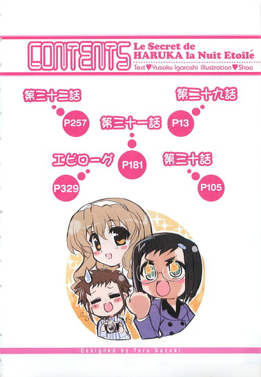

| [五十嵐雄策] 乃木坂春香の秘密08 | |
| 五十嵐雄策 | |
| (2015) | |
|
乃木坂春香の秘密 ８
五十嵐雄策
|
底本データ
一頁17行 一行42文字 段組１段
乃木坂春香の秘密⑧
容姿端麗で才色兼備、『白銀の星屑』という二つ名まで持つ超お嬢様、乃木坂春香。温泉旅行で彼女と一緒に乗り切った最後の夜は一生忘れることのないもので、俺たちの関係をほんの少しだけ進めたというか気持ちが通じ合ったというか......。そんな面映ゆい気分で正式な初デートに誘われたからか、なぜか春香がいつもよりも可愛く見えてしまうのだった......。
チビっ子戦闘メイドとランデヴーなメイド的新年会や、美夏との密着＠密室に戸惑ったお嬢様女子中学校潜入日記、果ては意外な一面を知ることになった椎菜のケガ見舞いなど、ある意味いつも通りの日常を過ごす俺は、その日常がいつまでも続くと思っていたのだが──。
お嬢様のシークレットラブコメ第八弾（はあと）
五十嵐雄策
五十嵐雄策の秘密⑧。10月３日生まれのＯ型。第４回電撃ｈｐ短編小説賞最優秀賞を受賞し、文庫デビュー。夢にまで見たアニメ化が実現したので執筆活動にも熱が入ってます。バリバリと原稿を進めつつ......代わりに司去試験の話題はもうしないで下さいとのことで──。
イラスト：しゃあ
しゃあの秘密⑧。「電撃Ｇ'ｓマガジン」で『ＣＬＡＮＮＡＤ』のコミック連載中です。マンガにアニメにゲームにコミケにと２００８年の夏はホントに大忙しです。三倍早くは動けません。

乃木坂春香の秘密 ８
嵐の前の静けさという言葉がある。
それの意味するところは暴風雨がやって来る前の天候は気圧の影響などで意外に崩れないってことが転じて、変事が起こる際の前兆ってのは思いのほか大きくないということだ。
簡単に言えば何かアクシデントが起こる時の前フリは意外に大人しく目立たないということ。
ある意味蛇頭竜尾とも言う。
「......」
いや前回に引き続き何だって突然こんなことを言い出したのかというと、それにはいちおうワケがあるのである。
ここ三週間の出来事。
まあ何というか、それはほとんど嵐の前の静けさみたいなもんだったんだよな。
もちろんそれに気付くのは少しばかり後──嵐本体がやって来てからのことになる上に、これら一連の出来事も単体で見てみれば静けさと呼べるほどそう大人しいものでもなかったんだが、それでも全体的に見てみればこれらの出来事が幕間というかほんのプレリュードだったってことは間違いない。
静けさというか前兆。
その後に起こることのある意味での発端の一つではある。
「......」
まあいつものごとくよくワカランことがごちゃごちゃと長くなっちまったが。
要するに何が言いたいのかというと。
この一月終盤から二月初めにかけてのおよそ三週間が、俺が深海に横たわるニュウドウカジカ（見た目が死んでそうな深海魚）のようにノンビリまったりと事態を静観していられる最後の機会になったってことなんだよ。
第二十九話
０
それは色々とアクシデント満載で風雪吹きすさぶ（文字通り）行程だった三泊四日の信州温泉旅行も何とか無事に終了し、ようやく家に帰りついたと思ったらアホ姉たちがそのままお疲れさま宴会とやらをおっ始めやがって、ツマミ作りやら酌の世話やらで結局深夜の二時過ぎまで付き合わされることとなったナイトメアな後日談から一夜が明けた、一月中旬の水曜日のことだった。
いつも通りの学園へと向かう通学路。
その途中の坂道。
「お」
「～♪」
そこで他の生徒たちに紛れて少し前を歩くほんわかぽわぽわお嬢様の後ろ姿を見つけた。
白いコートと同色のマフラーとに身を包んだ地上に舞い降りた清楚と可憐の化身。
どこか気だるい朝の風景の中にあって燦然と光り輝くそのオーロラのようなたたずまいはたとえ百メートル離れていてもすぐに分かる。うーむ、相変わらず全方位攻撃可能拡散対人迎撃レーザー的（いい意味で）なかわいさっぷりだな......
..................
......はっ。
いかんいかん、声をかけようとして思わず見とれて十秒ほど意識が遥か遠くまで飛んじまってた。別に交通事故で昏睡状態だった恋人と一年ぶりに再会したってわけでもないのに、朝っぱらからこんな色ボケマックスでどうする。
ピンク色に染まった頭を振りながら反省していると、
「あれ──裕人さんですか？」
「え？」
「わ、やっぱり裕人さんです♪ えへへ」
こっちに気付いたのかくるりと振り返るとふにゃんと顔を綻ばせて、春香がとてとてと人懐こいイワトビペンギンのように一生懸命に駆け寄ってきた。
そのホワイトデンドロビウムが咲くような笑顔に、
「お、おい、乃木坂さんがあんなに心を許した顔をしてるぞ......」
「太陽みたいな笑顔だな。かわいい......」
「てかまたあいつかよ......」
周りを歩いていた他の生徒たちが一瞬だけざわめく。効果音にすると「......ざわ......ざわ......」といった感じだ。
「おはようございます、裕人さん。昨日ぶりですね♪」
「ん、ああ、おはよう春香」
そんな周囲のざわめきをヨソに、弾んだ声で挨拶をしてくる春香。
というか正確には十四時間ぶりくらいである。何だかんだで昨日別れたのは夕方過ぎであったわけだし。
まあそれは些細な突っ込みで、
「今日もいいお天気ですね。ちょっと空気が乾燥気味ですが空飛ぶ小鳥さんたちも元気で......」
「ああ、そうだな」
交わされる挨拶代わりの会話。
それ自体はこれ以上ないってくらいのいつも通りのやり取り。
フランス料理で言えばオードブルみたいなそれは、普段ならばそのままさらに他愛のない通常会話へと進展していくはずなのだが──
「あ、え、えと......」
「ん、あー......」
今回は違った。
次にやって来たのはどこか落ち着かないような気恥ずかしいような何ともいえない雰囲気。
互いに顔を微妙に逸らしつつ明後日の方向を見る。
「あ、な、なんか変ですね......」
「あ、ああ......」
いやこれは別に俺の顔面がナチュラルに周囲を気まずい雰囲気にさせるセクハラ面だとかそういうわけじゃないんだよ。
ただ今回の旅行では色々と予測外なサプライズがあり──具体的に言えば二人でマフラー連結をしたり温泉に入ったり、ダグラス（特大着ぐるみ）の中で毛布一枚という微妙な状態で一晩を過ごしたり、おまけにそういった深い意味ではないとはいえ、その、何だ、た、互いに好きだと言い合ったりしたわけである。リアルタイムでは旅行というある種特殊というか独特な空気の中にあったせいかそれほど感じなかったんだが、一日経っていざこういった日常の空間の中で二人きりで思い起こしてみると何だか改めてこっ恥ずかしくなってくるっつーか......
春香もまったくもって同じような心境なのか、
「え、えと......」
「あ、あー......」
道のど真ん中でお見合い（結婚を前提としたものではなく）をする俺たち。
その周りを他の生徒たちがさらにざわめきながら「何やってんだ？」「あのメガネ、またなんかやらかしやがったんじゃないだろうな......」「どうする？親衛隊に知らせとくか？」とか言いながら怪訝な顔でひそひそと通り過ぎていく。
「......」
むう、我ながら本当に何をやってるんだろうね？自分で自分の行動がよく分からん気分というか......
とにかくこんな往来で二人同時停止状態を続けていても始まらん。
なので、
「あ、あー、春香、とりあえず歩きながら──」
そう言いかけて、
「──あ、そ、そうです！」
「え？」
と、春香がふいに何かを思い出したかのようにぱふんと胸の前で両手を叩いた。
「あ、す、すみません、急に大声を出してしまって......。あの、えと、何だか胸がどきどきして熱っぽくなってしまってちょっとだけ忘れちゃっていましたが......実は裕人さんにお話ししたいことがあったんです」
「お話？」
「は、はい。お話というかお願いというか......」
「？」
何だろうか。まあ春香のお願いならば目の前に最高級スルメを垂らされたニホンザリガニのハサミアクションのごとく大抵は即答でオッケーなんだが。
「え、えとですね......」
「ああ」
「あの......」
「？」
「そ、その......」
「??」
春香は少しの間もじもじと胸の前で指を絡めたまま下を向いていたが、
やがて改まったかのようにばっと顔を上げて、
「あ、あの裕人さん、こ、今度の日曜日............私と、その、デ、デ、デデデデートをしていただけないでしょうかっ？」
「──っ!?」
両手でぎゅっとグーを作りながらそんなことを言ってきた。
その顔はまるでほどよく熟した国産とちおとめ苺のように真っ赤だった。
「......」
ど、どういうことだ？
あまりに突然というか不意打ち的な告白に動揺する。
いや連日のこの寒さで俺の鼓膜がフリーズドライしてるんでなければ今デートって言葉が聞こえたような気がしたんだが......。デ、デートってのはつまりその、あのデートで間違ってないよな？いわゆる男子と女子が二人で仲良くどこかへ出かけて全身で青春をエンジョイする......
「......」
い、いやいや、まだそう決め付けるのは早計か。春香のことだからまた何かのアキバ系のイベントに行きたいとか何かのグッズが発売になってそれを買いに行きたいとかそういうオチである可能性も否定できん。大体今まではこういう場合は何か目的がある外出だったわけだし、それを今回はたまたまデートという呼称で言っているだけで......。......うむ、そうだ、それがファイナルアンサーに違いない。世の中そうそうウマイ話なんてないしな。
俺は内心の動揺を抑えつつ春香の方を見て、
「あ、あー、それで、それはどんなイベントなんだ？」
「え？」
「声優のサイン会とかドジっ娘アキちゃんコンサートとか、そういうのがあるんだよな？そうなんだろ？」
そう訊いてみたところ、
「............（ふるふる）」
春香は小さく首を横に振った。
「え、違うのか？ じゃあ何か買いたいアニメグッズでもあるとか......」
「............（ふ、ふるふる）」
再び横に振られる首。
気のせいか、さっきよりも強い調子である。
「だったら......」
何なんだろう。残るは何か雑誌で見た喫茶店（ネコミミorメイド）関係もしくは俺の知らない新たな領域の探索とか......
すると春香はうつむきながら仔ヤギの鳴くような声を出して、
「そ、そういう目的があるものではないんです......」
「？」
「こ、今回は、その、そういう目的があるものではないんです。そ、そうではなくて純粋に......ゆ、裕人さんと二人でお出かけがしたいと思って......」
「え？」
きゅっと目をつむりながら一生懸命な顔でそう言った。
「デ、デートという言葉が適切なのかどうかは分かりません。ですが美夏に相談してみたところ『お姉ちゃ～ん、そうゆうのを世間ではデートってゆうんだよ～。まがうことなき正真正銘ので・え・と（はあと）またはちょっと違った言い方すればランデヴ～かな？いや～ん、らんでぶ～でらぶらぶ～♪』と言われて......。だ、だからそうなのかなと......」
「......」
あの耳年増ツインテール娘はまたそういうことを......
しかしそれはともかく、確かにそれはデート以外の何物でもない。まさか春香が自分からこんなアクティブ（？）なことを言ってくれるとは......
「あ、ち、ちなみにお出かけしたい場所は〝こすもわーるど〟というところなんです。横浜にあるというあみゅ～ずめんとぱ～くで......。えと、実は回数券のセットをいただきまして......」
「回数券？」
「は、はい、これです」
おずおずと差し出された春香の小さな手の上には、観覧車のイラストが描かれたパスネットのようなものが数枚乗っていた。
「えと、詳しい仕組みはよく分からないのですが、これがあればほとんどのアトラクションが利用できるみたいで......」
手の中のカードと俺の顔とをちらちら見比べながら言う。
ふむ、確かに遊園地用の回数券みたいだな。ぱっと見たところ三千五百円分が六枚も揃っている。その横浜コスモワールドとやらのアトラクションの相場がいくらくらいなのかは知らんが、これならまず不自由することはないだろう。......ん、そういえば春香、この券をいただいたとか言ってたが、だれからもらったんだ？三干五百円×六で二万千円。回数券だけあって多少割り引きはされているのかもしれんが、それでも決して安いもんじゃないし......
「なあ、春香、この回数券なんだが......」
なので疑問に思い訊いてみたところ、
「あ、はい。実は......茅原さんからいただいたものなんです」
「茅原さん？」
そんな名前が出て来た。だれだ、それ？
「あ、えと、あの方です。初詣の時に名刺をいただいた......」
「初詣......」
記憶を不器用なアズマモグラのように掘り返す。
......って、安産地蔵の近くで声をかけてきたやけにおどおどしたあの人か。なんか何とかプロダクションがどうとかいう......。あの時は他にインパクトがあることがあまりにも多すぎたんですっかり忘れてた。だけどそんな人が何だって今さら遊園地の回数券をくれるんだ？
「私にもよく分からないのですが......昨日突然お家にいらっしゃったんです。その時にこれをいただいて......。よければだれかお友達でも誘ってゆっくり楽しんできてくださいと言われました。あとは世間話やおうちで飼ってらっしゃるというジャンガリアンハムスターの話などをされてそのまま帰ってしまわれましたけど......」
「......」
ふむ、なんか本当に何しに来たのかいまいちよく分からんな。ハムスターのアンケートか何かだろうか？
「あ、あの、それで、どうでしょうか......？ よ、よろしければごいっしょしていただけるととっても嬉しくて......。あ、も、もちろん裕人さんのご都合が合えばのお話なのですが......」
不安そうな春香の言葉に、
「いや、大丈夫だ。行く」
「え......」
「日曜日はヒマだ。今のところ特に用事も入ってない」
何度も言っているように、休日に俺がやるべきことなどどこぞのアホ姉とセクハラ音楽教師のエサの用意とその他掃除洗濯の家政夫ワークくらいしかない。そんなもんはこの際用事の内に入らん。それに......
「せっかくの春香の誘いだ。たとえ何か用事があったとしても絶対に行くぞ」
それがメイン理由である。断るなんてウチのビッグガメラ（ミドリガメ）が二足歩行をして口から火を吐くくらいにあり得ない。
「ゆ、裕人さん......」
その言葉に少しだけ目を潤ませながら春香がじっと見上げてくる。
そのペットショップでのトリミングを終えて飼い主の帰りを待っていた仔犬みたいなつぶらな瞳はあまりにけなげすぎて......うう、正視するのが少しばかりためらわれちまうな。
なので気恥ずかしさを隠すために俺は、
「あ、あー、それじゃあとにかく、日曜に横浜だな」
「は、はいですっ。横浜さんです。よろしくお願いします♪」
「あ、ああ」
微妙に心臓の動作不良を感じつつそう答えて、
ともかく、こうして俺と春香の〝初デート〟が決まったのだった。
１
それからあっという間に四日が過ぎて。
いよいよというか何というか約束の日がやって来た。
一月二十二日、日曜日。
言ってみればＸデーの、その午前十時三十分。
俺は待ち合わせ場所である横浜コスモワールド前に向かって歩いていた。
「......」
空は極限まで薄く作ったカルピスの上澄み液のように透き通っていて雲一つない快晴である。気温は少し低めだがそれでもほとんど平年並み。コートを着込めばまず問題なしといったところだ。
どこかへ出かける気候としては申し分ない。
というかむしろ絶好のデート日和であると言える。
言えるんだが......
「......むう......」
御歳百五十歳のゾウガメのごとく歩を進めながら、俺はどこぞの海に沈んだ古代帝国のような声を漏らしていた。
何だか落ち着かなかった。
落ち着かないというか、ほとんど緊張に近いテンパった心地だった。
「......」
理由は明白というか単純である。
春香と二人での〝初デート〟。
その言葉の醸し出すプレッシャーと緊張感とに負けて、俺の一枚三千円（税抜き）の安ガラスのようなハートが勝手にリズムの狂いまくった三十二ビートを刻んでいるのである。
「......」
いやもちろん決して春香とのデートがイヤってわけじゃないし、そもそも春香と二人でどこかへ出かけるのは別にこれが初めてってわけじゃない。
初めてじゃないどころか今までアキハバラ（×二）、夏コミ、冬コミ、声優イベント等々、片手では数え切れないくらいに経験している。いわば春香とのお出かけ検定三級の取得者レベルってやつだ。
だがしかし。
しかしである。
春香も言っていたが、そういった特定の目的なしで二人で出かけるのは実のところこれが初めてなんだよ。
ましてやそれが〝初デート〟の名を冠しているとくれば、もはやハードルの跳ね上がりっぷりが半端じゃない。ヘタな姿は見せられんというか、おかげで今日は朝から何だか発情期のシャイアー馬のように落ち着かず待ち合わせの二時間も前に家を出るハメになっちまったし......
「............」
しかしもうここまで来たら今さらジタバタしても仕方がない。
こうなったら、とにかく当たって砕けろだ。
まあ本当に当たって砕けて木っ端微塵になっちゃあ元も子もないんだが、あくまでそういう意気込みということで。豚も死ぬ気になれば空を飛ぶ......とも言うしな（少し違う）。
で、そんなこんなをしている内に待ち合わせ場所に辿り着く。
海に面した遊園地入場口の前の少し開けたスペース。
そこの街灯の下が約束した待ち合わせ場所である。
とはいえまだ待ち合わせ時間までは一時間ほどある。
幸い座るのにちょうどいい置き石もあることだしここはヒッヒッフーと深呼吸でもしながら心を落ち着けて、春香がやって来るのを待とうと思いきや──
「......」
「......」
「あ、あれ、裕人さん......？」
──その余裕は与えられなかった。
待ち合わせの街灯の下。
なぜかそこには......すでに両手を身体の前で揃えながらちょこんと立っている春香がいた。
「は、春香......？」
「あ、は、はい」
「え、い、いや、何だって......」
もういるんだ？ 待ち合わせ時間は確か十一時半だったはずである。まさか俺がベタに時間を一時間間違えてたとか......
すると春香は少し恥ずかしそうに早口になって、
「あ、え、えとですね、今朝は何だか早く目が覚めてしまったんです。よ、よく分からないのですが胸がどきどきしてベッドにいても落ち着かないというか、キンググリズリーくんを抱きしめてもちっとも治まらなくて......。なので少し早起きをして支度をしていたのですが、八時過ぎにはそれも終わってしまって、お家にいても何だかそわそわとして落ち着かないので、少し早かったんですが出てきてしまったんです」
「そ、そうなのか......」
「は、はい。あの、裕人さんはどうしてこんなに早く......？」
「え？ あー、俺も似たようなもんだ」
うなずき返す。
そういえば旅行の時も春香は早起きだったな。それで旅館の中を散歩してたんだっけか......
ほんの一週間ほど前のことながらもう半年くらい昔のことのように感じられる出来事に思いを馳せる俺に、
「え、えへ、気が合っちゃいましたね♪」
ちょっとだけはにかんだようにそう言って笑いかけてくる春香。
それはもうある種の兵器で、ほとんど有無を言わさず反則的なほどに五臓六腑の奥底にえぐりこんでくるような笑顔であり──
......う、か、かわいすぎるぞ......
しょっぱなからのイノセントスマイル・インパクトに思わず頬が緩んで溶けたバニラエッセンスみたいになっちまう。やべぇ、今日は本当に殺られるかもしれん......
ちなみに今日の春香は暖かそうなマフラーにスカート、ファー付きのコートという服装だった。
冬のセレクトスタイル＠お嬢様といった感じ。
本人の性格を映したかのように白と薄ピンク色とを基調とした柔らかな色合いのそれらはもう鬼に金棒どころか魔王に血塗られたギターくらいによく似合っていて、そのままディスプレイに展示されてもおかしくないレベルなのは当然なんだが......今日は何だかいつもより少し雰囲気が大人っぽいような気がする。漂う空気が横浜にマッチングしているとでも言おうか......
「む、むう......」
何なんだろうね？ みなとみらいなどという普段は来ないようなムーディーでロマンスフルな環境が俺の交感神経に特殊な働きかけをしてるんだろうか。それとも何か他に理由があるのか......
「あ、え、えと......」
そんな風にボーっと見惚れていると、春香がもじもじと恥ずかしそうに下を向いていた。う、しまった、今の視線は微妙にセクハラ入ってたか。
俺は慌てて顔の前で手を振って、
「ス、スマン！ 別に変な意味があるわけじゃない。ただ、その、何だ、今日の春香はなんかいつもより大人っぽいと思っただけで......」
「え......」
「そ、それだけじゃなくて、かわいいとも思うし、に、似合ってるとも思うぞ。や、いや、これは他意があるってことじゃなくてだな......」
どう言えばいいのか説明に窮していると、
「......あ、ありがとうございます」
「え？」
「そ、そう言ってもらえるととっても嬉しいです......。実はこれ、今日のために美夏といっしょにお買い物に行って選んだもので......。だ、だってせっかくの〝デート〟ですから、ちょっとだけがんばっちゃいました......」
褒められた小動物のように嬉しそうにこっちを見上げながら両手をきゅっとグーにする。
その姿もまた可憐で愛らしく思わずそのまま小脇に抱えて家までお持ち帰りしたくなるようなたたずまいで......って、なんかさっきから極めて頭の悪そうなことしか言ってないな、俺。
「あ、そ、それに......」
「？」
「そ、それに、その、ゆ、裕人さんも、今日は何だか普段と違う感じです。何だかちょっと............かっこいいです」
「え......」
春香が少し声を小さくしてそんなことを言った。
「いつもよりも見ていてどきどきするというか......あ、わ、私、何を言ってるんでしょう！き、気にしないでくださいっ」
「あ、い、いや......」
「............（真っ赤）」
恥ずかしそうにきゅっと目をつむりながら下を向く春香。
「......」
「......」
そのまましばし二人して沈黙。
やがて、
「あ、あー、じゃあ、予定より早いけどとりあえず行くか？」
「そ、そうですね。い、行きましょう」
どちらともなくそううなずき合って、
遊園地の入場口へと歩き始めようとした時だった。
「──あ、ぐ、偶然ですね、乃木坂さん」
「？」
ふいに背後からそんな声がかけられた。
なんかどこかで聞いた覚えがあるような遠慮がちな声。
振り返るとそこにいたのは──
「こ、こんにちは。お久しぶりです、乃木坂さん。こんなところで会えるなんて......」
「え、茅原さん......？」
そこにいたのは初詣で見かけたあのメガネの女の人と、もう一人初めて見る女の人だった。
「か、回数券、利用してくれたんですね？ あ、ありがとうございます。嬉しいです」
「あ、い、いえ、そんな。せっかくいただいたものですから......」
春香がふるふると顔の前で手を振ると、
「あ、そ、それは気にしないでください。そういった何かとプッシュに役立ちそうなもの──い、いえ、そういうギフト的なものは事務所にたくさんありますから......」
「？」
「え、今のは、そ、その......。あ、え、ええと、そちらの男の子は確か大晦日の日に乃木坂さんといっしょにいた方ですよね？改めまして、茅原弥生と申します。こんにちは」
「え？ あ、はい。綾瀬裕人です」
突然の振りに慌てて挨拶をし返す。
「あ、綾瀬くんですね、よろしくお願いします。あ、それでこっちは同じ事務所でマネージャーをやっている後輩で......」
「小早川希美っていいます。よろしくー」
ぴっと人さし指と中指をおでこに当てて笑いかけてくる。こっちはこっちで何だかやたらと軽い感じだった。
「あ、はい、よろしくお願いします。──えと、それでどうして茅原さんたちがここに......？」
春香がちょこんと首をかたむけながら尋ねる。
それは当然の疑問だった。いかに回数券をくれた張本人とはいえそれだけでここにいる理由にはならん。まさかこの二人で遊園地に遊びに来たわけでもあるまいし......
すると茅原さんはなぜか少し焦ったような顔になって、
「そ、それはね、きょ、今日たまたますぐそこのランドマークタワーのクイーンズスクエアで開催されるイベントに事務所が参加することになっちゃって、それのお手伝いをするために来ることになったからなの。べ、別に怪しい理由とかではなくて......」
「いべんと......ですか？」
「う、うん、そう。三時から開催される予定なんだけど、その下見とか準備とか色々とやることがあって、ちょっと早めに現地入りしたんです。ね、狙ってここで待ってたとかいうわけじゃないですよ？」
そう一生懸命に身振り手振りで説明してきた。
むう......なんか知らんがこの人たちはこの人たちで色々と忙しいというか大変みたいだな。
春香と二人で顔を見合わせていると、
「──あ、そ、そうだ。ね、ねえ、もしよかったらあとで乃木坂さんたちもちょっとだけイベントに来てみないかしら？」
と、そこで茅原さんが今思いついたかのようにそう言った。
「え？」
「え、ええと、べ、別に深い意味はないんですよ？ほ、ほら、だれでも気軽に参加できる雰囲気のものだし、デ、デートにぴったりのコンセプトだから、きっと二人で楽しめると思って......」
「デ、デート......」
その言葉に春香がぴくっ！ と反応した。
「あ、あれ、ち、違った？ 二人で仲良く楽しそうに話してたからてっきりそうだと思ってたんだけど......」
「あ、え、え、えと......」
慌てたようにわたわたと両手をばたつかせた後に春香は額で目玉焼きを焼けそうなほど顔を赤くして、「............ち、違わない、と思います......と、というか、きっとそうだと............」
仔羊が鳴くような声でそう言った。
それはまるでデートという言葉自体に照れているかのようで......うーむ、そこまで意識されるとこっちまで気恥ずかしくなってくるっつーか......
その感想（？）は周りで見ている茅原さんたちも同じなのか少し困った感じで、
「あ、あの、そこまでいっぱいいっぱいに考えなくてもいいような気も......。え、ええと、そ、それでどうかしら？ここからすぐのところだし、と、特にダメじゃなかったらぜひ来てほしいかなとか思ったり......」
「え、そ、その......」
胸の前で指回し体操（人さし指）をしながらちらちらとこっちを見る春香。
それは明らかに九時間以上じっくりと煮込まれて臭みが取れたスジ肉を前にして遠慮がちにシッポを振る仔犬の顔だった。
「──あー、もしよかったら後で行ってみるか？」
「え？」
「そのイベント。けっこう面白そうなんじゃないのか？すぐ近くでやるみたいだし、行ってみても損はないだろ」
「え、ほ、ほんとですか！」
「ああ」
実際楽しそうだしな。それにその、デートにぴったりだっつーんならむしろ俺の方から提案したいくらいである。
そう言うと春香はぱあっと顔を輝かせて、
「あ、ありがとうございますっ。あ、そ、それでは......その、よろしければ後ほど伺わせてもらいたいと思いますです」
「あ、い、いえ、賑やかになってこちらとしても嬉しい限りです！」
本当に嬉しそうに何度も何度もうなずく茅原さん。ふむ、そんなに喜ぶようなことなのかね。
で、それから簡単にイベントの開催場所などについて説明を受け、
「そ、それではお待ちしていますから......」
「またあとでお会いしましょうねー」
「は、はい、失礼いたします」
「あー、どうも」
ぶんぶんと手を振る茅原さんたちに別れを告げて、俺たちは遊園地の入場口へと向かったのだった。
「ねー、茅原せんぱーい。別にこんなまだろっこしいことしなくてもはっきり提案しちゃえばよかったんじゃないですかー？」
「え？」
俺たちが去った後、
二人だけになった後の入場口前で、小早川さんがそう口にした。
「乃木坂さんのことですよー。もう金部ぶっちゃけちゃってストレートに言っちゃった方が早かったんじゃないかと思うんですけどー」
「だ、だめよ。彼女こういうことにはあんまり興味はないみたいだし、お家も大きくて厳格なところだから、ゆっくりじっくりと説得していかないと......」
「ふーん、そういうもんなんですか？」
「そ、そうなの。せっかくの逸材を逃す手はないもの......」
ぐっと手を握りしめながら横浜ベイブリッジを睨む茅原さん。
その瞳の中には都市ガスで燃焼するガスコンロのような炎が燃え盛っていた。
２
「わあ、ここが遊園地なのですね......」
入場口を通過し敷地内に入るなり、春香が感激したように声を上げた。
「オバケ屋敷にめり～ご～らんどにじぇっとこ～すた～......時計付きの大きな観覧車もあります。すごい......」
目をきらきらとさせながら子供のようにきょろきょろと辺りを見回す。
その様子はまるで初めて熱帯魚を見たゴマフアザラシの赤ちゃんのようである。いやこの反応からしてもしかして......
「春香、遊園地は......」
「あ、はい、初めてです。今まではお父様があまりいい顔をされなくて......。『あ、あのような男と女が二人きりで密会するいかがわしいところのことは知らなくてよい！さ、三半規管を悪くする！』と......」
「......」
やっぱりそうか。まあ春香父のよく分からん理屈はともかく、新幹線もこの前が初乗りだったし、今さら驚くとこでもないだろう。
「お話では聞いていたのですが、実際に見てみるととっても感動です......。あっ、あれは何でしょう、裕人さん。何だか不思議なカタチをしています......」
次から次へと視線を躍らせる春香。
本当に心から楽しそうな笑顔である。
「あー、それじゃいつまでも見てるだけなのもアレだし、適当に回ってみるか」
「あ、は、はいっ。ど、どれから行きましょうか？あっちのくりふどろっぷ？それともこっちのさいくるものれ～るなどもありますし......（わくわく）」
案内パンフレットを胸の前でぎゅっと握りしめながら好奇心いっぱいの表情をする。
「そうだな......」
こういった場合どういう順番で回るのが適切なんだろうか。女子と二人で遊園地に来るのなんて当然ながら初体験なためさっぱり分からん。無難なところではコーヒーカップ→メリーゴーランド辺りのファンシーコンボとかか。いやゴーカート→ジェットコースターのスクリーミングコンボってのもあるな。意表をついてオバケ屋敷→ホラーハウスのスプラッタコンボもありっちゃありだし......
「......」
むう、意外に難しいな。ツインテール娘たちならこんな時きっと『こうゆう時は自分の心に素直になって本能と欲望のおもむくままが～っとケダモノになっちゃえばい～んだよ、おに～さん♪』とかまたトンデモなことを言うんだろうが......
「......ん、ツインテール娘？」
と、そこに至って一つ思い出したことがあった。
──そういえばこういう時には必ず美夏たちの監視というか尾行が付いてるのが今までのパターンなんだよな......
「......」
バッと身を翻して辺りを見回す。
「？ 裕人さん？」
周囲に見えるのは取り立てて怪しいところのない男女二人組や親子連れの姿。
今のところ不審な人影やレンズの反射光はないようだが、油断は禁物だ。何せ気配を消すのなんかは朝飯前なメイドさんたちだし、特にマスコット人形とかの被り物系は無口メイド長さんが変態している（趣味で）恐れがあるので気は抜けん......
ハンターに狙われる湖上のマガモのような気分で周りの様子を窺っていると、
ジャジャジャジャーン ジャジャジャジャーン♪
「!?」
突然ポケットから着信音が鳴り響いた。
腹にクる重苦しいメロディー。
これは......ベートーヴェンの『運命』か？
ほとんど壊滅的なレベルに音楽音痴な俺（シャープとフラットが何なんだかいまいち分からない）でも知っている有名曲であるが、とりあえずこんな着信音を設定した覚えはこれっぽっちもない。いやこれはまさか......
「あの、裕人さん、『運命』が鳴って......」
「ん、ああ」
イヤな予感を覚えながら出てみると、
「はろはろ～、おに～さん、元気～？ 今日はとうとう決戦の日だね～。ちゃんとお姉ちゃんとのらぶらぶいちゃいちゃで～とを満喫してるかな～♪」
「......」
ピッ。
反射的に切っちまった。
いや何となく本能が指を勝手に動かしたというか......
ジャジャジャジャーン ジャジャジャジャーン♪
即座に再び『運命』が鳴る。
「あの、裕人さん......？」
「............。スマン、美夏からみたいだ、ちょっと待っててくれ」
「あ、はい」
ちょこんと首をかたむける春香にそう言って、少し離れた場所で通話ボタンを押す。
すぐに受話口の向こうから元気な文句が飛んできた。
「も～、おに～さん、何で切るの～！ せっかくのせくし～美夏ちゃんからのえんじぇるぼいすこ～るなのに～！」
「いや悪い、何となくロクな予感がしなくてな......」
カブト虫の報せというかそういった類のものである（いや冬には幼虫だが）。
まああくまで勘ではあるとはいえ、おそらくそれは間違ってないだろう。このツインテール娘のことだから、どうせまたどこからか監視＆盗聴していてもっと積極的に行動しろだとかもっと男らしい言葉をささやけだとかそんなとこに違いない。
だが次に受話口の向こうから聞こえてきたのは、
「あ、それはだいじょぶ。わたしたち、今九州だから♪」
「は？」
そんな実にあっけらかんとした言葉だった。
いや九州って......あの九州か？ アップルマンゴーとか桜島大根とかで有名な。
訊き返すと、
「うん、そ。実はこの前餌付けしたインパラがホームシックにかかっちゃったみたいでさ～。ちょっと様子を見に行かないとってことで、昨日から鞠愛さんといっしょに宮崎にある動物園に来てるんだよ。見学も兼ねたお見舞いって感じかな？それで今から抜け落ちた羽毛のように傷付いたエカテリーナちゃん（インパラの名前らしい）を優しくメンタルケアしてあげるとこ。だから今回はおに～さんたちのらぶらぶっぷりを観察──こほん、おに～さんたちのことを陰から生温かく見守ったり、思い出をハイビジョン画質で録画したりすることはないから、安心してい～よ♪」
「......」
医療メイドさん、アフリカ原産ウシ科哺乳類もストライクゾーンなのか。てかインパラだとかホームシックだとか突っ込みどころが満載どころか特盛りなんだが、そこはもういつものことなので婚礼期のオス孔雀の羽色のごとく鮮やかに放置しておこう。
「分かった、それじゃあとりあえず美夏はそれをがんばってくれ。んじゃまた──」
速やかに通話を終えようとして、
「わ～、待った待った！ だからその前におに～さんの現状を確認しとこうと思ってわざわざ電話したんだってば～！」
「......」
やっぱりそれか。
心の中で深いため息を吐く俺に、
「それでそれでおに～さん、お姉ちゃんとのデートはどんな感じ～？現在進行形で絶賛らぶらぶ中？それとも想い出いっぱいのシンデレラみたいに大人の階段を上っちゃうとこ？きゃっ♪」
この上なく明るい声でそう訊いてきた。
「......別に、普通だ。今のところは特に何もないぞ」
「え～、そなの？ でもおに～さんとしては初デートでどうすればいいかとか微妙に困ったりしてるんじゃない？アトラクションを回る順番で迷ったりとかお姉ちゃんにどう接したらいいのか困ったりとかどうやって秘宝館に連れ込もうか思案に暮れてたりとか～」
「ぬ......」
最後の一つはまったくもって濡れ衣だが前半は否定できんのが辛いところである。
「あ～、やっぱりね～。優柔不断なおに～さんのことだからきっとそうなんじゃないかと思ったんだよ、うんうん。──というわけで、らぶり～な美夏ちゃん先生が手助けをしてあげることにしました」
「手助け？」
「そだよ。デートをする上でポイントになりそうな素敵アトラクションをピックアップして、さらにそれに美夏ちゃん先生のワンポイントアドバイスも付けた完璧なガイドを今さっきメールで送っといてあげたから。これを見れば丸まったアルマジロみたいに奥手なおに～さんでもばっちりだよ♪」
「......」
見ればいつの間にか携帯のディスプレイに受信メールの表示。
相変わらずホントに色んなことを毎回毎回考えつくな......
呆れ半分ある意味感心半分でディスプレイを見つめていると、
「──でもね、おに～さん。こうゆう場合は基本的にはあんまり考えすぎない方がうまくいくもんなんだよ？」
「え？」
「だからさ、いつも通りでいいと思うよ。ヘンに気張ったってどうせいいことなんてないんだから。せっかくの初デートなんだし、自然体が一番なんじゃない？」
「む......」
それは美夏にしてはこの上なくまともな意見だった。
さっきまでの発言とは微妙に矛盾してる気がせんでもないがそれでもまっとうな見解。うーむ、どういう心境の変化か分からんが意外だな。このツインテール娘（身長一四七センチ）も内面的には少しは大人になったのかと少しだけ見直しかけて──
「ま、ほんとは自然体でいきつつインドマグロがエラ呼吸でもするかのようにさりげなくらぶらぶいちゃいちゃするのが理想的なカタチなんだけどね～。歩いている途中でなにげな～く腰に手を回したりだとか、アイスクリームを食べてる時にお互いに交換して間接キスをしたりだとか、夜景を見ながら『目の前にある景色よりも俺は春香の瞳の中に映る光の宝石を見ていたいんだ......』なんてのもありかな～。それでそれで、二人はそのまま寄り添うように夜の街へと消えていくの。や～ん、あだるてぃ～♪」
「......」
──甘かった．
アンデス原産チェリモヤ（森のアイスクリームと呼ばれている果物）くらいに甘かった。
電話の向こうできゃっきゃっと黄色い声を上げる美夏。てかこのツインテール娘、段々思考経路がどこぞのセクハラ音楽教師に似てきてないか？そういえばあの人も中学の頃は一時期ツインテールだったし、同様の進化の系図（ダメな意味で）を辿ってるんじゃないだろうな......
耳年増な妹お嬢様（十四歳）の将来についてそこはかとなく不安になる俺に、
「じゃおに～さん、とにかくそうゆうことでがっつりがんばってね。わたしたちとしてはステキで無敵なお義兄さん的展開を期待してるから～♪」
「あ、おい──」
「ばいば～い♪」
そう言って電話は切れた。
「......」
はあ......
なんか、一気に疲労した気分だな......
ともあれ美夏の言うことには一理あった。
色々考えたって思考の泥沼スパイラルにハマるだけだし、緊張やらプレッシャーやらでおそらく自滅するだけだ。あまり難しいことは考えずに肩の力を抜いて普段のままの自分で行動するのが現状では一番かもしれん。
「あ、裕人さん、お帰りなさいです。あの、美夏は何と......？」
「ん、あー、いや、大したことじゃない。それよりどこから回るかだがな......」
「え？ あ、はい」
なのでとりあえず順番などは決めずに面白そうなところを適当に回ってみようと提案してみた。それはともすれば投げっぱなしジャーマンとも取れる微妙な提案だったが、春香は何のためらいもなく無邪気な笑顔でにっこりとうなずいてくれて、
「あ、はい。賛成です。その方がのんびりと回れますし、なんだかわくわくします♪」
そう快く了解してくれた。うう、ホントに素直ないい娘だ......
「あー、それじゃ、行くか」
「はい♪」
というわけで、改めて園内を回ってみることになった。
二人して並んでカラフルに舗装された道を歩き出す。
「でもほんとうに色々なあとらくしょんがありますね。目移りしてしまいそうです......」
「ああ、意外に多いんだな......」
春香の言う通り、園内には思った以上に多くのアトラクションがあるようだった。
ジェットコースターなどの定番の屋外型のものからゲーセン調の屋内型のものまで。
入園口付近からは敷地がそこまで広いようには見えなかったんだが、見かけよりも案外奥行きがあるというかあちこちにムダなくアトラクションが配置してあるみたいである。
そんな中で春香が最初に興味を示したのは、
「あ、裕人さん、あそこに大きなマグカップがありますよ！」
「ん、みたいだな。乗ってみるか？」
「は、はい、ぜひ！」
コーヒーカップだった。
嬉しそうに声を上げながら俺の手を引いてとてとてと色鮮やかな巨大陶器製西洋茶碗へと乗り込んでいく。
「わあ......これがくるくると回るのですよね？」
「ああ、すぐに動き出すと思うぞ」
「はいです。わくわく......」
やがて軽快な音楽とともにゆっくりとカップが回り出した。
「す、すごいです、本当に回ってます！」
「ああ」
「素敵......。ゆらゆらでふわふわで、まるでベニスでゴンドラに乗っているみたいです......」
少しだけ身を乗り出しながらうっとりと周りを見渡す。
まあそれはいいんだが、
「春香、楽しいのも分かるけどちゃんと掴まってないと危ないぞ」
「え？」
「ただ回ってるだけに見えて意外と揺れるもんだからな。油断してるとコケたりする」
「あ、はい。気を付けま──きゃ、きゃっ」
と言った傍から、遠心力にそのタンポポの綿毛のように軽い身体が負けたのか春香がふらりと上半身をよろめかせた。
「──っと」
とはいえいつもの空中四回転半の大回転とかに比べれば全然かわいいレベルのもんである。バランスを崩して倒れこむ前に肩を支えて無事キャッチすることに成功した。
「大丈夫か？ ケガとかは？」
「あ、は、はい。おかげさまで......」
「だから言ったろ。一見ファンシーな乗り物だが意外にプチデンジャラスなんだ」
俺自身子供の頃にハデにすっ転んで顔面からカップ中央のハンドル部分に突っ込んだ（そしてメガネにヒビが入った）というのを体験済みである。
「あ、ありがとうございます。やっぱり裕人さんは頼りになりますね」
「あー、いや」
「こ～ひ～かっぷだけに救って（掬って）いただきました♪」
にっこりと微笑みかけてくる。
むう、台詞はいまいち微妙だが（というか葉月さんレベルだが）、それを忘れさせるほどの癒しの極致な笑顔だね。
で、まあそんな感じに初めてのコーヒーカップタイムを終えて、
「えへへ、面白かったですね、こ～ひ～かっぷさん♪思っていたよりもずっと動きがあったというか、えきさいてぃんぐだったです」
「ああ、そうだな。それじゃあ次に行くか。まだアトラクションはたくさんあるし」
「はいっ」
うなずいた春香とともに、順々に色々なアトラクションを巡っていく。
「あ、見てください、このパンダさんの乗り物、とってもかわいらしい鳴き声を上げてます」
「......ワンとは鳴いてないみたいだな」
サファリペットというパンダ型をした乗り物（対象年齢三歳以上）でパンダライダー体験をしたり、
「あっ、あちらにあるあれは何でしょう？ 雪だるまさんの置物がありますが......」
「なんか氷点下の世界が体験できるアトラクションらしいぞ。寒そうだ......」
アイスワールドで擬似北極体験をしたり、
「あそこに見えるのってアザラシさんでしょうか？つんと立ったお鼻がぷりてぃ～です」
「どれどれ......ああ、ノースポールっていうアザラシ型コースターらしいな」
反り返ったアザラシ型アトラクションでアザラシマスター体験をしたりと、
色々とバリエーション溢れるひと時だった。
「裕人さん、遊園地ってとってもとっても楽しいですね♪」
「ああ、そうだな」
「こんなに素敵なところならもっと早く来てみればよかったです。どうしてお父様は反対だったのかな......」
にこにこと笑いながらちょっとだけ首をかたむける春香。
その顔は本当に無邪気で活き活きと楽しそうで......うむ、やはり余計なことは考えずに自然体で行くのが正解だったみたいだな。
そんな風に改めて確認しつつさらに歩を進めていく。
そして最初のコーヒーカップから数えて七つ目に訪れたアトラクション。
それは『新・幽霊堂』というオバケ屋敷だった。
「な、何だか不気味な感じですね......」
入り口のおどろおどろしい看板を見上げながら春香が心細げにつぶやいてくる。
「まあ、オバケ屋敷だからな」
オバケ屋敷が不気味じゃなかったら羊頭狗肉もいいところである。あるいはぬいぐるみのないファンシーショップってところか。
「こ、ここ、入るのですよね......？」
春香が恐る恐るといった感じに訊いてくる。あんまり気が進みませんって顔だ。
「いや、まあ入りたくないんならムリにとは言わんが......」
「い、いえ、は、入ります。ゆ、遊園地といえばオバケ屋敷、オバケ屋敷といえば遊園地です。二つは切っても切れないロミオとジュリエットな関係で『......オバケ屋敷でムンクの絵のように絶叫せずして遊園地をスペアリブの髄まで堪能したとは言えません』、と葉月さんも仰っていましたし......」
「......」
それは微妙に間違った知識な気がせんでもないが。
ちなみにここは美夏がピックアップしたというらぶらぶポイントとやらの一つに入っていた。
受け取ったメールによると、
『らぶらぶポイント①：オバケ屋敷。こうゆうのにからっきし弱いお姉ちゃんはきっと崖っぷちに一匹だけ取り残されて切なく鳴き声を上げる仔鹿みたいに怖がると思うから、そのケアとフォローをちゃんとしてあげるよ～に。男らしく頼りになるところを見せるチャンスだよ♪』
とのことらしい。
まあいつかの文化祭で銃声を聞いたバンビちゃんのように怖がっていたのはむしろ当のツインテール娘の方だが、ここでそれに触れるのは野暮ってもんだろう。
「それじゃあ、入るか」
「は、はい......」
回数券を受付に通して、不安げな春香とともに中へと入る。
建物の中は基本的には真っ暗だった。
四方を金網に覆われた乗り物に乗って進んでいく、いわゆるライド系のオバケ屋敷らしい。何でも手元のスイッチで恐怖度をレベル一から三まで調整できるシステムのようだ。
「く、暗いですね......」
ライドに乗るや否や、春香が緊張したような声を上げてきゅっと服の袖を掴んできた。
「な、何だかこういう真っ暗闇だと、あの時を思い出します......イノセント・スマイルを返却するために裕人さんと二人で夜の学園に行った日のことを......」
「あー」
あの夜の図書室侵入事件か。
もはや今から八ヶ月も前の出来事だが、思えばあれが春香と仲良くなる最初のきっかけだったんだよな。あれ以来、俺は春香のことを春香と呼ぶようになり春香は俺のことを裕人さんと呼ぶようになったわけだし......
「でも懐かしいな。確かあの時は春香が腰を抜かして大変だったっけか」
「あ、え......？ そ、それは......」
「本当に怯えてる感じだったよな。確か五分くらい立ち上がれなかったような......」
「も、もう、裕人さん、いぢわるです......」
そんなやり取りをしていると、
ゴトリ。
鈍い音を立ててライドが動き出した。
「う、うご、動きました......」
「ん、本当だ」
暗闇の中ゆっくりと疾走していく四面金網張りのライド。
なかなかに不気味な感じである。
「で、でも何だか......あの時よりも安心できるような気がします」
「え？」
「こ、怖いには違いないんですけど、それでもどこか心の奥底ではだいじょうぶだと感じているというか......。裕人さんが頼りになるって、分かってるからなのかな......」
そう言いながらささやかにぴとりと身を寄せてくる。
「春香.........」
同時に柔らかな感触とそこはかとなく甘やかな香りがふんわりと漂ってきて......ぬ、ぬう、何やら色んな意味で緊張するな。
迷いつつも春香の肩に手をかけようとしたところで、
～～～！
「きゃ、きゃあっ！」
不気味な効果音とともに目の前に磔にされた人間のようなモノが出現した。
春香が絶叫を上げて全身でしがみついてくる。
「は、春香、大丈夫だから──」
「や、いやですっ！ こ、来ないで......っ！」
「は、春香......」
「や、やああっ！ 裕人さんの目が、裕人さんの目が無機質な宇宙人さんみたいに......っ！」
「そ、それはメガネだ、春香......」
ていうか安心できてるんじゃなかったのか？むしろあの時よりも怯え方＆パニック具合が三割増しなんだが......。今回はニセモノとはいえリアルな形で目の前に幽霊が蠢いているわけだからある程度は仕方がないとして、それにしたって春香の言うところの安心効果が全然感じられん。
「......」
......ま、まあそれ（俺の存在価値）について深く考えるとブルーになることこの上ないのでこの場はスルーしとくとして、とはいえ現状はそう悪いもんでもなかったりする。
何だかんだ言いつつも春香はぴったりとくっ付いたまま離れないでいてくれてるし、春香がくっ付いてくれるということは腕の辺りにむにゅっとソフトランディングな感触が発生したりもして......むう、なんかオバケ屋敷の中でプチパラダイスな気分だな......
そんなことを考えている内に、ライドはゴールまで辿り着いたみたいだった。
「着いたみたいだぞ、春香」
「......」
「......春香？」
「......」
呼びかけるも返事がない。
不審に思って見るとそこには春香の姿はなく代わりにびっしょりと濡れたシートだけが残されて......ってなわけではなく、
ライドに座ったまま固まったかのようにうつむいている春香の姿があった。
「？ どうしたんだ？ 降りないともう一周することになるぞ」
首を捻る俺に、
「あ、あの......」
「？」
春香は今にも泣きそうなうるうるした瞳でこう訴えかけてきたのだった。
「あ、あの、降りられないんです。こ、腰が抜けてしまったみたいで......」
３
「お、面白かったですね、オバケ屋敷」
春香があせあせとした顔で見上げてくる。
「ちょ、ちょっとすりりんぐでしたけれど、とっても楽しいひと時でした。ぜ、全然怖くなんかなかったですよ？ほ、ほんとですから」
「......」
と言いつつも、その右手はしっかりと俺の腕を握っているわけだが。
まあいまだにちょっと涙目だし、春香の名誉のためにもこれ以上突っ込むのはやめておこう。さりげなく腕組み状態になってるのは俺にとってもウェルカムだしな、うむ。
そんな具合に腕組み要素がプラスされた状況で、さらにいくつかアトラクションを回っていく。
メリーゴーランドや鏡の館、遊園地の定番とも言えるジェットコースターや占いの館など。
特に後半二つは美夏のワンポイントアドバイスにも掲載されていたもので、
『らぶらぶポイント②：ジェットコースター。高所での生命危機のどきどきを恋のどきどきだと勘違いする場合があるんだって。吊り橋効果ってやつで、うまく利用すれば二人の仲はいっきに三段階くらいステップアップだよ♪』
『らぶらぶポイント③：占い。女の子は占いが好きなものだから、らぶりぃ～な結果が出ればきっと二人の仲もぎゅ～んと深まるかも♪なおいい結果は気合いで何とか出すよ～に』
その謳い文句（？）に違わずどちらも色々とインパクトというかハプニング満載だった。
具体的には春香は意外にジェットコースターには強かったものの落下時の遠心力でおやつに持ってきていたバナナがバッグから飛び出しそうになりむしろ違う意味でドキドキだったり、占いでは気合いの甲斐もあってかそれなりに良好な結果が出たもののその後にプリントアウトされた紙を風で飛ばされて拾おうとした春香が海に落ちそうになったりして、ハラハラだった。
で、それらを回り終えた時点で時間はおよそ一時過ぎ。
そろそろ小腹も空いたということで、俺たちは昼食をとるために遊園地内にある屋内フードコートに来ていた。
「けっこう種類があるみたいだな......」
広めに作られたフードコートはラインナップがそれなりに充実していて、主にファーストフード系の店舗が色々と集まっているようである。座席もたくさんあって、なかなかに快適そうな感じだった。
「どれにする？ 和食系も洋食系もあるみたいだが......」
個人的にはどれでもアリというか。
そう尋ねると春香はちょっと控えめにこっちを見て、
「え、えと、できれば裕人さんにお任せできたらと思います。私、こういうのはあまりよく分からなくて......」
「ん、分かった。んじゃ適当に買ってくるから、春香はそこの席を取っといてくれるか？」
「あ、はいです」
春香に席の確保を頼み、販売コーナーへ向かう。ふむ、どれにするか。色々と候補はあるが、まあとりあえずハンバーガーやポテト、チキンナゲットにウーロン茶などの無難なところを買っておけば間違いはないだろう。確か春香は肉よりも魚の方が好きだったはずだからメインはフィッシュ系なんかを押さえておけばまず大丈夫なはずだ。
「あー、すみません」
「はい、いらっしゃいませ」
「ええと、照り焼きバーガーとフィレオフィッシュ、あとポテトのＭと......」
というわけで目ぼしいラインナップをいくつか注文し、
「ありがとうございました～」
店員さんから品物とスマイル〇円を受け取りトレイに載せて席へと戻ると、春香はナプキンなどを用意して待っていてくれた。
「あ、おかえりなさい、裕人さん」
「ん、ただいま。こんなんでよかったか？ 適当に選んだんだが。照り焼きバーガーとフィレオフィッシュ、春香はどっちががいい？」
ハンバーガー二つを差し出すと春香は少し戸惑うような顔をして、
「あ、えと......」
「？」
「あ、で、でしたら......そちらのお魚さんのをお願いします」
「ん、了解」
予想通り魚類の方に手を伸ばした。
フィレオフィッシュの包み紙とウーロン茶の入った紙コップとを渡し、ポテトとチキンナゲットは二人で食べられるようにテーブルの真ん中に置いた。
「それじゃあ食うか」
「あ、はい、いただきます」
そう手を合わせてお互いに照り焼きバーガーとフィレオフィッシュの包み紙を開く。
立ち昇る照り焼きバーガーと白身魚の香り。
だが春香に食べようとする様子はない。
ただじ～っと戸惑ったような視線で俺の手元とフィレオフィッシュの間から垣間見える魚くん＠タルタルソースまみれとを見比べている。何だ？実は照り焼きバーガーの方が気になるとか......
「？ どうした、食べないのか？」
不思議に思って声をかけると春香はきょろきょろと困ったように顔を上げて、
「あ、いえ......」
「？ あ、もしかしてあんまり好きじゃないのか？だったら別のやつを買ってくるが......」
トレイを手に立ち上がろうとすると、
「あ、そ、そういうわけじゃないんです。ただ......」
「ただ？」
「そ、その......」
そこで春香はちょっと恥ずかしそうにこっちを見て、
「あの、え、えと......これはどのようにして食べるものなのでしょうか？」
「え？」
ものすごく真剣な声でそう訊いてきた。
「上からはがして一枚ずつ取っていくのですか？それとも食べやすいように切り分けてソースとともに食べるとか......？でもナイフもフォークもないですし、う、う～ん......」
「......」
ハンバーガーを前にして首をひねらせる春香。
これはもはや改めて訊いてみるまでもなく初めて......なんだろうな。まあ春香とハンバーガーってのもまた純和風庭園とアメリカ製芝刈り機みたいな組み合わせではあるし。
なので、
「あー、春香、ハンバーガーはこうやって手で持ってだな......」
「はい？」
「こう、一気にえぐりこむようにして食べるといいぞ」
食べ方を図解して説明する。
「あ、な、なるほどです。そうやってパンと中のおかずをいっしょに食べていくのですね」
「ああ」
オカズって表現が正しいのかは分からんが。
「わ、分かりました。ええと、こうして......」
こくこくとうなずくと、春香は慣れない手付きで遠慮がちにフィレオフイッシュを持ち上げてそのままかぷっとかわいらしくかぶりついた。
「あ、おいしいです」
「お、そうか？」
「はい、今までにない組み合わせというかとっても新鮮な味で......。こんなものがあったなんて、目からうろこが落ちた気分です。裕人さん、ありがとうございます」
そう言ってハムスターがヒマワリのタネを食べるようにもむもむと一生懸命に小さな口を動かしながらフィレオフィッシュを食べ進めていく。まあ手づかみは慣れていないようなのでいまいち動きはぎこちないが、何とか無事に食べられてるみたいで良かった。何だかんだで割とハンバーガーも気に入ってるみたいだし......
紆余曲折の末に砂場デビューを果たした愛娘（三歳）を見届けた親みたいな心境で自分も照り焼きバーガーを口にしようとして、
「......」
と、そこで気付いた．
気付いたというか目に入った。
目の前にあるかわいらしい春香のほっぺた。そこに......小さくちょこんとタルタルソースが乗っているのを。
「......」
これはあれか、春香の赤ちゃんシジミのように慎ましい口のサイズに比べてハンバーガーが西表島原産の巨大シジミサイズすぎたのか。あるいはカラリといい色に揚げられた魚くんの最後の悪あがきとか......
まあ真偽は分からんが、何にせよ放っておくわけにはいくまい。春香はハンバーガーと格闘するのに精一杯で気付いてないようだし。
「あー、春香、ほっぺたにタルタルソースがついてるぞ」
「え？」
「ほら、そこの右のところだ」
「え、ほ、ほんとですか？ え、えと、えと......」
慌てて自分で拭き取ろうとするが、なかなかうまくいかない。
「春香、そっちじゃなくて向かって右でな......」
「こ、こっちですか？」
「いやそこじゃなくてもう少し下で......」
「え、ええと、この辺で......」
「それは下すぎだ......。......あー、もう取ってやるから動くなって」
「え......？」
もうその方が早い。
俺はテーブルにあったナプキンを手に取るとそのまま春香の顔へと伸ばした。
「あ、あう......」
恥ずかしそうに少し目を伏せながらもされるがままになる春香。
ナプキンの動きに合わせてその小さな頭がこくこくと揺れていた。
「ほら、取れたぞ」
「あ、ありがとうございます。お手数をおかけしてしまって......」
もじもじと申し訳なさそうにお礼を言ってくる。
「いやお手数なんてことはないぞ。ただ拭き取っただけだし」
「そ、そんなことないです、すごく助かりました。自分では取れませんでしたし......。それに裕人さんの手、とっても優しい感じがして......」
「え？」
「や、優しいというかあったかいというか、まるで春琉奈様の愛犬シャルルローズ（マルチーズ）の肉球に包まれているみたいで......」
「そ、そうか？」
「はい。え、えへへ♪」
ふにゃんと微笑む。
む、むう、たとえがよく分からん上にそこまで言われるほどのことでもない気はするんだが、言われて悪い気はせんのでここは素直にありがたく受け取っておこう。にしてもこんなやり取りはなんかすげぇこそばゆいな。まるで二人でデートでもしているみたいな──
「............」
......って、みたいも何もデートの真っ最中だろ！
思わず自分に突っ込んじまった。そうだ、春香の無邪気なはしゃぎっぷりやらまったりとした昼メシ風景やらでいつの間にか脳の海馬から蒸発しかけていたが、今はまさにリアルタイムでデートの真っ只中である。それも記念すべき初めての。
「......」
うーむ。
そう考えると急にこっ恥ずかしくなってきた。徹夜カラオケでナチュラルハイになってた途中でふと我に返った気分っつーか......
恥ずかしさに春香の顔を正面から見られずにうつむいていると、
「あ、え、えと、その......」
その妙な意識が伝染したのか、春香もツツ......と視線を逸らした。
「あ、ど、どうしたんでしょう。な、何かヘンですね。何だか照れくさいというか......」
「ん、あ、ああ......」
「......」
「......」
二人して微妙に目を逸らし合ったまま黙り込んでしまう。
う、ううむ、何なんだろうね、この触れれば溶けてしまいそうなフルーティーというかスゥイーティーというか、リリカルでボーイズビーな雰囲気は......
「た、食べちゃいましょうか？ さ、冷めてしまうと作ってくださった方に悪いですし......」
「そ、そうだな」
まあファーストフード系についてはほぼ機械を介して作られているんじゃないかって突っ込みはさておき。
結局照り焼きバーガーとフィレオフィッシュを食べ終わるまでの間、その妙な空気は続いたのだった。
４
昼食を終えた後、俺たちは次に茅原さんの言っていたイベントとやらに向かうことにした。
クイーンズスクエアとやらで三時からやっているというイベント。
時間的にそろそろ向かわないと間に合わないという結論に達したのだ。
「えと、こっちですよね」
周辺の地図をくるくると回して見ながら春香が確認してくる。
茅原さんの言っていたように、イベント会場は本当に遊園地から目と鼻の先にあった。
来た時に利用した入場口とは反対側にあるゲートを出て、橋を渡って五分ばかり進んだところにあるちょっとした広場のような場所。
そこがクイーンズスクエアとやららしい。
「確かこの辺りのはずなのですが......。茅原さんたち、どこにおられるのでしょう？人がたくさんいらっしゃるのでよく分からないです......」
春香がきょろきょろと周りを見渡す。
ちなみに横浜コスモパークには入場料というものがなく、出入り自体はいつでも自由にできるため、入退場の度に余計な手続きなどをする必要はないのである。ううむ、世の中便利になったもんだな。
「分からんがあっちの開けてる方じゃないのか？イベントってくらいだからある程度スペースがないとできんだろうし」
「あ、そうですね。行ってみましょうか？」
「ああ」
二人でそう話し合っていると、
「あ、の、乃木坂さ～ん」
「？」
どこからか声が聞こえてきた。
見ると二十メートルほど離れた少し開けたスポットで茅原さんがぶんぶんと手を振りまくっていた。
「こ、こっち、こっちです！ き、来ていただけたんですね！か、感激です！」
「あ、はい」
「い、今そっちに行きますから！ すぐに、一秒で行きます！」
茅原さんはそのままやたらとテンパった様子で駆け寄ってくると、
「あ、ありがとうございます！ さ、さあ、イベントはこっちでやっていますので、ぜひどうぞどうぞ！」
春香の腕をぐいぐいと引っ張りながらハァハァと興奮気味にそう言ってくる。
「あ、あの......」
困ったようにこっちを見ながらおろおろとする春香。
そのヒマワリのタネの山盛りを前にした空腹時のハムスターのごときハイテンションに完全に気圧されている様子である。まあムリもないがとりあえず放っておくわけにもいかん。
俺は半歩前に出て、
「あー、それでイベントって、何をやってるんですか？」
「え？」
「イベント、どういうものなのかまだ聞かされてないんですが......」
困惑気味の春香に代わり尋ねてみると、
「あ、は、はい。ご、ごめんなさい、そうでした。え、ええとですね、実は今日はある雑誌の特集で、カップルでみなとみらいに来ている人たちのファッションチェック＆アンケート、それと横浜の風景をバックに写真を撮らせてもらおうっていうイベントなんです。『Vozue』って雑誌なんだけど、し、知ってるかな？」
そう言いながら茅原さんがごそごそとバッグから出してきたのは何やらハイソな雰囲気のファッション雑誌のようなものだった。
表紙でオシャレな金髪碧眼の男女が前歯をキラリと光らせながら上品に笑い合っているようなやつで、普段から読む雑誌といえば『ザ・テレビジャン』やら『東京 Moon Walker』などの情報誌がせいぜいな俺には、当然ながらまったくもって縁も由香里さんもない代物である。
だが春香は、
「え、『Vozue』ですか？ し、知ってます。よくおうちのリビングのラックに置いてあって......え、えと、時々読んだりもしてます。とっても素敵なご本ですよね」
「あ、ほ、ほんと？ 実はそこの編集部とは懇意にしていてよくいっしょにイベントとかをやったりしてるんです。し、紙面作りにも少しだけ協力したりして......」
「そ、そうなんですか？ わあ......」
尊敬の眼差しで小さく声をもらす。
何やら俺にはよく分からん信頼関係が築かれたようだった。
「あ、そ、それで、今回もその一環なの。ここに来ているカップルの人たちを何人か読者モデルとして撮影させてもらったり、他にはモデルの子を使ってお店やスポットの紹介とかをしたりするっていうコンセプトなんです。うちの事務所からも何人かモデルの子が来てたりして、それで私たちも随行してきたというわけで......」
「......」
確かに周囲ではカメラマンらしき人たちとカップルらしき人たちやモデルらしき人たちが写真を撮ったり撮られたりしている。あれはこのイベントに参加している人たちなんだろう。
「あ、そ、そういうわけで、の、乃木坂さんたちもよかったらどうですか？」
「え？」
「よ、よかったらいっしょにイベントに参加してファッションチェックを受けたりだとかアンケートに答えたりだとかをしていってくれませんか？お、お時間は取らせませんから......」
ぐっと身を乗り出しながらそう誘ってくる。
「あ、え、えと......」
「せ、せっかくの機会ですし、こ、これも何かの縁ですから。あ、個人情報とかを心配してるなら大丈夫ですよ。その辺は厳重に管理しますし、お名前とかも必要なら匿名にするのもありです。そ、それにここに来ている人たちみんなを撮るので実際に載るかどうかは分からないですから......」
「え、で、ですが......」
「お、お願いします！ わざわざこちらまで足を伸ばしてくれたんですし絶対にイヤとかでないならぜひぜひ......っ！ほ、ほら、せっかくのデートのメモリアルにもなると思いますし......」
「え、め、めもりある......っ」
その言葉に春香がぴくんっ！ と反応した。
明らかに興味津々って顔である。
それを見た茅原さんはここぞとばかりにぎゅっと春香の両手を握って、
「う、うん、そうですそうです、メモリアルです！き、記念品として撮影後にお二人の写真をプレゼントしますから。デ、デートの思い出をカタチに残せるチャンスなんてなかなかないじゃないですか！す、素敵ですよ？」
「そ、それは確かに......」
「ね、ね、そ、そうですよね？」
「......」
しばらくの間春香は迷っているようだったが、
やがて、
「あ、あの、裕人さん、もしよろしければごいっしょに......」
こっちを窺うような顔でそう見上げてきた。
まあ俺としては元々イベントとやらに参加するつもりで来たんだし、春香がやりたいっていうんならそれに反対する理由などこれっぽっちもない。
「ああ、了解だ。やってみるか」
「あ──」
そううなずくと春香はすげぇ嬉しそうな顔になって、
「は、はい！ え、えと、でしたらちょっとだけ参加させていただけると......」
「ほ、ほんとですか！ そ、それじゃあこちらに来てください！カ、カメラや機材を用意していますので......」
「は、はいです」
「分かりました」
茅原さんの指示に従って開けたスペースへと移動する。
そういう次第で、イベント撮影とやらが始まった。
「あー、じゃあどうしたらいいですか？ 適当に二人でその辺に立ってれば......」
「あ、ご、ごめんなさい。それでもいいんですけれど、まずは一人ずつ撮らせてもらってもいいかしら？」
「え？」
と、茅原さんがそんなことを言ってきた。
「え、ええと、その最終的には二人で撮るんですけど、ひ、ひとまずは練習というか準備も兼ねて一人ずつ個々に撮影した方がいいかなって。よ、よろしいでしょうか？」
「はあ......」
なんかよく分からんが別にそういうことなら俺は構わないが。
春香もそれについては特に異論はないようで「あ、はい。裕人さんがよろしいのなら......」とこくこくとうなずいていた。
「あ、ありがとうございます。だ、だったらまずは綾瀬くんからお願いできますか？」
「あー、はい。分かりました」
うなずき、茅原さんとカメラマンらしき女の人との後を追って撮影場所らしい見通しのいいスペースへと移動する。後ろからは春香が、「ゆ、裕人さん、ふぁいとです」と、声援を送ってくれていた。
「そ、それじゃあ適当にその辺に立ってポーズを取ってもらえますか？海の方でも見つめる感じで」
「あ、はい」
言われた通りに近くにあった碇留めに右足を乗せてその上にアゴを乗せた右ヒジを置く。
「で、では撮ります。カメラさん、お、お願いします」
「ハイ、一足す一はー？」
「え、に、二ー？」
パシャパシャ。
カメラマンさんのそんなかけ声と俺のマヌケな返答とポラロイドカメラの音とが響いて、
「は、はい、おしまいです」
「え、もうですか？」
「え、ええ。あくまで練習ですから......」
「はあ......」
そういうもんなんだろうか。
いまいち拍子抜けというかフタを開けたまま一日放置した炭酸水のような気分になる俺をヨソに、
「そ、それじゃあ次は乃木坂さん、お願いします」
「あ、は、はい」
春香が緊張した面持ちで前に出る。
と、同時に周りが途端に慌しくなった。
レフ板やらよく分からん機材やらを持ったアシスタントらしき人たちが慌しく動き始め、それに茅原さんの指示が飛ぶ。
「あ、そ、そこ、ちゃんと光の方向を調整してください」
「あ、ハイ」
「だ、だめですよ、そこにいたら乃木坂さんのつま先に三ミリ影ができてしまって......」
「ス、スミマセン」
「......」
なんか扱いが天空の城と地底帝国ほど違う気がするのは気のせいだろうか。
前段階での準備からして段違いだし何やらカメラマンが抱えてるのは小型機関銃みたいなやたらとどでかいカメラだし......。うーむ、まあ春香と俺とじゃ被写体としてのレベルが桁にして五つくらいかけ離れてるからな。同じ扱いをされようなんて考えること自体おこがましいのかもしれんが。
そうしている内に撮影準備が整ったようで、
「それじゃあ撮りまーす」
「わ、は、はい」
そんな声とともにバシャバシャバシャ！ とハデなシャッター音や「こっちに目線くださーい」などのカメラマンのリクエストが飛ぶ。
だが──
「あ、え、ええと乃木坂さん......もう少しリラックスした表情でいてくれると......」
「は、はい。え、こ、こうですか？（かちこち）」
「う、う～ん、な、何ていうかもっとナチュラルに微笑んでもらえると助かるんですけど......」
「し、自然な感じで、ですか？ え、ええと......（ぎくしゃく）」
「......」
そこにあったのは半ばアルカイック気味な春香の笑顔だった。
ああ、そういえば何だかんだで春香は人前ではめちゃくちゃ上がりやすかったんだっけな。いつかのロンドンでのピアノコンクールの時も最後までガチガチでどうなることかと思ったわけだし。
「こ、これはどうしたもんかしら......元の素材がいいから多少表情が硬くても全然問題はないけど、でもやっぱり一人でも多くの人にアピールするためにはできる限りいい笑顔を撮るに越したことはないし......ぶつぶつ......」
「あ、あの......」
「！ あ、ご、ごめんなさい。ちょ、ちょっと休憩でいいかしら？少し考えたいことがあって......」
「あ、は、はい」
慌てたようにそう答える茅原さんに少しばかり首をひねりながらうなずいて、春香がとことことこっちへと戻ってきた。
「お疲れ、春香。大変だったな」
「は、はいです。な、何だかとっても緊張してしまいました......」
「あー、うん」
「ああいう風に目の前でカメラマンさんにカメラを向けられることって、七五三とかの時以来あまりなくて......どこか落ち着かない感じです」
胸に手を当てながら小さく息を吐く。
どうやら少しだけ気疲れ気味のようである。
まああんな大仰なカメラを向けられていつもと同じ精神状態でいろってのがムリな話か。そもそも撮影なんてもの自体普通に生活してればそうあるもんじゃないし、春香はどう見てもそういった目立つことが得意なタイプじゃない。疲れて当然である。
ただせっかく初デートに来てるってのにわざわざ気疲れするのもどうかと思うんだが......
「──大丈夫なのか、春香」
「え？」
「もしあんまりしんどいようならムリしてがんばらんでも......」
イベント参加の話はナシになるが、別にそこまでこだわるようなことでもあるまい。もともとついでというかオマケみたいなもんだし。
だけどその言葉に春香はふるふると首を振って、
「だいじょぶです。無理をしているなんて、そんなことないです。楽しいですよ」
「だがな......」
「確かに緊張はしてますけど、でもこういったことはめったに経験できないですし、いい機会です。それに──」
「？」
「そ、それにその、これはめったにないチャンスだと思います。こんなロマンティックな場所で裕人さんと二人で写真を撮っていただけるなんて......。これ以上ないくらいの、裕人さんとの、その、は、初デートの、めもりあるになると......」
「春香......」
「だから私、楽しいんです。無理をしているとは、思ってないです」
そう言ってにっこりと笑った。
それは心からの輝くような笑顔だった。
「──そっか。春香がそう言うなら......」
「はい。素敵なめもりあるを作りましょうね♪」
きゅっと握った両手を胸の前に持ち上げながら、力強くうなずいたのだった。
そんな俺たちから二十メートルほど離れたところで、
「ちょ、ちょっと、カメラマンさん！」
「はい？」
「い、今がチャンスよ！ シャ、シャッターチャンス！の、乃木坂さん、ものすごくいい笑顔をしてるから」
「え、でもなんか話し込んじゃってますよ？ それにこの構図からだとどうしてもあっちの男の子も入っちゃいますが......いいんですか？」
「い、いいの！ そ、そんなのは後で加工するなりモザイクをかけるなりどうとでもなりますから。そ、それはできれば乃木坂さん単独がよかったですけど、こ、この際贅沢は言ってられないわ......。だ、だからとにかく撮っちゃってください。あ、ふ、二人には気付かれないようにしてくださいね。意識されるとたぶん台無しになっちゃいますから......」
「は、はあ、でしたら......」
バシャバシャバシャ。
小さく響くカメラの音。
「う、うん......うん......やっぱりいいわ。こ、これが乃木坂さんの本当の表情なのよ......大晦日の時に見た輝くような表情......」
それを見ながらうっとり胸の前で両手を合わせる。
やがてひと通り撮影を終えて、
「で、でも、乃木坂さんは綾瀬くんの傍にいる時が一番いい笑顔なのね......。そこがちょっと気になるところだけど......で、でも大丈夫、人前なんて経験を重ねればその内に慣れてくるものですもの、う、うん」
一人納得したようにうなずきつつ、そうつぶやいていたのだった。
５
「あ、ありがとうございました。お、おかげさまでイベントも盛り上がって、雑誌の特集の方もうまくいきそうです」
「あ、いえ、そんなこと......。こちらこそ素敵な写真をいただいてしまいましたし......」
手元にある写真に目を落としながら春香がふるふると首を振る。
そこに大切そうに乗せられているのはランドマークタワーをバックに二人で撮ってもらった写真である。キレイに仕上げられたプロ仕様のもので、イベント参加記念としてもらったものだった。
「これ、大切にしますね。お気に入りの写真立てに入れて、お部屋の一番明るいところに飾っちゃいます」
「そ、そうですか。そ、そこまで喜んでもらえると私たちとしても嬉しいです」
茅原さんがぺこぺこと頭を下げる。
「あ、えと、それでは私たちはこれで......」
「あー、色々とお世話になりました」
「あ、う、うん。今日は本当にありがとう。ま、またね、乃木坂さん、綾瀬くん」
ぶんぶんと手を振る茅原さんに会釈して、俺たちはその場から離れた。
「面白かったですね、イベント」
クイーンズスクエアから少し離れた歩道で春香がそう言ってきた。
「とっても新鮮で、とってもいい経験でした。思い切って参加してよかったです」
「ああ、そうかもな」
何だかんだでそれなりに楽しい時間ではあった。
新しい体験はできたし写真ももらえたし。まあ撮影の後も春香はファッションチェックやらアンケートやらで色々と大変そうではあったが。
「さ、それじゃそろそろ遊園地の方に戻るか。もう時間もけっこう遅くなってきてるしな」
「そうですね。はい、行きましょう」
にっこりと春香がうなずき、
そして出て来た時と同じ入場口を通り再び遊園地の中へと戻る。
午後四時半を少し回り夕方の風景となったみなとみらい。
「わあ、夕日があちこちに反射してきらきらしてます......」
「......」
「何だかさっきまでとは違う場所みたいで......ほれぼれとしてしまいます」
口元に手を当てたまま周りを見渡しながら春香がそう声を漏らす。
確かに辺り一面がオレンジ色に包まれた光景は、少し前までの人で溢れたアミューズメントパークとはまったく違って見えた。
「──残念だけど次のアトラクションで最後くらいだな。あんまり遅くなると葉月さんたちが心配するだろ」
「はいです。残念ですが......」
「何か乗りたいものはあるか？ といっても大抵は回ったと思うが......」
午前中から来ているだけあって、ざっと園内マップを見る限りほとんどのアトラクションは制覇済みである。
すると春香はちょこんと小さく手をあげて、
「あ、はい。一つ、あります」
「ん、どれだ？」
まだ何かあっただろうか？
首を捻る俺に、
「えと、観覧車......です」
遠慮がちにこっちを見上げながらそう言った。
「一番上のポジションから見える景色がとっても素敵だというお話で、前々から乗ってみたいと思っていたんです。なのでよろしければ行ってみたくて......」
「観覧車か......」
確かにそれはいいアイデアだった。
園内の最も目立つ位置にあって下界をドン！と見下ろしている世界最大の時計付き観覧車。
高さ百十二・五メートルのその絶景な見晴らしはこの上なく良好で、訪れる人全てに大好評らしい（とマップに書いてあった）。
美夏のアドバイスにも、
『らぶらぶポイントエクストリーム☆：観覧車。絶対外せないクライマックスポイント。きれいな夜景を見ながら二人の気持ちも目の前に広がる光の宝石のごとく輝き合って、そのまま初めてのキ、キスとかも......きゃっ♪』
だとか書いてあったしな......
「ん、分かった、行こう。今くらいからならちょうどいいタイミングで、夜景とかも見えるはずだ」
「あ、はいっ」
本当に嬉しそうに顔を輝かせる春香。
そんな顔を見ているだけで何だかこっちまで幸せになったような気がするから不思議だね。
「わあ......きれいです......」
窓から眼下の景色を見下ろしながら春香が感動したような声を上げる。
「考えていたものよりもずっと素敵で......。あそこに見えるのは何でしょう？海がとてもきらきらです」
「たぶん横浜ベイブリッジじゃないか？ 位置的にそうだと思うが」
「そうなんですか？ べいぶりっじさん......」
さらにうっとりと目を細める春香。
春香の言う通り、観覧車から見える夜景は絶品だった。
さすがに高さ百十二・五メートルだけあって見晴らしは最高な上に、あちこちで建物や車などの明かりがチカチカと光り輝いていてまるでイルミネーションのようになっている。まさに幻想的という言葉がズッポリ当てはまる光景と言えよう。本来ならば目が釘付けになるようなシチュエーションなはずである。
「......」
だが実際のところ俺には夜景よりも気になっていることがあった。
気になっているというかどうしても意識がそっちに向いてしまうもの。
それは──
「見てください、裕人さん。あれ、きっと先ほどのくい～んずすくえあですよ」
「ん、ああ」
「ここから見るととっても小さいです。さっきはあんなに広く感じたのに......」
「.........」
──一メートルほどの距離を挟んで、窓にぴったりと張り付く春香の姿だった。
いや別に春香が何か特別なことをしているというわけじゃない。
ただなんつーか現状は観覧車の中であるとはいえそれはある意味での密室であるわけだし、目の前にはロマンティックな夜景がこれでもかとばかりに広がっている。美夏の少しばかりアレなワンポイントアドバイスじゃないんだが、どうしても色々と意識せざるを得ないんだよ。
「......」
......うーむ。
我ながらアレだな......
そんなことを悶々と考えながら対面に座っていると、
「──さん、裕人さん？」
「うおっ!?」
いきなり春香の顔が真ん前にあった。
僅か三十センチほどの至近距離。
「ど、どうしたんだ、春香？」
「え？ いえ、あの、さっきから呼びかけていたのですがお返事がなかったので......」
ちょっと困惑したように春香が首をかたむけてくる。
どうやら自分でも気付かぬ内にすっかり精神があっちの世界にトリップしちまってたらしい。
「あ、あー、そうか。スマンかった」
「？」
「や、何でもない。それよりどうかしたか？」
頭を振ってそう訊き返してみると、
「あ、いえ、あそこに大きなお船が見えたので裕人さんにもお知らせしようと──あれ、裕人さん、その唇......」
と、そこで春香がさらに半歩ほど身を乗り出してきた。
「血が出てます。どうしたんですか？」
「え......」
指で触れて確かめてみると確かに少し血が出ていた。おそらくは乾燥して切れちまったんだろう。ただでさえ乾きやすい気候＆さっきから微妙な緊張状態だからな。ビタミンＥの欠乏した皮膚粘膜が水分を過剰放出していてもムリはない。まあこんなもんは適当に拭っとけば何とかなるだろ......と指を当てようとして、
「あ、だ、だめですよ。ちゃんと手当てしないと──」
止められた。
拭おうとした手をやんわりとつかむと春香は小さく首を振って、
「えと、唇はとってもデリケートな場所ですから、手荒に扱ってはいけないです。なので......ちょっと動かないでくださいね」
「お──」
コートのポケットから真っ白なハンカチを取り出すと、ふきふきと丁寧な手付きで俺の唇を拭ってくれた。作りの良さそうな布地のなめらかな感触が唇に触れる。
「さっきは裕人さんに拭き取ってもらっちゃいましたから、これでおあいこですね♪」
ちょこちょこと手を動かしながらにっこりと笑う。
「ここをこうして──はい、取れました。あとはリップクリームを塗っておいた方がいいです。乾燥したままにしておくとまた割れちゃいますから」
「あ、サ、サンキュ」
少しばかり動揺しながらうなずく。
とはいえリップクリームなんてコスメ的なもんは当然のごとく所持してないわけだが。
すると春香はちょこんと口元に指を当てて、
「そうなのですか？ あ、ではよろしかったらどうぞです。こちらを使ってください」
今度は傍らのポーチからリップクリームを取り出してきた。
『潤いリップ・ピュアウォーター120％』と書かれたオレンジ色のかわいらしいリップ。
「え、あー、いや」
「？」
どうぞと言われても困るんだが。
何せ春香のポーチから出て来たということは春香が普段使っているものだということである。そして春香が普段使っているということはその先端部分が定期的に春香の唇に接触しているということであり、それはすなわちその先端部分のクリームが間接的に春香の唇とニアイコールであるというを意味し......
「............」
一人狼狽しまくっていると春香は何かと勘違いしたのかぱふんと手を叩いて、
「あ、そうですよね。鏡とかがないと自分では塗りにくいですよね。すみません、そんなことにも気付かなくて......」
「お......」
「えと、それではちょっとだけ失礼します」
リップのキャップを外すとそのままその手を俺の唇へと伸ばしてきた。
「ちょ、は、春香──」
「あ、動いちゃだめです。はみ出しちゃいます」
「い、いや、だから......」
ぬりぬり。
俺の言葉を待たずに『潤いリップ・ピュアウォーター120％』を割れた粘膜にあてがってくる。
唇の先に触れるクリーミーな感触。
先端が少し丸まった潤いリップは上質の生クリームのようになめらかでしっとりとしていてどこか春香と同じ香りがして......ああ、もう俺は明日アメリカンバッファローの大群に踏み潰されてボロ雑巾のように昇天しても後悔はないかもしれん......と夢見心地な気分になっていた時のことだった。
グラリ。
ふいに、観覧車が少しだけ揺れた。
「お？」
「あっ......」
おそらくは風かなんかで煽られたんだろう。それは普通にしていれば何ともないほどのよくあるレベルの揺れだったが、俺の唇へのリップ塗り作業中で前のめりになっていた春香には大きな衝撃のようだった。
「きゃ、きゃっ」
小さな悲鳴とともに上体をよろめかせる。
わたわたと宙を掴むようにして両手をばたつかせた後バランスを崩して......そのまま座っている俺の上に覆いかぶさるようにして倒れこんできた。
「お......」
「あ......」
結果、馬乗られ状態の着席版というかカップルたちがベンチとかでよくやっている対面座りに近い姿勢になる。
ちょうど俺の腰の上に春香がぺたりと座り込んでいてそのまま腕が首もとに絡み付いているような感じ。腰骨の部分に太モモが押し付けられ、フローラルな香りのするさらさらの髪が頬に少しだけ流れかかってくる。
ちなみにリップは今の拍子に春香の手から飛んでいき俺の頭頂部に突き刺さっていたのだがそれについてはひとまずは置いておこう。
「あ、す、すすすみませんっ！」
「あ、い、いや......」
「そ、その、ご、ごめんなさいっ！ い、今すぐにどきますから......」
両手をわたわたとさせながら慌てて立ち上がろうとするものの、狭い観覧車内でもつれ合うようにして倒れこんでいるためうまくいかない。
「は、春香、そんなに慌てなくても大丈夫だ」
「え、で、ですが、こ、このままだと裕人さんの腰に負担が......」
「お、俺の腰は平気だから......」
まあ腰のところに何だか柔らかく心地いい感触が触れてたりしてある意味別の方面では負担がかかってるかもしれんが、少なくとも春香が心配しているような重さ的問題は皆無である。
「で、でも、そういうわけには......」
春香が再度身体を動かそうとして、
と、そこで目が合った。
某宇宙人映画の指先のようなばっちりとした交錯。
「......」
「......」
思わず互いに赤面して沈黙しちまった。
何せ現状が現状である。
場所：日も落ちてすっかり暗くなった観覧車（密室）。
状態：その中でもつれ合ったまま対面カップル座りになっている春香と俺。
状況：観覧車の位置はちょうど今は頂上部分で、あと数分は地上に降りる様子はない。
「............」
こ、これは......もしかしてかなり青春真っ盛りな状況なんじゃないのか？
というかそれ以外の何でもない。
その時だった。
きゅっ、と。
何かを決意したかのように、真っ赤な顔の春香が目をつむった。
そのまま少しだけ顔を上向けてこっちに近づけてくる。
「!?」
こ、これは......っ!?
思わず胸がビクビクンッ！ と鳴動した（心臓発作的な意味で）。
突然の春香の行動。
いや今までならよく意味も分からずに何となく漂う雰囲気に耐え切れずにただ目をつむっているだけという可能性もあった。てか実際にそうだった。だがしかし、今の春香は多少なりとも〝好き〟というものの概念を理解し始めている状態である。とすればこの行為にもそれなりの意味があるってことに──？
──だ、だとしたらここは......
吸血衝動をもよおしたチュパカブラのごとく行くべきなんだろうか。
シチュエーション的にはこれ以上ないくらいの最上級のものだし、もしかしたら互いの唇に塗られることで引き離されたリップのクリームとクリームが再会を求めて引き付け合ってるのかもしれんし。
「......」
──よ、よし。
──ここは行かなきゃ漢じゃない。
覚悟を決める。
色々な意味で複雑な現状進展とリップクリームの再会のために思い切って身を乗り出そうとして──
ジャジャジャジャーン ジャジャジャジャーン♪
「!?」
春香の顔があと十センチというところにまで迫ったところで、突然ポケットからそんな音が鳴り響いた。
腹にクる重苦しいメロディー。
改めて確認するまでもなく......ベートーヴェンの『運命』だった。
「......」
「......あ、あの裕人さん、『運命』が鳴って......」
いつの間にかぱっちりと目を開いていた春香がそう言ってくる。
「......。ん、あ、ああ......」
何だかゴール寸前で目の前のニンジンを没収されたロバのような気分で携帯を取り出し耳に当てる。
受話口の向こうからすぐにムダに元気なことこの上ない声が飛び込んできた。
「いえ～い、おに～さん、お姉ちゃんとうまくやってる？観覧車はもう行った？美夏ちゃんのナイスなアドバイス通りにキスとかもしちゃったりして～、きゃっ♪」
「......」
相変わらずゴーイングマイウェイなツインテール娘だった。
心の底から疲れた気分になる俺に、
「あれ、もしかしてその反応からしてやってないの～？不発？誤爆？も～、甲斐性なしだな～。お姉ちゃん、ちゃんと目をつむって顔を近づけてきたでしょ？」
「いやそれはそうだが......」
チャンスがあれば物事が必ずうまくいくってんなら今の格差社会なんてもんは生まれてない。それにそもそもこの電話がなければもしかしたら今頃は引き離されたリップクリームたちが感動の再会を果たしていた可能性も......ってちょっと待て。
直前の美夏の台詞。
いや甲斐性なしうんぬんはともかく、何でこのツインテール娘が春香が目をつむって顔を接近させてきたことを知ってやがるんだ!?
すると、
「ん～、だってわたしがお姉ちゃんに教えてあげたんだも～ん♪『観覧車の中で二人きりになったら、目をつむっておに～さんの方にちょ～っとだけ顔を近づけるときっとイイコトがあるよ～♪』って」
「......は？」
「だから～、らぶらぶポイントの総仕上げとしてわたしが教えといてあげたの。おに～さんがお義兄さんになりやすいようにって♪でもおっかし～な～、普通の男の子ならアレで陥落ないはずないんだけどな～」
「............」
......そういうことか。
どうりで春香があんなことをするはずだ。ツインテール娘たちの今までの行動傾向は知っていたはずなのに、そういった余計な知識を吹き込んでいた可能性をすっかり忘れちまってた俺が迂闊だった......
「ね～ね～、それでどうだったの？ やっぱり実はうまくいってたとか？」
「......」
一気に全身から力が抜ける。
とりあえずその後も美夏は何か言っていたようだったが、あまり記憶に残らないまま通話を終えた。
「......」
「あの裕人さん、美夏は何を......」
「......。いや......」
言えるわけがない。
だがひとまずもう目はつむらなくてもいい旨だけを伝えておく。
「え、そうなのですか？ でも、美夏は絶対にやった方がいいと言っていたのですが......」
「......」
春香は不思議そうというかキタキツネに頬を甘噛みされたような顔をしていたが、またアレをやられてはこっちの身がもたんからな。まさにイラブウミヘビの生袋詰めってやつである。
ガックリと肩を落としながら重いため息を吐いていると、
「だけど──美夏の言ったことも少しだけ分かるような気もします」
「え？」
ちょっとだけ声を小さくして春香がぽつりとそう言った。
「二人きりの時に目をつむった方がいい理由、です。い、いいことというのはよく分かりませんが......。で、でも二人きりでこんな近くに裕人さんのお顔がありますと......め、目を開けていては、恥ずかしいです」
「春香......」
そういえば何だかんだでまだ俺たちの体勢は対面カップル座りのままなんだよな。
俺のヒザの上で少しだけ顔を赤らめた春香がちょこんと鎮座して至近距離からこっちを見上げている状態。
さすがにこれ以上これを続行するのはマズイだろう......と体勢を立て直そうとした俺に、
「あ、あの裕人さん、お願いがあるのですが......」
「ん？」
「も、もうちょっとだけ......こ、このままでもいいですか？」
「え!?」
春香がそんなことを言ってきた。
「あ、ご、ごめんなさい。そ、その、わ、わがままというか不躾なお願いなのは分かってます。で、でも、もう少しだけこのままで、裕人さんに触れていたいなあって......」
「......」
「な、何だかとっても落ち着くというか気持ちが良くて......あ、も、もちろん裕人さんがよろしければのお話で......。だ、だめなら──」
「あ、い、いや......」
まかり間違ってもダメだなんてことがあるはずがない。てか個人的にはむしろかなりウェルカムな要望である。
「ほ、本当ですか？」
「ん、あ、ああ」
「あ、ありがとう......ございます」
俺の返答に春香はぱあっと輝くような笑顔を見せると、
「え、えへへ♪ 裕人さんの匂いです......」
そう耳元でささやきながら甘えるようにきゅっとさらに身を寄せてきた。
「......」
まあ何だかんだで色々あったが......春香のそんな甘えた仕草（あとリップを介した、その、間接接触）を堪能できただけで有意義な一日だったと思うことにしよう。
窓の向こうでは、みなとみらいの夜景がキラキラと光り輝いていた。
こうして。
俺たちの横浜でみなとみらいな初デートは終わりを告げたのだった。
第三十話
０
チュンチュンチュン。
スズメの声が庭先でのどかに響き渡る日曜日の朝。
「......おはようございます、裕人様」
目を開けたら、いきなりそこに無口メイド長さんの顔があった。
「のおあっ!?」
距離にして僅か十センチくらいの接近具合。
思わずどこぞの洪水後の方舟みたいな声が出る。
「......私の顔は、そんなに驚かれるような造作をしておりますでしょうか」
返ってきたのはそんな少ししょんぼりとしたようなリアクション。
夢であってほしかったが、その反応は間違いなく無口メイド長さんのそれである。
さらには、
「あらあら～、起き抜けにそんな大声を出されては血圧によろしくないですよ～。とりあえず深呼吸でもされてみてはいかがですか～？」
「な、那波さん......？」
「──（こくこく）」
「あ、アリスも......？」
その横で楽しそうに手を振るにっこりメイドさんと、いつものごとく無表情でうなずくちびっこメイドの姿もあった。
「......」
いや何でこの三人がここに......
突然のメイドパニックに混乱状態になる。
いちおう周りを見渡してみるもここは間違いなく俺の部屋の俺のベッドの上である。別に寝ぼけた俺が夢遊病者のように徘徊して無意識の内に乃木坂邸のメイド部屋にもぐりこんじまったなんてことはない。なのにどうしてこんな人口のメイドさん比率が七十五パーセントになっているのか......
ワケが分からずただ口を開けて呆然とするしかない俺に、
「......実は本日、裕人様宛に招待状が届いておりまして、それをお渡しするために参りました次第です」
「招待状？」
何だそれは？
とりあえずまったく身に覚えがないんだが。
「ええとですね～、詳しくはこちらをどうぞです～」
「？」
那波さんから一枚の便箋が手渡される。目を落とすとそこにはやたらと流麗な書体で、
『新春メイド×執事合同親睦会招待状 世界メイド執事連合協会東日本支部』
と書かれていた。
「......」
何だこの珍奇なインチキＮＰＯ団体みたいなのは？
何かの必要に迫られなければあまり積極的に関わりたくないような胡散臭い名称である。
すると、
「こちらは世界メイド執事連合協会からの招待状になります～。世界メイド執事連合協会──略してＷＭＢＯと言いまして、全国のメイドや執事たちが所属している互助組織のようなものでして～」
「......その親睦会として、年に一度全国のメイドと執事を集めて行われるパーティーがあるのです。私たちにも届きましたが、これはその招待状になっております」
「──（こっくり）」
三人揃ってそう説明してくれる。
「............」
なんかよく分からんがとりあえずそういった怪しい団体が存在するらしい。そしてそこが主催するパーティーがあるってことも。
まあひとまずそれは分かった。
いや別に納得したわけじゃないんだが、そこにこだわると話が進まなくなりそうなのでここはあえて気にしないことにしておこう。
だがそこで疑問が一つ。
「──話は分かりました。でも......」
「？」
「......何でその招待状が俺に来るんですか？」
それである。
葉月さんや那波さん、アリスたちに来るならともかくとして、別に俺はメイドでも執事でも何でもない。なのにどうしてこんなもんが──
「何を言っているんですか～、裕人様にはもう執事経験がおありではありませんか～」
「へ？」
「ほら、去年のクリスマス前のあれですよ～。春香様へのプレゼントを買うためのアルバイトでやられた～。その時から裕人様のお名前は協会にばっちりと登録されているのですよ～」
「......」
......ああ、アレか。
脳裏に浮かぶのはシツジというより生贄のヒツジな思い出。
確かにアレはいちおう名目上は執事だが、実際はほんの一週間ほどのバイト雑用係兼下僕である。その世界メイド執事何たらとやらはそんな簡単に登録されちまっていいものなのか？
「......何も驚くことではありません。裕人様が執事としてお仕えになったのはあの天王寺家です。そこで一週間も働けばもう立派な執事といえましょう」
「言ってみればプロ執事初段というところですかね～」
「──（こくこく）」
そういうことのようだ。
どうやら天王寺家での執事体験（エリマキトカゲとか暴れ馬スキンシップとか牛乳パシリとか）は思っていたよりもずっと経歴として重要視されているらしい。完全従属という一点を除けば何一つとして執事とは関係なかったような気がしないでもないが。
「というわけでして──さ、それではいっしょに参りましょうか～？」
と、那波さんがおもむろにそう言った。
「は？」
「パーティーは今日の十二時から始まるのですよ～。なので移動時間も考えるともう出発しないと間に合いません～」
「きょ、今日？ ていうかまだパジャマ──」
「......お着替えの方はこちらで用意してあります。お車の中でお着替えになっていただければと」
「──（こくん）」
「あ、ちょ、いや自分で着替えられますから......っ」
そのままパジャマを脱がされつつ半ば両脇をアームロックされた宇宙人＠ロズウェルのように玄関へと運んでいかれる。
いやなんかいつかのロンドンのパターンを思い出すというか。まああの時ほど問答無用でないだけまだマシなのかもしれんが。
１
さて、家の前の道路のど真ん中に停めてあった車（特注リムジン・長さ二十メートルほど）に乗せられて、さらにその中で葉月さんと那波さんの介助のもとなぜかサイズも丈もぴったりな執事服に着替えさせられて、そのまま連れて行かれた先は──見慣れない巨大な屋敷だった。
ウチから車で一時間ほど走った都内某所にある、乃木坂家とはまた違った趣の地中海風洋館。
どうもここが目的地であるらしい。
「......こちらは鹿王院家の白鷺別館になります」
「ろくおういん？」
後部座席のドアを開けながらそう説明してくれる葉月さんに尋ね返す。
「......はい、鹿王院です。古くから続く華族の家柄で、乃木坂家や天王寺家、塔ヶ崎家と並ぶ四大名家の一つでして」
「パーティーの会場は毎年の持ち回り制になっているのです～。今年はこの鹿王院家のメイドたちが幹事をやっていることから、この鹿王院のお屋敷が開催場所となっているのですよ～。だから私たちも今日は招待客の一人です～」
「──（こくこく）」
にっこりメイドさんとちびっこメイドがそう補足してくれる。
むう、この三人が迎えに来たわけだからてっきりまた乃木坂邸でやるのかと思っていたが、どうも違うみたいだな。
「......ではこちらへどうぞ、裕人様」
そんなことを話しながら葉月さんたちに先導されて屋敷の中へと入っていく。
入り口のドアの向こうにあったのは人が十人くらいは余裕で入れそうな玄関。バカみたいに風通しのいい吹き抜け付きだが、乃木坂邸やら天王寺邸やらでこういったブルジョワな光景には慣れていたのでそこまでは驚かない。
玄関を入ってすぐのところに、メイドさん数人が待機するフロントのような場所があった。
「いらっしゃいませ。こちらにご記帳と招待状の提示をお願いできますか？」
「あー、はい」
どうやらここで受付を済ませるようだ。
言われた通りに名前等を書いて招待状を見せる。
するとメイドさんはにっこりと笑顔を見せて、
「ありがとうございます。乃木坂家メイドの桜坂様、七城様、アリスティア様それに天王寺家執事の綾瀬様ですね。こちらはビンゴカードになります。後の抽選時まで大事にお持ちください。また皆様のネームプレートをご用意させていただきましたので、どうぞお胸に着けてくださいませ」
人数分手渡されたのはそれぞれの名前と所属家が書かれたネームプレートとどこにでもあるようなパーティー用のビンゴカードだった。
全国のメイドさんや執事が集結する一大フェスティバル（？）にしては意外に普通の新年会ライクな趣向である。
「では会場はこちらの白鷺の間になります。どうぞお入りください」
深々とした一礼とともに、受付の横にあった厚い扉が開かれる。
その向こうにあったのは──
「おお......」
ホールの中は、まさに別世界──いや異世界だった。
一見するとどこにでもよくあるような立食パーティーの会場。
広々としたホールの各所には真っ白なクロスがかけられたテーブルがいくつもあって、その上にいかにも高価そうな数々の料理が載せられている。
だけどそこにいるのは右を見ても左を見てもメイドさんメイドさんメイドさんメイドさん執事メイドさんメイドさん執事メイドさんメイドさんメイドさん。
やって来ている招待客もそれをもてなすホストの方も、全てメイドさんと執事のみ。
文字通りのメイド天国（執事の沙羅双樹付き）といった感じである。
「......」
すげぇな......
思わずため息が出る。
集まっている人数はざっと見積もっても五百人以上。
日本にこれだけのメイドさんや執事がいたってだけでも驚きだが、それがこのひとところに集まってわいわいと歓談に興じているってのもまた壮観である。ミヤコタナゴ（天然記念物）が魚群を作ってオラオラ営業をしているのを見る気分というか......
少しの間言葉を失う俺に、
「驚かれましたか～？ 毎年だいたいこれくらいの人数は集まるんですよ～」
「そうなんですか？」
「はい～。むしろ今年は例年に比べれば少しばかり集まりが悪いくらいで～。今年はちょっと時期が遅くにずれこんでしまったのでその影響かと思われますが～」
「へえ......」
そんなに大規模なもんなのか。これでも十七分に世界ビックリ仰天ビューだってのに。
「ちなみに今日は乃木坂家のメイド隊の他のみなさんもやって来ています～。確か序列持ちのメンバーは全員招待されているはずです～。ほら、あそことかに～」
「お？」
那波さんの指差した先に視線をやる。
確かにそこには他のメイドさんや執事たちに紛れて見慣れた顔があった。
奥のテーブルで飲み物を飲んでいるのはクリスマスイブにお世話になった医療メイドの雪野原鞠愛さん（序列第五位）だし、そこでいっしょに談笑しているのは運転三姉妹の六条菖蒲さんと沙羅さん、樹里さん（序列七位）だ。その後ろでは前髪で顔を隠した小柄なメイドさんがちょこちょことローストビーフを皿に切り分けている。おそらくあれは話で聞いた料理担当の凪川小鮎さん（序列六位）なんだろう。......むう、ホントに序列持ちメイドさんが勢揃いなんだな。
と、
「......ん？」
その中に見慣れない姿を見つけた。
沙羅さんたちの横で鞠愛さんに話しかけている切れ長の目をしたメイドさん。
身に着けているのは乃木坂家メイド隊公認のオフィシャルメイド服（シリアルナンバー入り）のようだが、なんか今までに見たことのない顔である。あの人も乃木坂家の関係者なのか......？
そっちに目をやりながら首を捻っていると、
「あら～、あれは水面ちゃんですね～」
「水面ちゃん？」
「はい～。あ、裕人様はまだお会いしたことがありませんでしたっけ～？楠本水面ちゃん、メイド隊序列第四位で、財務、法務、渉外などを担当しているんです～。とっても優秀な子で、基本的な仕事は一人でみんなこなしてくれちゃうんです～」
「......非常時には序列五位以下のみなさんを指揮する権限もお任せしていますし、メイド侍従長のような役割をこなしてくれています」
「──（こくこく）」
「......」
メイドで侍従長ってのがいまいちよく分からんのだが、とにかくすごい人のようだ。確かにここから見た感じでも見るからに仕事ができそうなクールビューティーキャリアメイドさん（？）って印象である。葉月さんからお茶目さを抜いた感じというか。
「付け加えますとその隣にいる二人が宗像理緒ちゃんと雛咲祝ちゃんですよ～。それぞれ序列第九位と第十位で、化学部門と祭事部門の担当なのです～」
さらに那波さんがそう言ってくる。
理知的な感じのメイドさんとどこか神秘的な感じのメイドさん。
どうやらその二人も初出の序列持ちメイドさんであるらしい。
「以上で全員になりますね～。おめでとうございます～、これで裕人様もメイド隊上位序列持ちメンバーをフルコンプですね～。ぱちぱちぱち～」
楽しげに拍手をしてくれる那波さん。
しかし本当に色々なメイドさんたちがいるもんだな。序列第一位から十位までそれぞれバラエティ豊かなラインナップが揃って......
「......む？」
と、そこであることに気付いた。
今教えてもらったニューカマーメイドさんが序列第四位、九位、十位の三人。
今まで顔見知りなメイドさんが葉月さんたち序列第一位、三位、五位、六位、七位、八位の六人。
全部で九人（組？）である。
そういえば、序列持ちのメイドさんが全員揃ってるって話なのに第二位の人がまだ出てきてないような......
何となくいつも副メイド長的なポジションにいた那波さんが第二位のような気もしていたが、あくまであの人は第三位である。メイド長補佐ではあっても副メイド長ではない。だとするとこれは一体──
「あの......」
「......はい？」
なので疑問に思い訊いてみたところ、
「......第二位、ですか」
「......」
「──」
シン──
なんか微妙な雰囲気になった。
自称食通の芸能人が自信たっぷりの顔で真鯛の刺身とティラピアの刺身を間違えた時みたいな沈黙。
那波さんとアリスは困惑するように顔を見合わせて、葉月さんも何か思うところがあるのかいつもより無表情さがレベルアップしている。
うーむ、これは何か触れてはいけないオニカサゴの背びれに触っちまったのか......と気まずく思っていると、
「......。......序列第二位は、現在欠番となっております」
「え？」
「......五年ほど前まではある者が務めていたのですが、現在その人物は乃木坂家に所属していないのです。なので今のところ第二位は空席となっています。ゆえに申し訳ありませんが、この場にはおりません」
「......」
厳かにそう告げてきた。
どうもそういうことらしい。
何だって欠番なんだとかその人は今どうしてるんだろうかだとか、色々と疑問に思うことはあったものの、何となくそれ以上はこの話題について追及しない方がいいような雰囲気だったので、ここはひとまずスルーすることにした。
「......ご理解いただけたでしょうか？」
「あ、あー、はい。すみません、ヘンなこと訊いて......」
「......いえ。全然構いまヘン」
「......」
いつもの雰囲気（寒いギャグ付き）に戻って小さく首を振る葉月さん。
それを見た那波さんとアリスが何やらほっとしたような表情で胸に手を当てていた。
まあその辺りにはなんか色々と複雑な事情があるみたいなんだが......それは少なくとも今回の一件で明らかになることではなかった。
２
「それではこれより新春メイド×執事合同親睦会を始めたいと思います！」
ホール前方に設けられたステージから発せられたメイドさんのそんな声とともに、周りから数百人分の盛大な拍手と歓声が沸きあがった。
「本日は皆様もお忙しい中、わざわざご足労いただきましてありがとうございます。このたび司会を務めさせていただくのは鹿王院家筆頭メイド、高天原小夜でございます。どうぞよろしくお願いいたします」
ステージ上のメイドさん──高天原さんというらしい──がぺこりと頭を下げる。
それは自己紹介でもあり、パーティー開始を告げる合図でもあった。
「さて恒例となっておりますこの新春親睦会も喜ばしいことに今年で三十五回目......おめでたい席を記念するにあたり、ここで乾杯の音頭をとらせていただきたいと思います。今年は乃木坂家よりメイド長である桜坂葉月さんにお願いすることとなりました。準備はよろしいでしょうか、桜坂さん」
「お」
そこで聞き覚えのある名前が呼ばれた。
見ればいつの間に移動していたのか、なぜかネズミのバニーガールの格好をした葉月さん（ネズミーガール......？）が壇上でもぞもぞとシッポを動かしている。
葉月さんはこほんと咳払いをしつつおもむろにぽんぽんとマイクを叩いて、
「......あ～、あ～、てすてす、本日もダグラスは男前なり......」
「......」
「......隣のダグラスはよく客食うダグラスだ、ワンツースリーフォー、ヘイヘイ、ハッハッ、チェックチェックチェック......」
「あ、あの、桜坂さん......？」
さすがに見かねたのか高天原さんが声をかける。
すると葉月さんはネズミ姿のままハッ！と顔を上げた後きょろきょろと周囲を見渡して、
「......。......え、もしかして、もうオンステージになっているのですか？」
「は、はい」
「......。......それは大変失礼いたしました。それでは──」
何事もなかったかのように挨拶を始めようとして、
ぽろり。
肉球付きの手からマイクを思いっきり床に落としていた。
見た目はこの上なく平静そうだが、実は動揺しているようだった。
「......」
てかこの人、この前の信州旅行の『のざわなくん』ぶちまけ事件のように、意外にドジっ娘なんだよな。さすが専属メイドさんだけあって春香の属性を継承しているというか......
「......重ね重ね失礼いたしました。こほん、それではただ今より乾杯の音頭を取らせていただきたいと──」
とはいえ伊達に乃木坂家でメイド三百人を束ねるメイド長さんをやってはいない。

若干ぎこちない動作ではあるものの手早くマイクを拾い上げると、その後は落ち着いた素振りで危なげなく挨拶をこなしていた。
「以上が乃木坂家の桜坂さんによる乾杯の音頭でした。桜坂さん、ありがとうございました。ではこれよりフリータイムといたします。後にビンゴ大会と隠し芸大会がございますが、それまでは日頃の主従関係を忘れ、仕える者同士で自由気ままにご歓談をお楽しみください」
そんな声とともに、しばしの自由時間となった。
それまで少し抑えがちだった照明が明るく点され、上品なクラシック音楽がバックミュージックとして流され始める。
それに伴い周りではメイドさんや執事たちがそれぞれ思い思いに動き始めた。
戻ってくるざわめきと喧騒。
いかにもパーティーといった雰囲気である。
そんな中で俺はというと、
「............」
「──（こく？）」
なぜかちびっこメイドと二人、ホールの隅っこで所在なくたたずんでいた。
メイドさんと執事の話し声で賑わうほとんど東京ドーム並みに広いホールの中で、取り壊し予定の神社の境内に打ち捨てられた狛犬のようにぽつんと立ち尽くしている俺たち。
ちなみに周りに那波さんたちはいない。
正真正銘、俺とアリスの二人きりである。
「......」
いやまあ何だってこんなこと（忘れられた狛犬）になっているのかというと理由はしごく簡単で、
先ほどの序列持ちメイドさんの紹介の後に那波さんが、
「さてさて、それではそろそろ私たちは行かないとなりません～」
「は？」
「ええと、色々と巡回みたいなものです～。本日は一年ぶりの再会なので挨拶回り等たくさんやらなければならないことがありまして～。なので残念ですが裕人様とごいっしょできないのです～。すみませんが裕人様は執事心の赴くままにパーティーを楽しんでいただければと～。何かあった時のためにアリスちゃんを置いていきますので～。ではでは～」
「......申し訳ありません。よろしくお願いいたします」
とか言い残して、葉月さんともどもいそいそとどこかへ行ってしまったからである。
朝起こすなり有無を言わせずに連れて来た割にはだいぶ放任主義というか......。まあ別に孤島に身ぐるみはがされて置き去りにされたわけじゃないし、やることがあるってんなら仕方ないんだが......
ともあれ文句を言っていても現状は変わらん。
他の知り合いのメイドさんたちも皆忙しそうだし、こっちはこっちで適当にやっているしかあるまい。
俺は隣にちょこんと置物のように置かれたちびっこメイドの方を見ると、
「あー、せっかくだからなんか料理でも食べるか？」
「──？」
「どうせ他にやることもないし、ウマそうなのがたくさんあるし、もったいないだろ」
そう声をかけると、
「──（こくこく）」
アリスは何かを納得したかのように小さくうなずいた後、とことこと料理の載っているテーブルの方へと歩いていって、
「？」
かちゃかちゃ。
おもむろにトレイの上に料理を取り分けようとし始めた。
どこかおっかなびっくりな手付き。
どうも俺の分を取ってくれようとしているみたいなんだが、いかんせん拠点破壊や要人警護が主任務の半ば傭兵みたいなちびっこメイドである。日常のそういった家事的ワークには明らかに慣れていない様子であり──
がちゃん。
「──っ」
切り分けた熊肉を皿に移す前にヴィシソワーズ（冷製クリームスープ）の中に落としたり、
ばしゃっ。
「──!?」
ドリアンジュースをコップに注ごうとして盛大に溢れさせたり、
ざくっ。
「──っ!?」
サラダになっていたアシュワガンダ（アジア産の新野菜）を取り分けようとしてフォークで穴だらけにしたりと散々で、
結局、持ってきたトレイの上にはヴィシソワーズまみれの熊肉、半分以上がこぼれてコップの縁がビショビショになったドリアンジュース、無惨に切り刻まれてその辺に生えてる雑草みたいになったアシュワガンダが並んでいた。
「──（しょんぼり）」
「あ、あー、いいって、気にするな」
結果は完膚なきまでに付いてきていないが、少なくとも俺のために一生懸命にがんばってくれたことだけは分かる。
せめてもの感謝の気持ちを込めてアリスの頭をなでなでと撫でると、
「──（こく）」
少しだけ頬を赤く染めながら、ちょこんと小さくうなずいていた。
「しかし本当にメイドさんと執事ばっかりだな......」
アリスが取ってきてくれたヴィシソワーズまみれの熊肉を食べながら改めて辺りを見回してみても、どこにもかしこにもメイドさんがよりどりみどり（？）である。
乃木坂家のメイドさんはもとより（序列持ち以外の人も何人か来ているらしい）、それとはまた違った他家のメイドさんや執事たちもわんさか列席している。二十代くらいの若い人から仙人のような老人まで老若男女多種多様で、あちこちで「聞きました？今度発売される新作のプリムがすごく素敵なデザインで......」「まあ、いいですね。ぜひ買わないと......」やら「ほう、あそこの花器、見事ですな」「ええ、ぜひウチの茶室でも使いたいところで......」やらの専門（？）会話が繰り広げられている。
ちなみにメイドさん、執事以外の参加者の姿は一人として見当たらなかった。
何でもこのパーティーはメイドさん（執事）のメイドさん（執事）によるメイドさん（執事）のためのパーティーで、メイドさんや執事以外の者はたとえそれがその主──春香や美夏たちであっても、参加することはできないらしい。そこは〝仕える者たちの楽園〟をコンセプトとするこの集まりにおいては譲れない一線だとか。いやまったくどこのゲティスバーグ演説かって感じだな......
そんなことをそこはかとなく考えながら壁を背に立っていると、
「──失礼ですが、そこのあなたはもしや天王寺家の執事でしょうか？」
「え？」
ふと近くを歩いていた一人の青年執事が話しかけてきた。
「ああ、やっぱり！ そのネームプレートからしてもしかしてと思ったのですが......。それに隣のあなたはひょっとして乃木坂家のメイドですか。これはこれは有名どころが揃い踏みで！」
「あー、いや」
「──（こくん？）」
突然の喝采に若干戸惑いながら返事をする。
「見たところお二人ともお若いのに、ご立派なことで......。ああ、失礼、僕は吉野ヶ里家にお仕えさせていただいている執事の浜松と申します。どうぞお見知りおきを」
「あ、は、はい、綾瀬裕人です。こっちがアリス、アリスティア・レインで......」
「──（こくこく）」
慌てつつも自己紹介をしていると、
「おお、天王寺家の執事と乃木坂家のメイドがいらっしゃっていると？」
「どこですかな？ ぜひ一度ご挨拶をしたいものだ」
「もしかして序列持ちの方ですか？いいなあ、私、葉月さんのファンなんですよ♪」
「あら、ずいぶんかわいいお二人なのね」
周りから続々と人（執事＆メイドさん）が集まってきた。どうやら天王寺、乃木坂ブランドはメイドさんや執事の中でも特別なものらしい。
あっという間に周りを取り囲まれる。
「それで綾瀬殿はどう思われますか？やはり執事のタイはアスコットタイに限るのではないかと僕は思うのですが......」
「え、あ、あー」
「ご主人様にお出しする紅茶はどこのブランドのものを使っているのでしょうか。よろしければぜひ参考にさせていただきたいと」
「最近巷では執事喫茶というものが流行っているそうですな。その中でも何でも女性が男装をするものが人気だとか......」
「い、いや、その、俺は......」
「乃木坂家では家事のやり方に何か秘訣などあるのですか？」
「何でもお掃除ではチェーンソー付きのハタキを使用されていると聞きましたけれど......」
「お料理には主にどこの産地のお野菜を使っているんですか？」
「──（こ、こくこく）」
繰り広げられるそんな執事＆メイドさんトーク。
普段は遭遇することのないイレギュラーな事態にタジタジである。
特にアリスは、
「わあ、かわいいリボンですね。どこでお買いになられたのですか？」
「乃木坂家の指定なのかな？ とっても似合ってて素敵。そうだ、どうせなら髪の毛もリボンに合わせてアップにしてみたらもっといいかも」
「あ、このウイッグとかを着けてみたらどう？うんうん、いい感じ」
「かわいー♪」
同じメイドさん仲間に大人気だった。
まあ見た目は本職（戦闘メイド）とはほど遠い金髪碧眼のフランス人形みたいなちびっこメイドである。周りのメイドさんたちのお世話魂に火を点けまくって半ば等身大着せ替え人形みたいになってるってのも分かるってもんだ。
「──（お、おろおろ）」
次から次へと迫り来るおしゃれ攻勢に目をシロクロとさせるアリス。
メイドさんたちが色々と手を加える度にどんどんとかわいくなっていくのだが、本人は喜びよりもむしろ戸惑いの方が大きいようである。ほとんど何が何だか分からない状態というか。基本的に人見知りだしなあ......
何とかしてやりたいとは思うものの、
「で、綾瀬殿。お嬢様を朝お起こしする時のコツですが......」
「よろしければ私が愛用している手袋を見ていただけないでしょうか？ここのデザインが実に秀逸で......」
「やはり執事生活にマイ手袋は必須でしょう。世界大執事宣言第六章第二節にも『執事たる者常にマイ手袋は墓場まで手放すべからず......』とありますし......」
「あ、あー、いや......」
こっちもこっちで怒濤のように押し寄せてくる執事トークを前にしてこれっぽっちも身動きが取れなかった。てか世界大執事宣言なんざ俺にはサッパリ分からんのだが......
そんな感じに台風接近中の南西諸島の荒波のように打ち寄せてくるメイドさん＆執事ウェーブに飲み込まれて二人して窒息しかけていた俺たちに、
「──何かあったのですか、アリス」
ふいに声がかけられた。
函館名産のガラス工芸のように透き通った声。
振り返るとそこにいたのは......先ほど見たあの序列第四位のクールビューティーメイドさん──楠本水面さんだった。
水面さんはゆっくりと近づいてくるとそのダイヤモンドダストな目で辺りを一瞥して、
「皆様、アリスが何かご迷惑でもおかけしましたでしょうか？もしもそのようなら乃木坂家メイド隊を代表して謝罪させていただきます。申し訳ありません」
「え？ い、いいえ、そういうわけでは......」
「ただちょっと色々とお話をしていただけで......」
「め、迷惑なんてとんでもないですよ！」
慌てたようにメイドさんたちが首を振る。
「そうですか。それならばよろしいのですが」
「......」
「......」
「......。そ、それでは私たちはこれで......」
「し、失礼させてもらいますね」
「あ、綾瀬殿も、また」
水面さんのそのアラスカの氷原に吹く北風みたいな雰囲気に気圧されたのか、そそくさと波が引くようにメイドさんと執事たちは去っていった。
後には俺とアリス（等身大フランス人形化）と水面さんの三人だけが残る。
「あ、あー......」
何となく気まずい沈黙。
とりあえず場の雰囲気を繕うために何か話しかけようとして、
「大丈夫でしたか、アリス」
先に水面さんがそう口を開いた。
「あなたはまだ日本語が未熟ゆえ、こういった場での単独行動は向かないでしょう。必ず音声付の日独用電子辞書を携帯しなさいと言ったはずですが」
「──（こ、こくん）」
アリスが小さくうなずく。もしかして怒っているようで助けてくれたんだろうか......？
「そちらのあなたも大事はありませんでしたか......。──？もしかしてあなたが綾瀬裕人様......ですか？」
ネームプレートを見て少しだけ驚いたようにそう言う。
「そ、そうですが、何か......？」
「いえ......」
水面さんは静かに頭を振ると、
「──失礼いたしました。執事のご格好をされているので気付くのが遅れてしまいまして。お初にお目にかかります、綾瀬裕人様。私はメイド隊で序列第四位を務めさせていただいている楠本水面と申します。以後お見知りおきを」
「あ、い、いや、こちらこそ」
慌てて頭を下げ返す。
「本来ならばもっときちんとした形でご挨拶を申し上げたいところなのですが、本日は非公務であるゆえ、今日のところはこれで失礼させてもらいます。正式なご挨拶はまた改めて。アリス、しっかりと綾瀬様のお世話をするのですよ」
「──（こくり）」
「それでは私はこれで」
そう深々と丁重に一礼すると、水面さんは去って行った。
......なんつーか。
ホントに隙のないパーフェクトメイドさんって感じだな......
３
そんな水面さんとの第三種接近遭遇から程なくして、
『──ご来場の皆様にお知らせします。ご歓談中のところ恐縮ですが、ただ今よりビンゴ大会及び隠し芸大会を始めたいと思います。よろしければ入場時に受付でお配りしたお手持ちのビンゴカードとともにステージの方へとお集まりください』
「お」
ステージからそんなアナウンスが響き渡った。
どうやら本日のメインイベントである、ビンゴ大会と隠し芸大会が始まるようだ。
「ビンゴ、始まるみたいだな。行ってみるか？」
「──（こくこく）」
うなずき返してきたアリスとともにステージ近くへと向かう。
ステージの前にはすでに大勢の人だかりができていた。
『さあ今年もやってまいりました、全国三千人のメイド、執事が待ち望んだ大ビンゴ大会！本年もまた豪華景品をご用意いたしましたので、どうぞ皆様遠慮なくどんどん持っていってください！』
スピーカーから響いたドーン！ という効果音とともにスポットライトが当てられた先。
そこにあったのは......その言葉通りにデラックスな品々だった。
電気店でしか見たことのないような百インチハイビジョンテレビ（ご主人様といっしよに高画質を楽しみましょう！）やマイセンやロイヤルコペンハーゲンなどの高級食器（ご主人様といっしょに午後の華やかなティータイムに興じましょう！）、バウリンガルＤＸ（ご主人様といっしょにわんわんわふわふいたしましょう！）なんてのもある。
「......」
すげぇな......
さすがにメイドさんと執事のためのビンゴ大会だけあって基本的には全てご主人様への奉仕を第一に考えられたものだが、それでも景品が豪華であることには何ら変わりはない。
中でも俺のメガネ越しの視線を強く惹き付けまくったのは、
「あれは......」
ステージの右端の方に置かれた最新型の電子ジャーだった。
『炊飯革命 nice rice!』（これでご主人様といっしょに美味しい十二穀米を食べましょう！）
ご飯が通常の一・二倍ふっくら炊ける遠赤外線機能が付いているというこの冬話題の新製品。
どこぞのアホ姉とセクハラ音楽教師の食欲がここのところ野生のメガプレデター（オーストラリアに生息する巨大肉食ワニ）のごとく増大している今日この頃、まさに欲しいと思っていた代物である。
むう、まさかこれが出品されているとは......。思わずビンゴカードを握る手にも力が入っちまうってもんだ。
「それではこれより数字の読み上げを開始いたします！お手持ちのカードにご注目ください！」
そしてビンゴ大会が始まった。
「はい、気になる最初の番号は......三十二番、三十二番になりま～す。三十二番がおありになる方はカードに穴を開けてくださ～い」
箱の中から番号の書かれた球を取り出しメイドさんが読み上げる。
「三十二番......お、あった」
カードの右斜め上にあった三十二の数字。
初っ端からなかなかに幸先のいいスタートである。
「皆様よろしいですか～？ よろしければ次に行きたいと思います。続いては......七十三で～す。七と三で七十三で～す」
「七十三は......ないか」
さすがに連続ヒットはないようだった。
「さあここまで数字が二つ出ましたが皆様のカードの様子はいかがでしょうか？二つともヒットされた方もいらっしゃれば、まだ一つも出ていない方もいらっしゃるかもしれません。しかしまだまだ抽選は始まったばかり。お楽しみはこれからです。さあ、それでは次の番号を──」
そういった感じに次々と番号が読み上げられていった。
七十三の次は十一、二十、その次は六十六......
挙げられる番号が増えていくにつれ、絶好調とまでは言えないものの俺の手の中のカードはそこそこ順調にビンゴへと向かい穴を増やしていく。
そんな中、
「──......（ゴゴゴゴゴゴゴゴゴゴ！）」
ビクッ!?
何やら隣から殺気を感じた。
今までに感じたことのないほどの肌に刺さるような鋭い空気。
これは何だと横を見ると......なんか背中に炎を纏ったちびっこメイドがビンゴカードに目を落としてその小さな身体を震わせていた。な、何だ？何かあったのか？
「ど、どうしたんだ、アリス？」
「──......」
思わず尋ねてみるも、うつむいたまま返事は戻ってこない。
いやいつも返事といえばうなずきのみで音声はないんだがそういうことではなく、反応がないってことである。
怪訝に思いそっとその手元を見てみると......真ん中にあるフリーナンバーだけがぽつりと空いたのみのビンゴカードがそこにあった。
「......」
......あー。
これはあれか。もしや何か狙っている景品があるんだがそれにも関わらずいまだに一つもナンバーヒットがないっていう......。まあそれならこんな状態になってるってのも分かるってもんだが......
「あー、アリス、もしかしてどれか欲しいものでもあるのか？」
多少気後れしつつも訊いてみると、
「──（こくこくこくっ！）」
ものすごい勢いでうなずき返してきた。その目にはこれまで見たことのないような情熱の光がぎらぎらと輝いている。むう、本気だな、これは......
「そ、そうか。それで、ちなみにどれが欲しいんだ？」
「──（こくっ！）」
力強くうなずきながらアリスがびしっ！ と指差した先。
そこには『ご主人様といっしょにお風呂で遊ぼう！ゲロリアンＸ』と書かれた緑色の物体があった。
「......」
おそらくは子供の頃などによく湯船に浮かべて遊んでいたカエルのオモチャとかの亜種なんだろう。
だが今現在ステージ上にあるそれは......なんかやたらとリアルな姿をしていた。
適度な湿度とぬめつく触感を再現した表皮部分。今にも膨らみ出しそうな白っぽい浮き袋。見事な水かき付きの後ろ脚。まるで本物のトノサマガエルをそのまま七・五倍スケールにしてさらにかわいげをなくしたかのような素敵ヴィジュアルである。
「......。あ、あれが、欲しいのか......？」
「──（こくんこくんこくんこくんっ！）」
壊れた振り子みたいに反応するちびっこメイド。ま、まあ好みは人それぞれだからあまり口出しする気はないんだが......てかあんなもんフロに浮かべられた日には春香、ショックでぶっ倒れるんじゃないのか......？
内心でそこはかとない不安を抱きながらも、とりあえずは今すぐにどうこうできるもんでもないのでひとまずは棚上げにしておく。
で、ビンゴはさらに進んでいくものの──
「はい、続いての番号は十三となりま～す。十三ですよ、十三」
「──......」
「今度は五十一になります。五十番の次で五十一。ビンゴの方はいらっしゃいますか～？」
「──......」
「次の番号は八になります。末広がりで縁起のいい番号で──あ、ビンゴですか？おめでとうございます！では景品の方をお選びください！」
「──......」
アリスのカードはさっぱりだった。
ステージ上ではすでに何人かが当選の名乗りを上げそれとともに景品がその数を減らしていく中で、アリスのカードには相変わらず一つも数字がヒットしない。ここまでノーヒットノーランだと逆にすごいというか......
ちなみに俺のカードにもこの段階でダブルリーチがかかっていて（ビンゴナンバーは三十八と四十四）、『炊飯革命 nice rice!』は間近だった。
「──......」
「ま、まあ大丈夫だろ。何とかなるさ、勝負は時の運っていうし......」
「──......（どよーん）」
どんよりと背後に暗い影が落ちたアリスを励ますものの、
その傍らで新たな番号（アリスのカードにはなし）がコールされ、また一人ビンゴの当選者がステージから景品を持ち去っていった。
「あ、あー......」
「──............」
それがダメ押しだったようだ。
「──............」
ちびっこメイドは全身に黒雲のような負のオーラをまとってふらふらと後退すると、そのままホールの隅っこにしゃがみ込んでしまった。
「ア、アリス......？」
「──............（息も絶え絶えになった深海魚みたいな目）」
呼びかけるも壁に向かって座り込んだまま顔を上げようともしない。
うーむ、まあしっかりしているように見えてもやっぱり子供だからな。こういうところは実に歳相応というか......
とりあえず何とかフォローしようと言葉を選んでいると、
その時だった。
「は～い、皆様、それでは次の番号に行きま～す。二十三個目になる今度の番号は──はい、四十四となります！四十四です！ビンゴの方はいらっしゃいましたら名乗り出てくださ～い！」
「あ」
ステージ上の進行役メイドさんによって読み上げられた数字。
それは見事に俺のビンゴナンバーを示していた。
「ビンゴみたい、だな......」
だれに言うともなしにつぶやく。
念願だった『炊飯革命 nice rice!』が現実に入手可能になった瞬間。
本来ならば諸手を上げて喜ぶべきワンシーンなはずである。
だが......
「......」
手の中のビンゴカードと隣のアリスとを見比べる。
......まあ、しようがないか。
正直『炊飯革命 nice rice!』は惜しいが、目の前で壁だけがお友達のメランコリーな座敷童みたいになっているちびっこメイドを放っておく方がよっぽど後味が悪い。こればっかりは物に代えられないもんだしな。
俺はアリスの頭にポンと手を置いて、
「......ちょっと待ってろ、アリス」
「──............？」
斜め一列に穴の開いたビンゴカードとともに、ステージへと向かったのだった。
「──♪」
不気味なこと極まりないゲロリアンＸを手に、アリスがとても嬉しそうな顔をしていた。
近くでよく見てみれば実は味のあるファンキーフェイスで長く見ていれば見ているほど不思議と愛着が湧いてくる......ということはまったくない緑色のカエル面。
もちろんそれは俺の当たりビンゴカードと引き換えになったものである。
ステージから降りてこれを渡そうとした時、最初ちびっこメイドは驚いた顔をしてふるふると首を横に振っていたのだが、それでもやっぱり心の中では喉から手が出るくらい欲しかったんだったんだろう。最後には申し訳なさそうにしつつも笑顔で受け取ってくれた。
「──ぴょん♪」
ソフビ製のゲロリアンＸを愛しそうに両手でぎゅっと抱きしめつつなぜか嬉しそうにそんな言葉を口ずさむアリス。見た目はフランス人形なちびっこメイドが見た目そのまま巨大両生類な『ゲロリアンＸ』を抱きかかえてぴょんぴょん言っている姿は、何と言うかとてもシュールである。おまけにある意味台詞が合ってるのがアレなところだが......
まあそんなウサギだかカエルだかよく分からん〝ぴょん〟の解釈は置いておいて、ともかくちびっこメイドが喜んでくれているみたいだからよかった。
そこはかとない満足感を覚えつつステージに目を戻す。
ステージ上ではビンゴ大会はすでに終わり、現在はそれに引き続いてそのまま隠し芸大会が行われていた。
隠し芸大会──英語で言うとシークレットタレントコンテスト。
パーティーの二つめのメインとして行われるそれは文字通り一大イベントで、各々の家のメイドさん（執事）たちから何名かが代表で出場して、それぞれの得意分野や特技を披露するものらしい。
「──はい、ありがとうございました！ ただ今の演目は藤林家メイドの舞浜さんによるものでした！次は塔ヶ崎家主席執事の神楽坂さんによる演目です。皆様、期待してご覧になってください！」
ステージ上で繰り広げられる華やかな演目の数々。
それはもうどれもがこの上なく目を惹くもので、様々なパフォーマンスが目白押しだった。
一度に三十枚の皿を高速で洗いまくるメイドさんや同時に十人分の紅茶を絶妙な味加減で淹れる執事、ホウキに隠された仕込み刃で見事な居合いを見せるメイドさん、中には素手で石製の仁王像を叩き割る執事なんかもいたりした。
まさに圧巻のアトラクション。
さすがにだれもかれも一流の名家に仕えている執事やメイドさんだけあってその全てがハイスペックである。もはやほとんどエンターテインメントの領域というか......
そのあまりのすごさに圧倒されていると、
「では次は、乃木坂家のメイド長補佐、七城那波さんの演目です。七城さん、よろしくお願いします」
「お、那波さんだ」
聞き慣れたにっこりメイドさんの名前が呼ばれた。
どうやら乃木坂家からは那波さんが参加するらしい。
一体何をやるんだろうか。あのにっこりメイドさんのことだから得意のハンマーで巨大ダルマ落としとかあるいはハンマーを肉叩きとして使って巨大ハンバーグ作りとか......
様々なハンマーアクションビジュアルが浮かぶ。
だがそれらの予想は、直後に那波さんの姿を見た途端に脳天に釘バットの一撃をくらったかのごとく全て吹き飛んでいった。
「お......」
屏風で区分けされたステージ袖から現れた那波さん。その身にまとわれていたのは......さっきまでの乃木坂家指定のメイド服ではなく、色鮮やかな着物だった。
薄いピンク色の下地に春を思わせる真っ白な梅の花びらを散らした意匠。淡い藍色の帯。さらにその手には小型の琴がたずさえられている。
琴、である。
まかり間違っても琴型に偽装した例の巨大ハンマーではない。
ステージ中央までやって来た那波さんは客席に向かってぺこりと一礼して、持っていた琴を静かにコトリと（シャレにあらず）床に置いた。そして軽く息を吐くと......おもむろにその弦に演奏用のツメを付けた指を乗せ始めた。
──ポロン♪
流れ出す澄み切った音色。
それは、どこかで聴いた覚えのある耳に懐かしい旋律だった。
──これは確か『春の海』......か？
小学校辺りの音楽の時間に一度は聴かされる定番中の定番曲。だが今聴こえてくるその音色は、その時聴いたものとは全く異なる柔らかで温かい音質である。響きの心地好さがまったくもって段違いというか......。とにかく、音楽に関しては前にも言った通り念仏を聴かされたケンタウロス並みの俺にも分かるレベルなんだよ。
「那波さん、こんな特技があったのか......」
普段のお気楽にこにこメイドさんなイメージからは意外すぎるコト（しつこいがシャレにあらず）この上ない。
驚きにそこはかとなく言葉を失っていると、
「......お琴は、那波さんの得意分野なのです」
「うおあっ!?」
突然耳元で囁かれた声とふ～っと吹きかけられた吐息。
振り返るといまだにネズミーガール姿の無口メイド長さんが音も気配もなく背後にいた。
──い、いつからいたんだ!? こ、この人は本当に......
そんな俺の内心の抗議をヨソに、
「......ほとんどプロ級の腕前で、数ある特技の中でも最も得意なものの一つです。物心がついたばかりの頃から習っていたらしく、中学生の頃には最年少で賞を取ったこともあるそうです。何でも神童と呼ばれていたとか......」
「そうなんですか？」
「......はい。本人から聞きましたので」
「......」
うーむ。
意外な事実だ......
いつもフランクなにっこりメイドさん。そのどこまでも陽気なキャラは、お琴だとか着物だとかのしっとりとした和テイストのものからは対極な位置にあるような印象を持っていたんだが......
考え込む俺に、葉月さんはさらに予想外な言葉を口にした。
「......実は那波さんは、もともと京都にある旅館の跡継ぎなのです」
「え？」
「......あちらに行けばだれでも知っているような伝統ある老舗旅館です。もともとはそこの女将になるための英才教育として色々な訓練を受けてきたと言っていました。琴や着物の着付けなどもその一環であるとのことで......」
「女将......」
......ってアレだよな？ 旅館の一番偉い人で着物とか着てはんなりとおもてなしする......
それはメイドさんとはかなりほど遠い職業というか、にっこりメイドさんのキャラからもさらにかけ離れて一次元くらい次元がずれてしまってる気がしてならないんだが。いやしかし考えようによっては西洋風給仕であるメイドさんと和風給仕である女将ってのは給仕って点においては共通してるのか？むう、分からん......
想定外な事実の連続に半ば混乱していると、
ふと壇上の那波さんと目が合った。
すると演奏中にも関わらず那波さんはいつもと変わらない様子でぱちりとこっちに向かってウインクをしながら、空いている手をぴっとおでこに当てて「あら～、裕人様～♪」と応対してくれた。
「......」
これが女将さん、ねぇ......
どう見ても何かの間違いとしか思えんのだが。
しかし那波さんといいさっきのクールビューティー水面さんといい序列第二位の人の件といい、本当にメイド隊は謎ばっかりだ......
４
そんなこんなで隠し芸大会も終わりを告げた。
かなり賑やかではあったものの特にアクシデントなどが起こることもなく、だいたいのところは平穏な進行具合だった。
もっとも俺はあの後、なぜかにっこりメイドさんにステージまで呼ばれた挙句に特別ゲストとして隠し芸をやらされることになってしまい──仕方がないので天王寺家で学んだ唯一の執事芸、エリマキトカゲの鳴き真似をやったところなぜかこれが意外にウケまくるという予想外な事態に陥り、三度のアンコールまで受けるという始末だった。世の中分からんもんだ......
とはいえそれがきっかけで、意外な人物との再会があったりもした。
「──綾瀬殿、綾瀬殿ではないですか？」
「？」
エリマキトカゲを終えてステージを降りた時にふとかけられた声。
その先にいたのはいつぞやの天王寺家の小犬川無道さんだった。
「無道さん」
「あなたも来ていたのですか！ 今のステージ、拝見させていただきましたぞ。相変わらずのロドリゲスっぷり......素晴らしい。お久しぶりでしたが、お元気にされているようで何よりですな」
「あー、はい。おかげさまで」
「おお、それはよかった。なにぶん十分に給金を支払うことができなかったですからな。心配していたのですよ」
「いやあれはあれでこっちもアレですし......。そういえば冬華はどうしてます？また無茶言って無道さんたちに迷惑をかけたりしてるんじゃ──」
「はあ、それは......」
交わされた会話のほとんどはそんな何でもない世間話。
まあその中でなんか冬華は現在天王寺本家にはおらずどこかに引きこもって何やら怪しい計画を実行しようとしているとか何とか言っていたような気がしたが......あまり興味を持つとまた巻き込まれそうな予感だったのでそこは爽やかに受け流しておいた。
で、しばらく話をした後に無道さんと別れて。
現在の俺は、ホールの隅にあったソファに腰掛けて一人ノンビリとくつろいでいる状態だった。
周りにはだれもいない。
葉月さんと那波さんは再び挨拶回りに出てしまっていたし、アリスはアリスで飲み物やらデザートやらを取りにテーブルの方に行ってしまっている。何でもゲロリアンＸのお礼と先ほどのリベンジ（ヴィシソワーズまみれ熊肉とかの）を兼ねての再チャレンジ中らしい。
「ふう......」
行き交う見知らぬメイドさんたちを何となく目で追いながらひと息つく。
しかし見れば見るほど本当にたくさんのメイドさん（執事）がいるもんである。
まあこれだけ人がいればもしかしたらあと一人二人くらいだれか知っている人がいてもおかしくはないかもしれん......などと思っていたら、
「── HAN. 相変わらず貧乏臭い匂いがするね」
ふいに今度はどこからかそんな言葉が飛んできた。
「定価三千五百円くらいの安っぽい下民の匂いだよ。ああ、臭い臭い。こんなんじゃこのパーティーとやらの程度も知れるってもんだ」
人を小馬鹿にしたようなキザったらしい台詞。
言葉のもとはソファから少し離れたところに立っていたセンスの悪いスーツ姿の金髪の男だった。
周りに何人かの執事を従えながらこっちを不躾にジロジロと見ている。
「......」
......だれだ、これ？
思わず首を捻る。こんな性格の悪そうなパツキンのキザ男（推定）に知り合いなんていないんだが。
訝しく思う俺にその金髪は芝居がかった仕草で髪をかき上げながら近づいてきて、
「久しぶりだね、貧乏人。まさかこんなところで会うとは思わなかったよ、HA」
なんか話しかけてきやがった。いや久しぶりと言われてもこっちにはまったく身に覚えがないというか......
「あー、すみませんがどちらさまですか？」
なのでそう訊き返したところ目の前のパツキンはピクッ！とこめかみを動かして、
「ボ、ボクの顔を忘れたっていうのかい？ひ、貧民で下層市民でエリマキトカゲなキミごときが、ボ、ボクの名前を......？ボクはシュート、シュート・サザーランドだよ！」
「シュート......」
そこでようやく思い出した。
ああ、もしかしてこいつ、あの春香の誕生会の時に絡んできた......
かなり鬱陶しい絡み方をしてきた割には印象が薄かったため、脳ミソの記憶領域の片隅にもほとんど残っておらずすっかりさっぱり忘れていた。まあこれっぽっちも積極的に覚えていたいようなモノじゃないんだが......
ともあれ目の前のパツキンがだれかは分かった。
だがそれでもう一つ疑問に思うことがある。
それは──
「......何であんたがここにいるんですか？」
今日のこのパーティーはメイドさんと執事オンリーのイベントなはずだ。腐ってもゾンビになってもいちおうサザーランド家の御曹司であるこいつは参加不可のはずなんだが。
するとなぜかパツキンことサザーランドはさらにピクピクッ！とこめかみをひくつかせて、
「く、よ、よりによってお前がそれを言うか......？だ、だれのせいでこのボクがこんなメイドや執事ごときが主催する下賤な集まりに参加するハメになったと思ってやがる......。ぜ、全部お前のせいだろうが......」
「？」
何言ってんだ、こいつ？
とうとう性格だけでなく頭までワケが分からなくなったか......と首を捻っていると周りにいた取り巻き執事たちが、
「シュ、シュートさん、落ち着いて。あんまり興奮すると履いているシークレットシューズ（特注二十五センチ）のカカトが折れますから......」
「そ、そうですよ、例の誕生日パーティーでの一件でお父様のお怒りを買って『お前のようなバカは一度執事に身を落として勉強し直してこい！反省して生まれ変わるまで私の前に顔を出すな！』と言われて半年間強制執事修行をしているなんてわざわざ言う必要はないんですから......」
「し、執事姿もなかなかお似合いですって！」
「......」
ナルホド、そういうことか。
そういった事情ならまあ文句の一つも言いたくなる気持ちは分かるが、それにしたってあれはほぼこいつの自業自得である。そこまで責任を押し付けられる筋合はない。
俺が黙っているとサザーランドはハアハアと肩で息をして、
「ふ、ふん、まあいいさ。どうせこんなチンケな生活もあと少しだ。今日はせいぜいお前のみじめな貧乏ったらしいツラでも見て気を晴らすことにするよ、HAN!」
「あ、シュ、シュートさん」
「ま、待ってください！」
そう言い捨てて怒り足で立ち去ろうとした時のことだった。
「ん？」
テーブルの向こうの方から、アリスがこちらへ向かってたたたっと走ってくるのが見えた。
ちょうど取り分け終えたところなんだろう。その手にはさっきの惨状とは異なりちゃんと盛り付けられたデザートのパイナップルの輪切りと飲み物が載ったトレイ。どうやら今回は無事に取り分けることに成功したようで、とても嬉しそうな顔でうきうききらきらと目を輝かせながら近づいてくる。
だがその進路上には前なんざまともに見ていないサザーランドの姿があり──
「アリス！」
「──!?」
ガシャン！
声をかけるも一歩遅く。
ホールのほば中央部分で、二人は正面からもつれ合うように激突した。
「── AAAN! 何やってんだよ、このガキ！」
「──!?」
サザーランドが顔を真っ赤にして大声を上げる。
見れば今の衝突の弾みでトレイからハデに飲み物（ちなみにドラゴンフルーツジュース）がこぼれ、サザーランドのスーツに大きなシミを作ってしまっていた。
「ど、どこ見て歩いてんだ！ ああ、シミがついちゃったじゃないか！ふざけんな、この特注スーツがいくらしたと思ってんだよ！」
そのムダに甲高い金切り声に、周りのメイドさんや執事たちが一斉に視線を向けてくる。
「──（ぺ、ぺこぺこ）」
不測の事態に慌てながら必死に謝るアリス。頭を下げつつ不慣れな手付きでポケットからハンカチを取り出し、一生懸命にサザーランドのスーツのシミになった部分を拭き取ろうとするものの、
だがダイレクトに付着したシミはその程度では取れるものではなく......
「ちっ、な、何やってるんだよ！ そんなんでこのヘンな色の汚れが取れるわけないだろ！まったく、使えないガキだな！いいからもうどけよ！」
ドン！ と、
アリスの小さな身体を手で払ってサザーランドが鬱陶しそうに立ち上がった。強引に押しのけられたアリスは床にしりもちをつき、その反動でポケットから何かがでろりと床に転がった。
「──っ」
仰向けになって白い腹を見せた、ゲロリアンＸだった。
サザーランドが顔をしかめる。
「AN? 何だそりゃあ、気持ち悪いイキモノだな。ボクの洗練された美意識に反する......ていうかそんな不気味なもんを大事に持ったりしてるから高貴なボクにぶつかったりするんだよ！」
そしてその特注二十五センチシークレットシューズを履いた短めの足を上げたかと思うと......そのままゲロリアンＸへと向け思い切り踏み下ろした。
「──!?」
ぐしゃり、という無情な音。
音声機能が内蔵されていたのか、緑色のソフビ製両生類は「ぐえぇろぉ」と断末魔のような悲鳴を上げてくたりと床にへたばった。
アリスが慌てた顔で拾い上げる。
だがその腹部にはクッキリと足型が付き、全体の形は無惨にひしゃげてしまっていた。
「──......」
言葉を失うアリス。
よほどショックだったのか、その両目からは大粒の涙がぽろぽろとこぼれ落ちる。
さすがにこれは目に余る行為だったようで、周りで見ていたメイドさんや執事たちからもザワザワと非難の声が飛んでくるものの──
「ANN. 何だお前らその目は！ たかが執事やメイドの分際でボクに意見しようってのか！」
それらはさらにサザーランドの嗜虐心に火を点けただけのようだった。
「ボクはお前らなんかとは違うんだよ！ボクをだれだと思っている、あのサザーランドグループの後継者だぞ？いわば使う側と使われる側の、華やかな使う側だ。本来ボクはこんなところにいる人間じゃない──言ってみればお前らなんかとはハナから生きてる世界が違うんだよ！そのボクにお前らごときが文句を言う権利があると思ってるのか？」
「......」
「......」
沈黙。
明らかに理不尽なことを言っていると分かっていても、メイドさんや執事というポジションから強く反論することができないようだ。
それをサザーランドは自論の勝利だと受け取ったのか、
「──ふん、分かればいいさ。まあとりあえずお前は、パパに頼んでクビね」
「──!?」
アリスに向かってぞんざいにそう言い放った。
「当たり前だろ？ このボクに対してあんな無礼を働いたんだ。お前のクビごときで済むんなら安い話ってもんだよ」
吐き捨てるようにそう一方的に宣告する。
「──......」
「NN～? なんか不満でもあるのか？ 一山いくらのメイドの分際で。お前の代えなんていくらでもいるんだよ。それとも何だ、お前のクビはボクの特注スーツ以上に価値があるとでもそう言いたいのかい？ええ？」
「──......」
さらに強い調子で責め立ててくる。
その剣幕に何も言えずに床にしゃがみこんだままただゲロリアンＸを抱きしめて肩を震わせるだけのアリス。
「......」
──このヘンが、いいかげんに限界だった。
ぶつかったこと自体にはアリスにもまったく非がないとは言えない。それにメイドという立場上、多少相手が人格破綻者でも立てなければいけない場合もあるんだろう。ヘタに手出しをすると乃木坂家にも迷惑をかけると思って何とかガマンしていたんだが......さすがにここまで心無いことをされて黙っていろってのはムリがある。
俺は一歩前に出ると、
「......それくらいに、しておいたらどうですか」
「AAN? 何だお前？」
「......それくらいにしておいたらどうだって言ったんですよ。女の子一人相手に、いくら何でもやりすぎだ」
ゲロリアンＸを握りしめたままのアリスのもとに歩み寄り、その肩に手を置いた。
「大丈夫か、アリス。もう平気だからな」
「──......」
涙に濡れた目で心許なげに見上げてくる。
「おい、ちょっと待てよ。何をお前が勝手に仕切ってるんだ。まだ話は終わっちゃいない。ていうかそいつはクビだって言ったはずだ」
「いくら何だってそれは極端すぎだろう。他にもっと別の解決法が......」
そう抗論しようとして、
「HAN? 格好つけたこと言ってんじゃねえよ」
サザーランドに即座に遮られた。
「そのガキはボクの特注のスーツを台無しにしたんだぞ？この一着二百五十万円で、世界で一つだけのシュート様仕様の特別スーツを！クビで償うくらいのことは当然で、むしろそれだって軽すぎるくらい──いや、待てよ」
だがそこでサザーランドは何かを思い付いたかのようにニヤリと笑って、
「──そうだな、だったらお前が代わりに土下座して床に頭を擦りつけて謝ったら許してやるよ」
「なっ......」
そんなことを言い出しやがった。
「偉そうな口を叩くんだからそれくらいできるだろ？なーに、ちょっとここで這いつくばって床に頭を擦りつけるだけでいいんだよ。簡単なことじゃないか。ほらさっさとやれ。そうすればクビは撤回してやってもいい。あの時ボクが味わった屈辱......そのままお前に返してやるよ」
ニヤニヤと薄ら笑いを浮かべながら足でトントンと床を叩くサザーランド。
だがその目は完全に本気である。
「............」
目の前にはふるふると首を横に振りながら袖を引っ張ってくるアリス。
周りには事の推移を心配そうに見つめているたくさんのメイドさんや執事たち。
──まあ、他に手段はない、か......
こんなアホパツキン相手に土下座するのは屈辱だが、俺の屈辱程度でアリスが助けられるのならためらう理由はないってもんである。
「......分かったよ。俺が土下座すれば満足なんだな」
「ああ、もっともただの土下座じゃなくて、床に頭を擦りつける土下座だけどな」
「......」
俺はシュートの顔面を一度睨みつけると黙って床にヒザを着いて、
そのままメガネごと頭を下に押し付けた。
「HAHAHA! こいつ本当にやりやがったよ！まさかマジでやるとは思わなかった！HEY. 見ろよみんな、こいつまるで潰れたカエルみたいだぜ！HA. いい気味だ！これで少しは溜飲も下がるってもんだね。でもね──」
「？」
「これで終わりなんて甘いんだよ。下民風情のお前の土下座と高貴で気高いボクの土下座が釣り合うわけないだろ？だからさ......」
そう言ってにやりと笑うと、
サザーランドは近くのテーブルに置いてあった赤ワインを手に取り......それを俺の頭にドボドボとぶっかけた。
「ほら、これで洗浄してやるよ。お前ごとき貧乏人にはメッタに飲めない高価なワインだ。これで少しはキレイになって貧乏もマシになるんじゃないのか？HAHAHAHAHA!」
「くっ......」
髪の毛を伝ってメガネのレンズにまで赤い液体がしたたってくる。
ここまでやりやがるかこのパツキン......って感じだが、ここはアリスのためにも耐えるしかない。
それを見ていたサザーランドはハッと鼻で笑って、
「本当にいいザマだね！ ブザマというか滑稽というか。ていうかさ、何だってそんなメイドごときにこだわるんだかボクにはさっぱり分かんないけどね」
「......」
「メイドなんてただの使用人じゃないか。ただの使用人で、いくらでも代えがきく消耗品だろ。何もこいつに限ったことじゃない。メイドや執事なんてみんなそうさ。人間の言葉を理解する便利なお掃除マシーンみたいなもんだ」
横柄な視線で周りを見渡すと、
「そんな消耗品にかばわせるならともかく、まさか自分からかばってこんなことまでするなんてね。生まれついてのご主人様のボクにはまったく気が知れないっていうか。お前、頭が沸いてんじゃないのか？HAHAHAHA!」
心底バカにしたかのように哄笑する。
「......あんたには分かんないかもしれないけどな、俺にとってアリスはただの使用人なんかじゃないんだよ」
「AN?」
......基本的には反論などしないつもりだった。
自分のことに関する限りは何をされてもとりあえずはガマンするつもりだった。
だが......今のこいつの発言にはどうしても聞き流せない部分がある。
俺はワインの雫を振り払い立ち上がって、
「アリスはただの使用人なんかじゃない、ましてや便利なモノや消耗品なんかじゃない......。それはアリスだけに限らなくて、他のメイドさん──葉月さんや那波さん、沙羅さんたちだって同じだ！」
いつだって周りの様々なことに心を砕いてくれている葉月さんらメイドさんたち。
一見お気楽そうに見えて、本当はその裏で色々と細やかな心遣いをしてくれている。
自分たちのことなんて二の次で周りの笑顔と幸せを何よりも大切にしていることを、俺は知っている。
「あの人たちは皆いつだって優しくて温かくて、いつも人のことを気遣ってくれてる！それは間違いなくあの人たちの本質で変わらない好ましい部分で......そんなあの人たちは、俺にとってかけがけのない大事な人たちだ！」
その優しい気持ちや思いやりを、ただのモノだと切って捨てるのだけは......どうしても許すことができない。
だから──
「だから俺は自分がやってるのはバカなことなんかじゃないと思ってる。......いや、たとえバカだったとしても、あんたみたいにそんなツマラン考え方をするくらいだったら、バカ呼ばわりされた方がよっぽどマシだ！かけがえのない人のことを想って行動することの何が悪い！あんたの方こそ......そんなことも分からなくてご主人様だなんてよく言えるな！」
そう腹の奥から叫んだ。
それは言葉にすると陳腐かもしれないが、俺の心の底からの本当の気持ちだ。
「なっ......」
こっちからの反抗などまったく想定していなかったのか一瞬絶句するサザーランド。
だがすぐに我に返ったのか腕を振りかざして、
「ウ、ウルサイ！ 何をワケの分からないことを言ってやがる！お前ごときがボクに説教する気か？貧乏人のお前ごときが......いいからお前は今まで通りさっさと這いつくばって床でも舐めてればいいんだよ！おい、お前ら、やれ！」
「あ、は、はい！」
「え、ええと、気は進まないんですがこれも命令で......」
「悪く思わないでくださいね！」
取り巻きに命じて再び土下座させようとする。
両脇と後ろから身体を押さえつけられて床に再度倒されかけた瞬間、
「はい～、そこまでです～」
そこで、ピタリと取り巻きたちの動きが止まった。
いや正確に言うと......強制的に止められた。
場にそぐわない明るい声とともに牽制するかのように取り巻きたちの喉元に突きつけられた巨大チェーンソー＆巨大ハンマー。
「葉月さん、那波さん......」
そこには......メイド服に戻った無口メイド長さんとにっこりメイドさんの姿があった。
「裕人様、お待たせいたしました～」
「......救援参上です」
メイドさん二人はこっちを見ながらにっこりと微笑みかけると、
「遅くなってしまいましたがもうご心配はいりません～。アリスちゃんも大変でしたね～」
「......あとは私たちにお任せください」
そう言ってチェーンソーとハンマーを一振りする。取り巻きたちが「ひっ」と怯えたように俺の身体から離れた。
「お、お前らっ！ な、何のつもりだ！」
サザーランドが顔を真っ赤にして大声を上げる。
「何と言われましてもメイドとしてのお務めを果たしたまでですが～」
「......当然の義務です」
「お、お務めだぁ？ 意味分かんないんだよ！いいからお前ら、構わずにやっちまえ！」
「で、ですが......」
「乃木坂家メイド長とその補佐じゃ......」
「あ、相手が悪いですよ......」
野生のライオンとトラに同時遭遇したシマウマのように尻込みする取り巻き執事たち。
「く......や、役に立たないクソ執事どもめ......。だいたいメイドごときが何を調子に乗ってでしゃばってきてやがるんだよ！そこをどけっ、ボクの邪魔をするんじゃねぇ！」
禁煙席での喫煙を注意されて逆ギレした四十代のおっさん（キれる中高年）みたいに逆上した顔面で二人に掴みかかってきて、
「あら～、女性に暴力を振るうのはいただけませんね～」
「......マナー違反です」
「!?」
次の瞬間、そのシークレットシューズで水増しされた身体がハデに宙に浮いていた。
まるで竜巻に巻き込まれたかのような盛大な回転。
そして壊れたタコのように不格好に落下してきたところで、
「これはあなたに侮辱されたメイド＆執事たち全員の怒りと～」
「......それとアリスちゃん、そして......私たちのことを大事だと言ってくださった裕人様へのご無礼の、応報です」
めきょっ！
「ぶごっ!?」
乃木坂家メイド隊ナンバーワンとナンバースリーの左右からの同時回し蹴りが、見事にサザーランドの顔面に炸裂した。
「A.AUOOOOOOO!?」
ヘンな声を上げながら強風の日の路上ゴミのように吹っ飛んでいくサザーランド。
その進路上に周りで見ていたメイドさんたちやテーブルなどの障害物が一つもなかったのは両メイドさんの実力ゆえだろう。
「あら～、痛そうですが先に手を出したのはそちらですので、悪く思わないでくださいね～」
「......世界メイド安全保障条約第二十九条による正当防衛です」
遅れてひらりと舞い上がったスカートの裾を手で押さえながら、にこやかにそう告げる。
やがてサザーランドはホール隅の壁に激突してようやく停止した。
「お、お前ら......いくら乃木坂家のメイドだからって、こ、このボクにこんなことをしてタダで済むと思うなよ......」
「......」
「み、見てろ......パパに頼んでお前らなんか全員めちゃくちゃにして──」
「──サザーランド様」
と、そこでボロ雑巾のような状態で言いかけたサザーランドの目の前に、すっと携帯電話が差し出された。
「A.AN?」
差し出していたのはいつの間にやって来ていたのか、冒頭の挨拶で見た鹿王院家の筆頭メイドさん──高天原さんだった。
「こちらをどうぞ、サザーランド様」
「HA? 何だってんだよ、別にボクは電話なんか......」
「いいからどうぞ。お父様と繋がっておりますゆえ......」
「え、パパ？」
サザーランドの表情がパッと一変する。
「な、何だよ、それを早く言え。いいところに来たじゃないか。か、貸せっ！」
ひったくるように携帯をふんだくって耳にあて、「あ、パパ、あのねあのね──」
だが直後に、その顔が蒼白になった。
『......シュート、この大バカが！』
「え、パ、パパ!?」
『話は聞いたぞ。本当にお前というやつは......。まさかあの由緒正しい新春メイド×執事合同親睦会でまでこんな騒ぎを起こすとはな......。何かあった場合はすぐに私に連絡を入れてもらうよう念のため鹿王院家に要請しておいて正解だったわ。あの乃木坂家での失態から半年、心を入れ替えたのなら今回で執事修行も終わりにしてやろうかと思ったが、どうやらまったくもってその兆しは見られんようだな』
「え、で、でも、これは......」
『黙れ、言い訳は後で聞いてやる。──そんなことよりも鹿王院家の高天原殿に乃木坂家のメイドの方々』
受話口からの声がこっちに向けられる。
『うちのバカが迷惑をおかけした。本当にすまなかった。正式な謝罪は後日私自身で改めてさせていただく。シュートのやつはどうぞそちらの好きにしていただいて構わない。サザーランド家の者とは思わずに煮るなり焼くなり厳粛に処罰してくれて結構。──それでは、これで失礼させていただく』
そう言い放って電話は切れた。
「パ、パパ、そ、そんな......」
情けない声を上げながら茫然自失の表情になるサザーランド。
まあ何ていうか......こいつに関しては本当に自業自得もいいところだな。
５
「大丈夫だったか、アリス」
抜け殻になったサザーランドが取り巻きに連れられて退出していったのを確認して、いまだ床に倒れこんだままだったアリスに声をかけた。
「本当に災難だったな。せっかくのゲロリアンＸもこんなにされて......」
「──......」
ボロボロになったソフビ製緑色両生類に目をやる。ちびっこメイドの腕の中にしっかりと抱えられたゲロリアンＸは、今もその形がべっこりと歪んだままだった。
「ったく、ひどいことしやがる。何もここまでしなくてもいいだろうに......。──そうだ、こうなったら事情を話して新しいのに代えてもらうってのはどうだ？景品だから一個くらい予備のやつとかがあるかもしれないだろ」
そう提案してみたところ、
「──（ふるふる）」
アリスは即座に首を横に振った。
「？ どうしてだ。訊くだけでも訊いてみれば......」
「──（ふるふる）」
なおも首を振り続けるアリス。
何か理由でもあるのかと不思議に思っていると、
「──......これ......が............いい......」
「え？」
ふいに、そんなたどたどしい声が聞こえてきた。
「──............これ......が、いい。ゆうとさま......に、とってもらった......これ、が......」
「アリス、日本語......」
喋れたのか......？
というかそもそも〝ぴょん〟以外で初めて聞くちびっこメイドの声なんだが......
どう反応していいものやら戸惑っていると隣にいた那波さんがちょっと驚いたような顔で口元に手を当てた。
「あらあら～、アリスちゃんにお喋りをさせるなんて、裕人様、やりますね～」
「？ どういうことですか？」
「言葉通りですよ～。アリスちゃんが自分からお話をするのはとっても珍しいんです。もちろんまだまだ日本語に不慣れなところもあるんですけれど、それ以前に人見知りなところが影響していまして～」
「......私たちでも、お話をしてくれるまで半年ほどかかりました」
そうなのか？ まあ確かに今までの人見知りっぷりを見ていれば納得できる話ではあるが......
首を捻りながらそんなことを考えていると、
「え？」
「──Bruder ......」
アリスがこっちをちらりと見て何かぽそりと言った。
なんか聞き慣れない呪文みたいな単語。
？ 何て言ったんだ？ あまりに小さい声でよく聞き取れなかったため訊き返そうとすると、なぜかちびっこメイドは恥ずかしそうにちょこんと那波さんの後ろに隠れてしまった。
「あら～、ほんとに懐かれてますね～、裕人様。うふふ、いいことです～」
「？」
「いえいえ、こちらのことで～。──それより裕人様」
「......裕人様」
「はい？」
と、そこでふいに那波さんと葉月さんが真面目な顔になった。
いつにない真剣な目でこっちを真っ直ぐに見ながら居住まいを正すと、
「裕人様──先ほどはありがとうございました」
「......ありがとう、ございました」
「え？」
二人そろって深々と頭を下げてきた。
「先ほどの裕人様のお言葉です。私たちのことを、裕人様がどう考えていらっしゃられたかをお聞きすることができました。裕人様の飾らないお気持ち。とても心に響いて......」
「......本当に、嬉しかったです。裕人様が私たちを想って言ってくださったそのお言葉。それが私たちにとって何よりの労いで......」
二人して両サイドから柔らかく腕をぎゅっと組んでくる。
う、聞かれてたのか、アレ。さっきは微妙に興奮というか頭に血が昇っていて気にならなかったが、改めてそれについて言及されるとこっ恥ずかしいっつーか。そもそもあれは思ってたことを言っただけで別に感謝されるような大層なもんじゃない気もするんだが......
微妙に面映ゆい気分になる俺に、
「おかげで裕人様への想いを再確認することができました～。これを励みにこれからも全身全霊で裕人様にお仕えさせていただきますね～。私たちも裕人様のことをとても大事に思って──いえ、むしろ大好きだと思っていますから～♪」
「......らぶらぶです（ぽっ）」
そんなことを言いながら那波さんと葉月さんはさらに身体を寄せてくる。
「──（こくっこくっ！）」
ゲロリアンＸを抱きしめたアリスもそれに同意するように正面からきゅっと抱きついてきた。
メイドさん三人に左右前方から挟まれたメイドフルな光景。
と、
パチパチパチパチ......
それを見ていた周りのメイドさんor執事のだれかが手を小さく打ち鳴らした。
パチパチ......
パチパチパチパチパチパチパチパチ......
パチパチパチパチパチ......
最初はまばらだったそれらは互いに連動するかのように一つまた一つと増えていき──
パチパチパチパチパチパチパチパチパチパチパチ──!!
最後には拍手の大合唱となった。
同時に「いいぞー！」「それこそメイドと主のあるべき姿です！」「執事＆メイド万歳！」「葉月さ～ん、好きです～！」などの歓声もホールいっぱいに響き渡る。
「あ、あー......」
予想外の大反応に呆然とするしかない俺に、
「うふふ～、裕人様、大人気ですね～♪」
「......よいことです」
「──（こくこく）」
そう言いながら三人とも楽しげに笑う。
割れんばかりの拍手とメイドさん×三の温もりに包まれて、
俺はもうどうしていいか分からずにその場で立ち尽くすだけなのだった。
第三十一話
０
目の前にそびえていたのは城壁のような巨大な門だった。
まるで来る者全てを威圧するかのようにドン！と屹立する西洋風の門。
それは乃木坂家の凱旋門ライクなレベルではないにしろ、門というものの一般的な見地からすれば十分にXLと言っていいほどのどでかいたたずまいである。奥行きにしておよそ一メートル、高さにして軽く三メートルはあるだろう。おまけに門を取り巻く壁の上端には鉄条網のようなものがびっしりと張られていて、『高電圧注意！マリア様のもとへ召されます！』と書かれたイラスト付き看板が立てられている。
「......」
いやここは何なんだ？ どこかのヴェルサイユ宮殿か？
思わずそう錯覚しちまいそうなほどの厳重装備である。
だがしかし、門脇の表札にはその内心の突っ込みを真っ向から否定するかのような名称が掲げられていた。
『学校法人私立双葉女学院中等学校』
これこそが、この似非ヴェルサイユの名前である。
約八十年の伝統があるという由緒正しいミッション系の超お嬢様学校。
この辺りでは聖樹館女学院と並んで名門として名高く、石を投げれば財閥令嬢やら旧華族令嬢、資産家令嬢に当たると言われている。まさに世俗からかけ離れた別世界で、本来一庶民を地で行く俺なんかとはおよそ一生縁のない秘密の花園スポットのはずであった。
あったんだが──
「......。うーむ......」
半分ほど開かれた通学カバンの片隅を見てそう息を吐く。
そこに入っているのは『銘菓 銀果堂』と書かれた紙袋。
それはつい先ほどここに来る途中一二八〇円（税込み）で購入したものであり、そして俺は今からこの紙袋を持って校内にいるはずのツインテール娘のもとまで向かわんとならんのである。
いやまあ何だってそんなことをしなけりゃあならんのかってのは、実のところ俺自身よく分かっていない。
なんつーか流れというか成り行きで気付けばこうなってたというか、そんな感じなのだ。
「......」
いちおう事の起こりとなるような事象はある。
事の起こりというか、俺がここに来させられることになった原因。
それは少しばかり時間を遡るのであり──
「ねえねえおに～さん、今日これからヒマ？」
「は？」
今からちょうど一時間前。
土曜日で半ドンであるところの四時間目の授業＆ホームルームが終わりモソモソと帰り支度を済ませ教室を出ようとしていた俺に、突然ツインテール娘からかかってきた電話（ちなみに着信音はまた入力した覚えのない『おに～さん、ぷりてぃ～美夏ちゃんからのらぶらぶこ～るだよ♪おに～さん、ぷりてぃ～美夏ちゃんからのらぶらぶこ～るだよ♪』とかいう着ボイス。周りからの救いようのない変態を見るような視線が痛かった......）がそれだった。
「てゆうかヒマだよね？ ヒマでヒマでエリマキをなくしたエリマキトカゲさんみたいに地面をのた打ち回りそうなほどだよね？うんうん、みなまで言わなくても分かってるよ。ただでさえアンニュイな土曜の午後だしお姉ちゃんも今日はなんか用事があるとかで放課後はいないはずだし、おに～さんは一人ロンリーにヒマを持て余してるに違いないんだよ」
「......」
いやいきなりご挨拶だな。人をそんなヒマとエリマキトカゲの化身（いや確かに先日やったばかりだが......）みたいに.........
携帯を持ったまま思わず憮然とした顔になる俺に、
「で、そ～んなヒマヒマおに～さんに朗報があります。今からちょ～っとわたしが言うところまで来てくれないかな～」
「？ どこにだ？」
いきなりそんなことを言い出した。
「へへ～、それは来てみてのお楽しみ。地図ってゆうか行き方はメールで送るからさ～。おに～さん今学校だよね？そこからならそんなに時間はかかんないと思うし、二時くらいまでに来てくれれば問題ないから。あとでちゃんとお礼もするし、い～よね？けって～い♪」
「いやまだ行くとはー」
「じゃ待ってるから～。すっごくいいもの見せてあげるから楽しみにしててい～よ♪あ、そだ、ついでに途中にある銀果堂でマロングラッセを買ってきてくれるかな？今日は月に一度のスーパークリクリフェスティバルでセールになってるはずだからさ～」
「あ、おい」
「し～ゆ～れいた～♪」
プツッ、ツー、ツー、ツー......
言いたいことだけ言って電話は一方的に切れた。
ったく、相変わらずマイペース極まりないな......
「......」
まあさっきも言った通りこの後は何も予定はない。特に部活やバイトをしているわけではないし、春香も授業が終わるなり何やら用事があると言って帰ってしまった。どこぞのアホ姉とセクハラ音楽教師も今日は二人で冬の珍味クエ鍋を食べに行くとか言ってたからエサの用意は不要だろう。ゆえに美夏の頼みを聞くこと自体に支障はないわけなんだが......
「......」
なんかロクな予感がしないんだよな......
とはいえここで何事もなかったかのようにスルーすると後々どんなクレームを付けられるか分からんだろう。ヘタすればいつかのようにメイドさん（×二）を伴って軍用ヘリで乗り込んでくる可能性もある。
まあ......仕方ない、か。
ため息を吐きながら隕鉄のように重い腰を上げる。
というわけで学園を出て──
１
──そして今、俺は件のクリクリフェスティバルとやらの成果の製菓を小脇にこの秘密の花園の前にいるわけである。
電話後すぐに送られてきたメールに添付されていた美夏ちゃんマップとやら。
その目的地とされていたのがこの似非ヴェルサイユこと私立双葉女学院の二年紫陽花組──美夏の教室だったのだ。
いや何だって学校前とかじゃなくわざわざ教室にまで行かなきゃならんのだとかよく考えてみれば今の俺の状態はまさにパシリそのものなんじゃないのかだとか、突っ込みたいことはそれこそ冬の定置網に引っかかるエチゼンクラグの数ほどあるんだが、それも全てツインテール娘に会わなけりゃあ始まらない。
「......行くか」
覚悟を決めて似非ヴェルサイユに向かって足を踏み出す。
だがここで一つばかり問題があった。
問題というかそこはかとない障害。
それはこの双葉女学院の対訪問者用の迎撃（？）環境だった。
伝統あるがゆえにある意味で排他的なお嬢様学校であるという特殊環境。具体的には外部からの訪問者に対しては常に最大限の警戒と疑いとをもって対応するというスタンスである。
どういうことかと言うと──
「そこのキミ、ちょっと待ちなさい！」
「！」
門をくぐり抜けようと足を敷地に三センチ踏み入れた途端にかけられた声。
見れば警棒片手の屈強なスパルタ戦士みたいな警備員（×二）が不審者を見るような目でジロジロとこっちを見ていた。
「何を何食わぬ顔で通り過ぎようとしているんだ。ここは女子校だぞ。お前、男だろう」
「あ、あー、いや......」
「怪しいヤツだな。ひとまずこっちまで来てもらおうか」
「え？ や、そうじゃなくて俺は知り合いに呼ばれて──」
「分かった分かった。不審者は皆そう言うんだ。話は事務所でゆっくり聞いてやる。いいから来い」
「だ、だから──」
そんな具合に半ば逮捕されるように近くにあった詰め所まで連行され、
そのまま個室で白色電灯を顔に当てられて尋問されたり金属探知機で全身をくまなく身体検査されたりするハメになった。結局は乃木坂家の関係者であることを説明して何とか解放してもらったものの、それまで三十分近くも拘束された。長かった......
とはいえそれはまだよかった。
いやまあ単体で見ればこれはこれでこれっぽっちもよくはないんだが、全体で見ればまだ許容範囲であったと言えよう。
本当の意味で試練だったのは......むしろ敷地内に入ってからのことだった。
なぜなら女学院ということは当然生徒は女子しかいないわけであり、男である俺はどこからどう見ても明らかな異分子であり、
門を抜け辺りに真っ赤なバラが咲き誇る中庭（さすが名門お嬢様校......）に入るなりマロングラッセ片手の俺を出迎えてくれたのは──
「......」
ひそひそ、ひそひそ。
そういった近世ヨーロッパでよく毒殺に使われた化学物質みたいな反応だった。
（ね、ねえねえ、あの人、何ですの？｝
（どうして殿方がここに......）
（あれって白城学園の制服だよね？せ、先生呼んできた方がいいのかなあ？あ、さ、さすまたってどこにあったっけ？）
周りから遠巻きにささやかれるそんな声。
不信感満載で、ほとんど動物園の珍獣（キンカジューとか）を相手にするような扱いである。
「......」
──うう、肩身が狭い......
小学生の時にジャンケンで負けて自分以外が全員女子の保健委員に半ばムリヤリ選ばれた時のようなこの上なくいたたまれない感じである。それらを全身で味わいながらも、何とか昇降口を抜け校舎内へと進んでいく。
だが中庭から校舎の中へ入っていけばそれだけ人口密度は高くなるわけであり、それに比例してこちらに向けられる対珍獣視線も増えていくわけであり──
（や、やだ、なんかこっち見てない？）
（だ、だめっ。殿方と十秒以上目を合わせたら結膜炎になると大奥先生が......）
（こ、怖い......）
「......」
（お、お姉さま......）
（だ、大丈夫よ、泣いちゃだめ。こ、怖くないから）
（え、えぐっ......えぐっ......）
「............」
──いや俺が何したっていうんだよ......
辺りには怯えたり物陰に隠れたりあからさまに逃げ出したり、しまいには俺と目が合っただけで泣き出す女子までいる有様。
もはや限界だった。
その場にいるだけで半ば以上酸素欠乏状態。
こうなったらせめてとっとと届け物を済ませてこの海水魚にとっての淡水みたいな空間から脱出を図ろうとは思うものの、
「......。美夏の教室はどこにあるんだ......」
そこからして足止めをくらうのである。
そのヴェルサイユ風味な門に引けを取らずに、双葉女学院は校舎もまたどこぞの古城のごとく広かった。
バロック様式（？）のような六階建ての校舎、入り組んだ階段、無数に並んだ教室や特別教室の数々。
廊下に至ってはそのまま百メートル走のトラックとして使えそうなほどである。
おかげでどこへ行けばいいのかさっぱり分からん。てかすでにどういう経路を通ってここまで来たのかも不明だったりもする。
「......」
どうすりゃあいいんだよ......
周りからは相変わらず犯罪者に対するようなひそひそ声。
助けを求めようにもだれ一人として目すら合わせてくれない状況である。
あまりに八方ふさがりな状況にヒザに両手をついてうつむきながら途方に暮れていたその時だった。
ふと目の前に影が落ちた。
「──あの、もしかしてだれかお探しですか？」
「え......」
続いてかけられたのはそんな声。
相変わらず心ないささやきが辺りを貫通する中でもよく通る澄んだ声である。
軽い戸惑いとともに顔を上げてみると......
「違っていたのならすみません。ですがお困りになられていたように見えたので......。生徒のご家族の方でしょうか？」
そこにいたのは一人のすらりとした女子だった。
さらさらなロングの髪、整った顔立ち、女子にしては背が高めでおそらく百七十くらいはあるだろう。意思の強そうな瞳で真っ直ぐにこっちを見ながらしっかりとした物言いでそう尋ねてくる。
「あ、いや......」
一瞬その凛とした空気に気圧される。いやこの女子、中学生なんだよな？落ち着いた物腰といい大人びた雰囲気といいとてもそうは見えんというか......
「？ どうなされました？」
「ん、あ、ああ、スマン。何でもない」
「？」
まさか年下の中学生に見とれてたとも言えん。
「や、ホントに気にせんでくれ。ちょっとボーっとしてただけでな......。あー、それより俺は生徒の家族ってわけじゃないんだが......」
「ご家族ではないんですか？ でしたら......」
女子の顔に僅かに警戒の色が浮かぶ。
「あー、いや、だからって別に怪しいもんじゃない。家族じゃないんだが、その、ここの生徒に来るように言われてな......」
「うちの生徒に、ですか？」
「ああ。知ってるかどうかは分からんが、二年の乃木坂っていうツインテール娘なんだが......」
「え、乃木坂？」
その言葉を聞いた女子がぴくりと反応した。「乃木坂って......乃木坂美夏ですよね？」
「知ってるのか？ あの、何だ、ちんまい感じの......」
「あ、はい。知っているも何も美夏とはクラスメイトで......。あの、あなたは美夏と一体どういったご関係なんですか？」
首をかたむけながら訊いてくる。
「ん、ああ、美夏の姉が俺のクラスメイトなんだよ。白城学園の同じクラスでな」
「え、じゃあもしかしてあの〝おに～さん〟──」
はっとしたかのように女子が口元に手を当てた。
「ん？」
「い、いえ、何でもないです。あ、ということはあなたが美夏の言っていた〝特別ゲスト〟の方なんですね？まさか高校生の方がいらっしゃるとは思いませんでしたので、最初は分かりませんでしたけど......」
気を取り直したようにもう一度こっちに顔を向けて、
「ええと、美夏のところに行くんですよね？ よろしければご案内いたします」
「おお、いいのか？」
「はい、私もちょうど教室に戻るところでしたから」
軽く髪を後ろに流しながらにこりと笑う。
「それじゃスマンが頼む。さっきからさっぱり道が分からなくてな......」
「分かりました、行きましょう。こちらです」
女子の先導に従って歩き出す。
こうして何とか珍獣＆迷子状態から抜け出すことができたのだった。
声をかけてくれた女子は塔ヶ崎エリと名乗った。
美夏とは一年の時から同じクラスで、普段からいっしょに登下校をしたりお弁当を食べたり、休日には遊びに行ったりする仲であるらしい。
「入学して最初のホームルームで席が隣だったんです。あの子が『の』で私が『と』だから、ちょうど列が一巡する感じで......」
「へぇ......」
「美夏ったら、面白いんですよ。最初にかけてきた声が『わ～、背、高いんだね～。高いとこにあるものを取りやすそうでい～な～』で......」
「......」
それはまあいかにもあのツインテール娘らしいな。その時の情景が目に浮かぶというか。
そんなことを話しながら天井をステンドグラスに覆われた廊下を歩いていく。
美夏のクラスである二年紫陽花組の教室は、階段を上った二階の一番奥まった場所にあった。
「ここです。たぶん美夏はまだ中にいると......」
エリが中に入って教室を見回す。
はたして俺をここまで召喚した張本人であるツインテール娘は、窓際の机の上に座って足をぶらぶらとさせながら楽しそうに数人の女子とお喋りをしていた。
「......美夏、来たぞ」
「ん～？」
近づいて声をかけると美夏はオンザ机のまま首だけでこっちを振り返って、
「あ、おに～さん、やっと来た～！ 遅いよ～、二時までには来ると思ってたのにもう二時十五分過ぎじゃ～ん──って、あれ、エリちゃんもいっしょだったの？」
「ええ。職員室からの帰りに廊下でたまたま会ったんです」
「へ～、そなんだ。奇遇だね～」
手に持った紙パックをちゅ～っと吸いつつお気楽笑顔でぴょんと机から飛び降りる。ちなみに飲んでいるのは『モーモーミルクスーパー。カルシウム含有率一・五倍（当社比）。大きくなる！色々なところが！』だった。いやこれって冬華がやたらとお気に入りだったやつだよな。ちんまい者同士、何か相通ずるところがあるのか......
「あ、おに～さん、ちゃんとマロングラッセも買ってきてくれたんだ～。うんうんこれこれ。さすがはおに～さん、そうゆうマメなとこ、好きだな～♪」
マロングラッセの紙袋を受け取りながら嬉しそうにぴょこぴょこと飛び跳ねる。
まあそれはいいんだが。
「で、何の用事なんだ？ いきなりこんなところまで呼びつけて......」
まさかとは思うがマロングラッセをデリバリーさせるためだけに電車と歩きで四十五分ほどの距離をやって来させたわけではあるまい。
すると美夏は飛び跳ねるのをやめて、
「ん～、まあちょっとね～。さっきも言ったけど用事ってゆうかちょっとおに～さんに見てもらいたいことがあるってゆうか～」
「？ なんかハッキリせんな」
「ま、あせんないあせんない。それより最近あんまり会えなかったでしょ。おに～さんもそろそろぷりてぃ～美夏ちゃん分が切れて禁断症状に陥るところなんじゃない？手足のふるえとか幻覚とか。ほらほら、たっぷり美夏ちゃん分を補充してくれてい～よ。えへ♪」
「......」
いや「えへ♪」じゃねぇだろ......
しかもそのほとんどアルコール中毒みたいな症状は何だ。
限りなくアレなツインテール娘のリアクションに半ば呆れていると、
「──あ、あの、乃木坂さん、その方は......」
「ん？」
と、さっきまで美夏とお喋りをしていた女子たち数人が、何やら神妙な様子でこっちを窺っているのが見えた。
「そ、そちらの方は男性ですよね？ ど、どうして男性の方がここに......」
「あ、あの、その、み、美夏さんのお知り合いなのですか......？」
「こ、こんな間近で殿方をお見かけしたのは初めてです......」
ひとところに身を寄せ合うようにしておずおずとグループでそう尋ねてくる。
「あ、そっかそっか。まだみんなに紹介してなかったね。えっとね、この人はわたしの知り合いで～......ほらおに～さん、自己紹介自己紹介」
「......え？ ああ、俺は綾瀬裕人。白城学園の二年で、美夏の友達だ。よろしくな」
美夏に脇腹を突っつかれてそう挨拶をすると、
「あ、は、はい、え、えと、ええと......」
「あ、あの、わ、私は、その......あ、貴女から行ってくださいな」
「で、でも、男の人となんてどうやってお話をしたらいいのか......」
返ってきたのはそんな戸惑ったような照れたような反応。
お互いに顔を見合わせながら、初めて毛皮を刈られる仔ヒツジたちのようにもじもじと遠慮がちに自己紹介を譲り合っている。うーむ、さすがはお嬢様学校だね。初々しいというか春の若草のように瑞々しいというか実に新鮮な反応だ......
さっきまでの対珍獣反応とは違う初めての秘密の花園的空気に軽い感動を覚えていると、
「あー、もーだめだって、みんなこういう時は積極的に行かないとー」
「うんうん～、行け行けご～ご～なのぉ」
そんな二つの声が響いた。
もじもじグルーピーの中では少し毛色の違う感じの声。
見れば他の女子たちと比べてどこか人懐こそうな女子が二人、ちょこんと前に出ていた。
二人はこっちに向かってにっこりと笑いかけると、
「あたしは美夏の友達で初瀬光っていいまーす。よろしくお願いしますね、綾瀬せんぱい。普通に光って呼んでくれればいいですからー☆」
「えっと～、美羽は藤ノ宮美羽っていいますぅ。美羽っちとかみゅ～とか呼んでください～」
そう言ってぺこりと頭を下げてきた。
「ん、ああ、よろしくな」
どうやら元気な方が初瀬光、のんびりとした方が藤ノ宮美羽というらしい。
どちらもキャラのタイプは違うとはいえノリはツインテール娘に近い感じである。いい意味であまりお嬢様らしくないというか、フレンドリーさが前面に押し出されてるというか。
「ねえねえ綾瀬せんぱい、ところで綾瀬せんぱいがあの〝おに～さん〟なんですか？」
「え？」
二人組の元気な方──光がいきなりそんなことを訊いてきた。
「そうですよねそうですよ？ だってさっきからずっと美夏がおに～さんおに～さんって呼んでますもん！うわー、本物の〝おに～さん〟なんだー☆すごいすごい！」
「うん～、美羽も聞いてたよぉ。あの〝おに～さん〟なんだな～って」
二人してきゃっきゃっ♪ と黄色い声を上げる。
それに呼応して周りの女子たちからも「き、聞きました？あの方が〝おに～さん〟だそうですよ......」「あの、お話にあった......」「ほ、本物なのですね......」などのささやきが聞こえてきた。
むう、何の話だ？ いやまあおに～さんってのはおそらく間違ってないんだろうが〝あの〟ってのは一体......
自らの呼称に付けられた妙な枕詞に首を捻っていると、
「ちょ、ちょっと二人とも！ ヘンなこと言わないでよ～」
美夏が慌てたような顔で間に入ってきた。
「えー、別にヘンなことじゃないと思うけどー。だって美夏、いっつもあんなに楽しそうに話してるじゃん。おに～さんが頭なでてくれて嬉しかったとか──」
「わ、わ～わ～わ～!!」
なんか美夏が壊れかけのラジオみたいになった。
「？」
「な、なななな何言ってんのかな～！ も、もう、光は適当なこと～」
「うんうん～、美羽もぉ、それは聞いたよ～。おに～さんのひざの上はあったかくて気持ちよかったとかぁ」
「み、美羽っちまで！」
さらにツインテールをぴょこんと動かして反応する。
「？」
「あ～、な、何でもないの！ い、いいからおに～さんは気にしない！」
両手をぱたぱたと振り回したままわたわたと焦りまくる美夏。
いまいちよく分からんが......まあこれについては深く突っ込まん方がいいらしい。
だがそれを見ていた二人は、
「ははーん、なるほど、そういうわけかー」
「そういうわけですな～」
「う、な、な～に」
にやにやと顔を見合って、
「べっつにー。あ、そうだ。どうせだからあたしたちも美夏にならっておにーさんって呼ばせてもらおー。ね、美羽」
「うん～、おに～さんなのぉ～」
二人揃ってそううなずいた。
周りでもじもじしていた他の女子たちも「え、ええと、お、おに～さんとお呼びすればいいのですね？」「わ、分かりました」「お、おに～さん......きゃっ、お、おに～さんだなんて......」などとうなずいていた。
なんか知らんがそう決まったらしい。
「あ、あ～、も～、光と美羽っちは......。え、ええと、エリちゃんはもう自己紹介済みなんだっけ？」
「ええ、大丈夫です。先ほど無事に済ませました」
美夏の言葉にエリはにっこりと笑って、
「それより綾瀬さんが来てくださったんだし、そろそろ移動しませんか？教室だと落ち着いてお話もできないですし......」
「あ、さんせーさんせー。こうして男子がいるところを大奥センセとかに見られたらうるさいもんねー」
「緊急ひな～ん」
光と美羽もそう同意した。
「あ、うん、そだね。行こっか」
「？ どこかへ行くのか？」
この教室が最終目的地点じゃないんだろうか。
すると美夏はぱちりと片目をつむって、
「へへ～、わたしたちの秘密の場所、だよ♪」
そう言って意味ありげに笑ったのだった。
２
そういうわけで他のもじもじ女子たちとは教室で別れ、五人（美夏、エリ、光、美羽、俺）でどこかへ向かうことになったのだったが。
その目的地に向かう途中で、いくつかレアハプニングな場面に遭遇したりもした。
「あ、こんにちは、美夏センパイ」
「センパイも今から部活ですか？」
「今日も美夏センパイのツインテール、きまってます！」
廊下で通り過ぎる度に声をかけてくる後輩らしき女子たち。
美夏の姿を見る度にセンパイセンパイ言いながら慕わしげに笑顔を向けてくる。
いや別にそれ自体は普通のことなんだよ。
いちおうこれ（身長一四七センチ）でも二年生である美夏が後輩にセンパイと呼ばれるのは何ひとつおかしなことじゃない。ただいつもは俺たち（春香、葉月さん、那波さんとか）の中で一番年下だったツインテール娘が先輩とか呼ばれてる姿を見ると......なんか違和感があるというか調子が狂うんだよな。普段は大人しく縁側で昼寝をしているだけだった三毛猫が実は近所でも有名なボスネコだったことが判明した時の気分というか......（かなり違うか）
まあそれもそれで驚きだったわけだが、
さらに衝撃的だったのは。
「カイチョー！ 美夏カイチョー！」
「カイチョー......？」
四階の廊下を歩いていた時にいきなりかけられた言葉。
カイチョーって......怪鳥？ または開帳とか回腸とか......
頭に浮かんだ聞き慣れない単語に首を捻る俺の前で、
「ん、な～に、どしたの？ なんかあった？」
「は、はい。来年度の運動部系予算なんですけど、どうしても計算が合わないところが出てきてしまって......」
「ほんと？ ふんふん、どれどれ......」
この上なく真面目な顔でプリントに目を落とす。いやまさかカイチョウって......
「あ、美夏は生徒会長なんですよー」
俺の疑念を肯定するかのように光がそう言った。
「それもウチの学院初の一年生から連続二期の就任ですー。このままいけば三期連続も確実だってもっぱらの評判ですよー」
「そうなのか？」
「はい、美夏はすっごいすっごい人気がありますから！先輩後輩同級生問わずみんなから好かれてて、先生たちからも信頼されてるんですよ。まあ容姿端麗、才色兼備で、しかも性格もあんな感じになじみやすいってきてますからねー。ある意味さもありなんっていう気もしますけどー。でも一部ではファンクラブみたいなのまであって『月下の苺姫』とか呼ばれてるっていうのには驚きですよねー」
「......」
なんかどっかで聞いたようなフレーズのオンパレードだな。
それはともあれ......生徒会長か。
生徒会長といえば固くて真面目な印象の役職。
正直普段のはっちゃけまくって指向性をなくしたねずみ花火みたいなツインテール娘のイメージからはほど遠いというか月とカミツキガメくらい遠めな感じではあるが......だがプリント片手に真剣な様子で質問に答えている美夏の姿を見ていると、それはそれでアリなんじゃないかって気にもなってくる。これが慣れってやつか......
やがて相談事も終わったようで、
「ん、これでだいじょぶだと思う。またなんかあったらいつでもわたしのところに来てくれてい～からね」
「は、はい。ありがとうございました！」
何度も何度も頭を下げて、女子は嬉しそうに去って行った。
それを温かい目で見送る美夏。
その様子はいつも見ている賑やかでどたばたな姿よりも少しばかり大人っぽいような気がして......ふむ、ちんまいだけのかしましツインテール娘かと思っていたがこれは少し認識を改める必要があるかもしれんな......
......などと考えていたら美夏がこっちをじ～っと見て、
「......おに～さん、な～んか失礼なこと考えてない？」
「！ い、いや」
「ん～、ほんとに？ 目が何となくそんな感じだったんだけど......」
疑わしげに両手を腰に当てる美夏。
いい勘してやがる......
とまあそんな感じにツインテール娘の意外な一面を発見しつつも校舎の中を進んでいき、
そして教室から五分ほど歩いたところで、
「じゃじゃ～ん、着いたよ、おに～さん」
「ここは......」
「何てゆうか、今日の最終目的地。わたしたちの秘密の集合場所だよ♪」
美夏の小さな指によって指し示された先にあったクリーム色のプレート。
そこには可愛らしい丸文字で、『現代舞台芸術文化研究部（はあと）』と書かれていた。
「『現代舞台芸術文化研究部』ってゆうのはね、現代の舞台芸術を文化として研究するところなの」
制服のポケットから取り出した鍵で部室のドアを開けつつ美夏が言った。
「具体的には劇場でやってる舞台とか演劇とかを観にいったり、図書館で資料を調べたりするのが主な活動内容かな～。あ、もちろん自分たちでも演技をするよ。あとは時々映画のＤＶＤを借りてきたりだとか～」
「私たちはみんな部員なんです。といっても私たちの他には今日は欠席している一人を合わせて全部で五人しかいないんですけど......」
「部長はエリなんだよー。で、副部長が美夏であたしたちは平部員」
「ええとねぇ、とっても楽しいのぉ。いっつもみんなでいっしょにお茶を飲んだり～、お菓子を食べたりしてね～」
エリ、光、美羽がそれぞれ補足説明をしてくれる。
いやなんか色々と難しく言ってるがそれって要するに......
「演劇部......だろ？」
しかも割とゆるい感じの。
というかそれ以外の何物でもない。
部室の中を見回してみてもそれを裏付ける要素が山盛りだった。
普通の教室よりは少し広い特別教室一つ分ほどの部屋。
そのあちこちに演劇で使われるような様々な衣装やカチンコなどの小道具、背景が描かれたベニヤ板などが置かれている。さらに奥に目をやってみると昔どこかで見たバッハの外巻きウィッグが、信楽焼きの巨大タヌキの頭の上に無造作に乗せられているのが見えた（......ああ、あれはここから持ってきてたのか）。
だが美夏はツインテールをふるふると振って、
「違う違う、全然違うよ！ 演劇部は演劇部、現代舞台芸術文化研究部は現代舞台芸術研究部なんだから～」
「いやだけどな......」
「だけどもマケドニアもないの。おに～さんもまだまだ分かってないな～。いいかげんな認識で混同したら演劇部にもうちの部にも失礼なんだよ？」
「......」
とりあえず妙なところに妙なこだわりがあるらしい。まあ俺としては極めてどっちでもいいんだがさ。
「とにかく、うちの部は演劇部じゃなくて現代舞台芸術文化研究部。そこんとこ忘れないよ～に。おっけ？」
人さし指をぴっと立てながらそう強調してくる。
「ん、ああ」
「うん、分かればよろしい。んじゃとりあえずお茶でも飲む？せっかくおに～さんがマロングラッセを買ってきてくれたことだし、少しブレイクしよ～よ。梅コブ茶とかプーアル茶とかがあるよ？」
「いやそれもいいんだがいいかげん何をしにここに来たのかを──」
「だからそれはお茶飲んだら話すって。も～、おに～さんは気が早いんだから。色々早い男の子は女の子にもてないんだよ？」
肩をすくめて諭すように言ってくる美夏。
いや、色々早いってな......
「......。......だったら梅コブ茶を頼めるか？」
「りょ～かい。ちょっと待っててね♪」
笑顔でウインクをすると、美夏は部室の隅にあるポットへと歩いていった。やれやれ......
と、今度は、
「ほらほら、綾瀬おにーさんもいつまでも立ってないで座って座って」
「こっちこっち～、ここに座るのぉ」
光と美羽が窓際にあったソファの脇から手招きをしながらそう言ってきた。
「ん、あ、おう」
どうやらこの部室、ソファまであるらしい。
とりあえず言われるがままにソファのところまで行き腰を下ろすと、両側から挟み込むようにして二人もぴょこんと座ってきた。む、近いな......
「ねえねぇ綾瀬おにーさん。おにーさんって共学なんですよね。共学ってどんな感じなんですかー？」
「え？」
「あたしたち、小学生の頃からずっと双葉だから分かんないんですよー。やっぱり毎日色々と刺激的なんですか？それとも過激的？きゃっ☆」
「男の子がいっしょってどういう雰囲気なのかなぁ？ぽわぽわでふわふわで、白馬の王子様がインドゾウに乗ってマハラジャみたいに歩いてる感じかなぁ？」
目をきらきらとさせながら二人とも興味津々な顔で尋ねてくる。
「むう、そう言われてもな......」
美羽が何を言っているのかいまいち分からんのは置いておき、特に話して面白いようなことはないんだが。というか逆に小学校からずっと共学の俺にはその特殊性（？）がサッパリ分からない。
どう答えるべきか困っていると、
「あ、それわたしも聞きたいな～。おに～さん、普段学校ではどんな風にしてるの？」
梅コブ茶を運んできた美夏が、そんなことを言いながらさらに俺のヒザの上にぱふんとダイレクトダイブしてきた。
「あー、美夏だけずるいずるい！」
「ずるっこ～」
「へへ～、い～の。ここはわたしの特等席だって決まってるんだもーん♪」
ツインテールをふりふりしながらちょっとだけ得意げな顔になる美夏。
「あー、そういうこと言うんだったらあたしも乗ってやるからー。えいっ☆」
「美羽も美羽も～」
「あ、お、おい」
二人とも競うようにしてヒザの上に割り込んでこようとする。
本来なら一つのヒザ（俺のな）の上に人三人なんてのはまずムリなはずなんだが、ツインテール娘（身長一四七センチ）を筆頭にして基本的には比較的ちっちゃめな女子中学生軍団である。乗車率一八〇パーセントな雰囲気ながらもギリギリ収まってしまった。
「な、なんか狭いよ～。三人はさすがに多すぎってゆうか～」
「えー、あたしはこれくらいの方がお互いの体温が感じられてくっ付いてる感じがしていいと思うけど」
「お～、なかなかいい座り心地ですな～」
それぞれ勝手なことを言う三人。
その全身からそこはかとなく甘いお菓子のような香りが漂ってくる。
しかもソファの上でじたばたと動いているということもあり、短めのスカートが僅かに乱れてその裾が微妙にめくれかけてたりかけてなかったり......うう、いかに相手がまだまだ二年前までランドセルを背負ってた中学二年生（×三）とはいえ目のやり場に困るというか何というか......
傍若無人な十四歳インパクトに困惑していると、
「あれ、綾瀬おにーさん、なんか顔が赤くないですか？」
「！ い、いや......」
「そうなんですか？ ふーん、赤く見えるけど光の加減かなー。あ、それで共学の話ですよー。共学はどうなんですかー？楽しいですかー？」
「あー、だからそれはだな......」
「そういえばおにーさんにはカノジョとかっているんですかー？」
「へ？」
矢継ぎ早に今度はいきなりそんな質問を投げかけてきた。
「だからー、カノジョですよカノジョー。違う風に言うとスイートハニーですか？共学に通ってる人って、その八割はカップルだって聞きましたけどー」
「そ、それは確実に都市伝説だ......」
少なくとも俺の周りにいるやつら（信長とか三馬鹿とか由香里さんとか）にはこれっぽっちも当てはまらん。
だが俺のその言葉を違う意味で取ったのか、
「あちゃー、てことは綾瀬おにーさんは世間でウワサの甲斐性なしってやつですか？うわー」
「む......」
「え～、そ～なんだぁ、おに～さんって～、甲斐性なしなんだ～。かわいそ～」
「うっ......」
「まあおに～さんといえば甲斐性なし、甲斐性なしといえばおに～さんってくらいだからね～。がんばってはいるんだけどあと一歩が足りない忠犬ハチ公見習いみたいな～」
「ぐ......」
三連続で胸をえぐるアリゲーターのデスロールのような言葉。
さすがにこれにはヘコまざるを得んぞ......
「あ、おにーさん、なんか落ち込んじゃった」
「ちょっと言い過ぎたかな～。おに～さん打たれ弱いし、よしよし」
「だいじょうぶだよ～。もし三十路になるまでだ～れにも相手にされなかったら～、美羽がおよめさんになってあげるから～」
そんなことを言いながら今度は三人して頭をなでなでと撫でたりさわさわと頬に手を添えたりしてくる。
まさにイバラのムチとメロン味のアメの応酬である。
てか完全に弄ばれてないか......？さ、最近の中学生は......っ......！
梅コブ茶の入った湯飲み（ちなみに表面に〝忍耐〟と書いてある）を握り締めながらやるせなさに打ち震える俺に、
「ほらみんな......それくらいにしておかないと」
「お......」
救いの手が差し伸べられた。
それまで向かいのソファに静かに座っていたエリだった。
「綾瀬さん、困ってます。せっかくここまで来てくださったのですから、失礼のないようにしないと......。すみません、綾瀬さん」
美夏たちの顔を見回しながら言い聞かせるようにそう言う。
むう、この色んな意味で小悪魔なメンバーの中で唯一の良心的存在だな。何というか一番お嬢様然とした常識人で、春香から天然ぽわぽわっぷりを抜いてさらにしっかりさせた感じというか......
その気配りっぷりに感心していると、
「えー、これくらい別にいいと思うんだけどなー。ていうかエリも座ればー？」
「え？」
「ほら、まだちょっとだけスペースはあるからさー。どうせなら皆で制覇しちゃおうよー」
「うんうん～、エリちゃんもおいでませ～」
「え、わ、私も、ですか......？」
その誘いにエリは戸惑っている様子だったが、
やがてちらちらとこっちを見て、
「す、すみません。で、では少しだけ、失礼、します......」
ものすごく遠慮がちに空いているヒザスペース（俺のな）にちょこんと座り込んだ。
一つのヒザに四人座りという通常ではあり得ないオーバーライドの完成だった。てか結局全員座るんだな......
で、しばしその状態（四人座り）を続けて、
「ん～、それじゃおに～さんのヒザも堪能したことだし、そろそろ本題に入ろっか」
美夏がヒザの上からぴょこんと飛び降りながらそう言った。
「本題？」
「うん、そ。おに～さんにここまで来てもらった本来の目的～」
ああ、やっとそれか。さっきから無関係な脇道イベントが目白押しだったんですっかり頭から消えちまってた。
「えっとね、おに～さんに来てもらったのはね～......じゃじゃ～ん、これのためなんだよ～！」
「ん......？」
美夏が効果音とともに背中から取り出したもの。
それは──
「『ロミ×ジュリ 2008』......？ 何だこれ、台本かなんかか？」
「ぴんぽ～ん♪ これ、今度の定期公演でわたしたちがやるやつなんだ～。だからおに～さんに見てもらって感想とかもらえたらなって思って」
「定期公演......」
「すみません。初めての恋愛ものだったので、できれば男の人の感想が欲しかったんです。そうしたら美夏からいい人がいると聞いて......」
「どうせおに～さんはヒマしてると思ったからさ。だったらそのヒマな時間をムダに使うよりは特別ゲストとして呼んじゃえ～って思って。おに～さんのヒマも解消されるし一石二鳥って感じで♪」
「......」
だからそうヒマヒマ言うなっての。
とはいえ思っていたよりも遥かにまともな理由である。
そういうことならまあ、尋問体験やら珍獣体験やらをしてまでここに来た甲斐もそれなりにあるってもんだ。
「で、どうかな？ やってくれる、おに～さん？」
「ん、ああ。構わんぞ。といっても演劇は素人だから大した感想は言えんかもしれんが......」
「あ、それは気にしないでください。別にコンクールに出るわけではないので、むしろあまり偏っていない意見の方がありがたいです」
エリがそう言ってくる。
「要するにおに～さんはあんま難しく考えなくてもい～ってこと。──じゃあちょっと着替えたりして準備するから少しだけ待っててね♪」
そう言って、着替えスペースなのかカーテンで仕切られた部屋の一角へと四人でとことこと歩いていく。
と、その途中でくるんと振り返って、
「......あ、いちお言っとくけど、覗いちゃだめだからね♪」
「......んなこと、するか」
この場合それはれっきとした犯罪である。
つーか相変わらず耳年増だな......
３
『ロミ×ジュリ 2008』とやらは、美夏たちによるオリジナル作品のようだった。
古典文学の名作である『ロミオとジュリエット』を現代日本風にアレンジして再構成したもので、何でも高校生である主人公とヒロインが許されない恋に翻弄されてすれ違ったりすれ違わなかったり離れたり離れなかったりする内容らしい。
ぱっと聞いた感じはどこぞの少女マンガみたいだが、美夏たちの着替えを待っている間にザッと台本に目を通してみたところその中身は意外としっかりした作りになっていて驚きだった。演劇のことはよく分からんが中学生の部活でこれだけまとまってりゃあすごい方なんじゃないかと思う。
だがその中でも特に印象的だったのは、
〝脚本：Mika☆ Nogizaka〟
とあったことだった。
「......」
ツインテール娘、こんなことまでできたのか。まあ考えてみれば今までもトンデモ実技指導やらでなんか妙な演出（アンパン牛乳とか採れたてワサビとか）を提案していたが......それもこういった下地があってのものなのか。......いやそれを考えると逆に今回のこれも不安になってくるんだがな。
と、そこで着替え室のカーテンがシャッと開かれ、その向こうから美夏たちが姿を現した。
「お待たせ、おに～さん。着替え終わったよ」
「お......」
十四歳四人は、それぞれ自分たちの役柄に合わせた衣装に身を包んでいた。
美夏がそれまでの双葉女学院のものとは違うセーラー系の制服、エリが紺色の男物のブレザー、光と美羽はカジュアルな感じの私服姿。舞台が現代の高校だけにほとんどが制服と私服である。
「へへ～、どうどう？ 似合ってるかな～？このかっこ、おに～さんの前で見せるのは初めてだよね～」
「お、男の人に見られるのはちょっと恥ずかしいのですけれど......」
「綾瀬おにーさんの感想とか聞かせてほしいところですよねー☆」
「どうかな～？ 美羽、せくし～？」
どうやら配役として主人公の男子役にエリが、またヒロインの女子役を美夏、他の役は光と美羽、それと今日は欠席しているという部員の三人でカバーするらしい。意外性はないがなかなかに妥当なチョイスなんじゃないか──と俺は思ったんだが、
「ん～、ほんとは最初エリちゃんをヒロインに想定して脚本を書いたんだけどね～」
「そしたら主人公の男子役をやれる人がいなくなっちゃったんですよー。ほら、あんま言いたくないですけどあたしたち、背がちっちゃいですから。それで急遽エリが主人公をやることになってー」
「エリちゃん～、背が高くてかっこいいもんね～」
ふむ、そういう事情があるのか。
まあ確かに髪をアップにしてブレザーを着込んだエリはいい感じに美形男子になっていた。元の素材がいいだけにどんな格好をしてもオパールのように光り輝くというか、男装の麗人って単語がよく合いそうなたたずまいで......
「......ちょっとおに～さん。な～に鼻の下伸ばしてるの～？」
「え？ いやそういうわけじゃ......」
「そういうわけも何も夏場の熱中症対策で水分を摂り過ぎた泥田坊みたいだったんだけど......。──ま～、い～けどさ～。それじゃこれから始めるから、ちゃんと見ててね」
「あ、おう」
「じゃみんな、やるよ～！」
そう声をかけ合って、
そしてツインテール娘たち現代舞台芸術文化研究部による演劇が始まり──。
「──は～、だいたいこんな感じかな～。疲れた～」
三十分後。
演技を終えて大きく息を吐いた美夏が身体を投げ出すようにぱふっとソファに倒れ込んだ。
「やっぱり何だかんだでだれかに見られてると緊張しちゃうね～。普段の倍くらいカロリーを消費した感じ～」
「うん、美夏、いつもよりちょっと演技が硬かったよー。意識してるのが身体に出てたっていうかー」
「やっぱりやっぱりぃ、おに～さんに見られてると緊張するのかな～？」
「も、もうそれはいいって......。で、どうだったおに～さん。おに～さんから見てどんな感じだったかな？」
ソファから上体を起こしてそう訊いてくる。
「ん、良かったんじゃないか？」
「え、ほんと？」
「ああ。細かい技術とかについては分からんが、少なくとも俺は見てて面白かったと思ったぞ」
それは別にお世辞でも何でもなかった。
全体を通して安定した演技と構成で、思わず引き込まれそうになるシーンも多々あった。緊張していてこれだけの出来なら大したもんだろう。
「わ～、そう言ってもらえると見てもらった甲斐があったな～♪」
「ねえねえ綾瀬おにーさん、あたしの演技はどうでした？」
「美羽もがんばったんだよぉ。ほめてほめて～」
光と美羽も笑顔でそう言ってくる。
だがそんな中、
「............」
エリだけがいまいち浮かない顔をしていた。
皆の輪から一人外れて、台本をぎゅっと手に握りしめたまま下を向いている。
「？」
どうかしたんだろうか。何か気になることでもあるのか？
首をひねっていると、
「あれ、エリちゃん、どうかした？」
美夏も同じように思ったのか、不思議そうな顔でそう声をかけた。
「あ、はい......」
「？」
「ええと、ですね......」
エリはしばらく何かためらっているようだったが、やがて思い切ったかのように話し始めた。
「......あの綾瀬さん、私の演技、どうでした？」
「え？ 良かったと思うが......」
エリの演技は他の三人と同様に特に問題はなかった。
むしろ一番難しいだろう主人公の役をよくこなしていたと思うが。強いて言えば少し表情が硬かったような気はしたが、それだって微々たるもんだろう。
だがエリは首をふるふると横に振って、
「......本当に、そうでしょうか？ 私、分からなくて......」
「分からない？」
って、何がだ？
「......主人公の男の子の気持ちが、いまいち分からないんです。そうまでして人を好きになるというのがどういうことなのかが掴みきれないというか......。私、その、男の人とはお話ししたことがほとんどないですから......」
ちょっとだけ下を見ながらそう言う。
「そこに何だか違和感を覚えてしまったんです。実は今日美夏に頼んで男の人を呼んでもらったのも、ずっとそこが気になっていたからで......。恋をする男の人の気持ちというのがどういったものなのか、実際に男の人の意見を伺ってみたいと思ったんです」
実感のこもった言葉。
むう、まあ言われてみれば女子が男子の細やかな心情を推し量って演技しろってのは確かに難しいかもしれん。逆をやれと言われたら俺だって困るだろう。
しかし特に演技上問題があるようには見えなかったのにそこまで気にかけるってのは、どうやら見た目通りエリはかなり真面目な性格みたいだな。
「綾瀬さんはどう思われますか？ 男の人がだれかを好きになってその人しか見えなくなるような気持ちって、一体どういったものなのでしょうか？」
「あ、いや......」
一瞬返答に詰まる。
それはある意味極論というか突っ込みまくった問いかけである。
何と答えたらいいか分からずに困っていると、
「あ、だったらさー、せっかく綾瀬おにーさんが来てるんだから、ここは模範でも見せてもらったら？」
「え？」
光が突然そんなことを言った。
「だからさー、エリが引っかかってるシーンを綾瀬おにーさんに模範演技をやってもらうってのはどうかな？それを見てエリが参考にすればいいと思うんだけどー」
「あ～、それいいかもぉ。美羽もさんせ～」
美羽ものほほ～んと手を上げる。
「ほらほら、美羽もこう言ってるし、どうですか綾瀬おにーさん？模範演技、やってくださいよー」
「え、いや......」
さっきも言ったが俺は演劇は見るのもやるのも完膚なきまでに素人である。唯一の経験と言えば幼稚園のお遊戯会でクヌギの木の役をやったくらいか。そんな俺が模範を示したところで何かの足しになるとも思えんのだが......
しかしエリはぐっと身を乗り出してきて、
「あ、あの、もしよろしければお願いできないでしょうか？」
「お？」
「模範演技、もしもご迷惑でなければぜひ私からもお願いしたいです。本当に、今は助けになるものには何でもすがりたくて......」
「え、あー......」
その表情はこの上なく真剣なものだった。
よっぽど悩んでいるのか、真っ直ぐにこっちを見る目から切実さがにじみ出ている。う～む、そこまで言われてはやらんわけにはいかんか。
「わ、分かった。とりあえずやってみるだけなら」
「本当ですか！」
「ああ、だけど期待はしないでくれ。本当に素人だからな」
「ありがとうございます！」
エリが深々と頭を下げる。
こうしてなぜか模範演技とやらをやることになったわけだが......しかし俺は女子校くんだり（しかも中学校）まで来て一体何をやってるんだろうね。
「あー、準備はいいのか？」
「あ、う、うん。わたしはおっけ」
五分後。
エリから借り受けたブレザーを装着した俺の前で、なぜかセーラー服姿の美夏が緊張した面持ちでうなずいていた。
「こ、こっちはいつでもだいじょぶだよ。れでぃ～とぅすぱ～く？って感じ？」
「ん、ここのシーンを初めから通してやるってことでいいんだよな？終わりの部分までひと通りって感じで......」
「はい、お願いします」
エリが気になっているというシーンの再現。
それは主人公とヒロインの二人が降りしきる雨の中お互いの想いを確かめ合うというシーンであり、お互いの想いである以上当然相手役がいなければ成り立たず、ゆえに相手役のヒロインとしてツインテール娘がリクエストされたのだった。そのことを聞いた当初、美夏はなぜか「え、わ、わたしがやるの？あのシーンを？お、おに～さんと......？」と少し慌てた様子だったが、すぐに気を取り直したようにツインテールを振りつつうなずいてくれた。
「それじゃ始めるよー。美夏も綾瀬おにーさんも準備はいい？──三、二、一......キュー！」
光がカチンとカチンコを鳴らす。
一瞬だけ部室内に静寂が降り、
やがて、
『わたし......分からないの』
美夏がおもむろにシーン最初の台詞を口にした。
『分からない......？』
『うん、分からない......。わたし......』
『......』
『わたし.........わたし......あなたのことを好きになってもいいの？』
胸の前で手を握りしめながら真っ直ぐにこっちを見つめてくる。
『ごめんね......こんなところまで来て、今さらこんなことを言って。でも、でも、わたし不安なの。不安で心許なくて......だって......』
『......』
『だって......だってまだあなたの口から聞いていない。あなたの気持ちを、言葉にして、聞いてない......』
そう口に出すなり全身を投げ出すようにして抱きついてくる美夏。
いやそれは台本に書かれた進行通りのものなんだが......むう、なんかいつもこの上なく軽いノリで抱きついてくるツインテール娘が真剣な表情で同じことをしてくるってのは、どこか妙な気分がするな。
『本当は許されないことだっていうのは分かってる。あの人が好きなあなたを好きになるのはルール違反なのも......。でもお願い......聞かせて。そうでないとわたし......どこかへ行ってしまいそうで......』
『......。分かった』
美夏の顔を見下ろしながらうなずき返す。
そこでワンテンポ置いて、
台本に書かれていた主人公の次の台詞を口にする。
このシーンのクライマックスとなる、言葉。
『......俺もお前のことが......好きだ。心の底からそう思っている。だから......これからもずっといっしょにいたい』
『......』
『それが俺の......偽らざる気持ちだ』
『......（こくり）』
無言でうなずく美夏。
背中に回されていたその小さな手にさらにきゅっと力が込められる。
そしてそのまま二人が見つめ合うシーンへと入っていき......
............
......
さて、この後に待っているのは......実はその、キスシーンだったりするのである。
台本には〝濃厚な接吻シーン。接吻......せっぷん......きゃっ♪〟とか書かれている少しばかりアレなページ。
まあこの脚本にまで表れているツインテール娘のどうしようもない耳年増っぷりはともかくとして、さすがに模範演技でここまでやりはせんだろう。キスといっても当然フリだろうがそれにしたってこんなところ（白昼の中学校）でやるようなもんじゃないしな。
なので速やかに模範演技とやらを終了しようとして、
じー......
「！」
とそこで、エリが何やら真剣な目でこっちを見ているのに気付いた。
こちらの動きを一挙手一投足を見逃すまいとしている視線。それはもうこれ以上ないってくらいの熱心な眼差しで、明らかにここ（キスシーン手前）で模範演技が終わるだろうとは思っていない目である。
──う、これはまさか......
微妙にイヤな予感がして隣を見ると、さらにそこでも光と美羽が（こっちはこっちで違った好奇心からだろうが）目を興奮気味に輝かせながら「そのままいっちゃえいっちゃえ☆」的な視線を送ってきたりしていた。
「......」
後方斜め四十五度から飛んでくる三つの視線。
それらはそれぞれ意図しているものは違えど、どれも模範演技を次のステップまで続行する方向に促しまくっている。
そしてトドメとして、
「じ、じ～......」
なんか......目の前のツインテール娘までもが先を促すような目でこっちを見ていた。
少しだけ赤らめた小さな顔をちょこんと上げて、その目の奥で〝だ、だってそうゆうシーンなんだから、ちゃ、ちゃんとやらないとエリちゃんに悪いでしょ？べ、別にこれはただの演技で、深い意味なんてないんだからね......っ〟と言っている──ような気がする。いや俺の気の迷いかもしれんが。
「............」
とりあえず状況的には四面楚歌だった。
もはやこの先をやらずに済ませられる状況ではないような気がする。
まあ......何とかなるか。
いかにキスとはいえしょせんフリだけである。その字面だけに惑わされてヘンに意識すると逆にロクなことにならんだろう。よし、ここは揚げたてフライドポテトのようにサクッと済ませちまおう。
そう決めて、おもむろに美夏の肩に手をかける。
「！」
ぴくん、とその身体が釣られたイワシのように小さく震えた感触を腕の先に感じ。
ゆっくりと顔面を近づけようとしたところで──
ピンポンパンポーン♪
と、壁にあったスピーカーが鳴った。
『お知らせします。二年紫陽花組の乃木坂美夏さん......二年紫陽花組の乃木坂美夏さん......まだ残っていましたら職員室まで来てください。繰り返します......二年紫陽花組の──』
続いて流れたのはそんな放送だった。
「......」
「......」
「......あ、な、何だろ？ さっきの生徒会関係とかかな」
数秒の沈黙を挟んで美夏が思い出したかのように言った。
「分からんが......とりあえず行ってみた方がいいんじゃないのか？」
「あ、う、うん、そだね。そ、それじゃわたし、ちょっと行ってくるから。エリちゃん、あとはお願い！」
「あ、はい」
そういい残して慌てたように部室を飛び出していった。
なんか妙に焦った感じだった。
「あーあ、いーところだったのに惜しかったねー」
周りで見ていた光たちが残念そうに集まってくる。
「もうちょっとでキスシーン完了だったのにー。綾瀬おにーさん、もったいないことしましたねー」
「でもでもぉ、美羽はどきどきだったよぉ。ほんとにキスしちゃうのかと思った～。エリちゃんはどうだったぁ？」
「あ、はい。何というか、とても新鮮でした。男の人のだれかを想う時の空気というか、そういったものが少しだけ分かったような気がします」
「あー、そうか？」
「はい、とっても参考になりました」
嬉しそうな顔で大きくうなずく。
まあ......あんなんでも何かの足しになってくれたなら幸いだ。
４
その後は特に何かアクシデントが起こることなく演劇は続けられた。
美夏が職員室から戻ってくるのを待って、再びの現代舞台芸術文化研究部四人による演技。
先ほどの模範実技が少しは役に立ってくれたらしく、エリもその後の演技では前よりも少しだけ迷いが晴れたような表情で主人公役をこなしていた。
そしてそうこうしている内に時間は経過し──
『全校生徒にお伝えします。下校時刻が迫っています。まだ校舎内に残っている生徒は速やかに帰り支度をすませて下校しましょう。繰り返します。下校時刻が迫っています──』
いつの間にか下校時間になっていた。
「あ、もうこんな時間か～」
美夏が壁にかけられた時計を見上げて声を上げる。
「ん～、残念だな～。まだおに～さんに色々見せたいこととか話したいこととかあったのに～」
「楽しいと時間が経つのが早いってほんとだねー。まだ綾瀬おにーさんが来てから三十分くらいしか経ってないみたいな気分だよー」
「美羽も～、もっとおに～さんと遊んでたかったなぁ」
光と美羽も名残惜しそうにそう言っていて、
それをなだめるようにエリが、
「ええ、気持ちは分かりますけど、でも今日のところはもうおしまいにしないと。先生たちに注意される前に後片付けをやってしまいましょう」
「は～い」
というわけで後片付けを始める。
演技で使った小道具を元の位置に戻したり着ていた衣装をクローゼットに収納したり。
手分けして役割を分担しつつ、共同して作業を進めていく。
「あ、光、そこのジンギスカン用鍋は棚の上に置いてもらえますか？」
「りょーかい、エリちゃん！」
「美羽はぁ、あっちのトカレフを片付けるねぇ」
「おに～さん、ちょっとこっちのこれ手伝ってくれるかな～？」
「ん、おう」
そんなほぼ九割が肉体労働の片付け作業。
で、最後に残った信楽焼きのタヌキ（なぜか演劇のクライマックス部分で使ったんだよ......）を美夏と二人で部室の隣にある準備室にまで戻して帰ってきてみると、
「──あれ、エリちゃん？ みんな？」
「む？」
エリたちがいなくなっていた。
すっかり人の気配のなくなった現代舞台芸術文化研究部室。
見ればテーブルの上に一枚のメモ用紙。
そこには、
『ちょこっと用事を思い出したのであたしたちは先に帰りまーす。美夏は綾瀬おにーさんと二人で戸締りとかをよろしくね☆』
と書かれていた。
ふむ、何か急用でもできたんだろうか？ 慌しいことこの上ないが、まあ片付け自体は今のタスキでほとんど終わってるから問題ないといえば問題はないが。
だが美夏は、
「も、も～、光たち、余計なことするんだから......」
「？」
「こ、こうゆうことばっかり率先して積極的に動いてさ～。もっと他にやることがあるってゆうか......ぶ、ぶつぶつ......」
メモ用紙に目を落としながらなんか渋い顔をしていた。どうかしたんだろうか？
「どうした、何かあったのか？」
不思議に思って訊いてみると、
「え？ あ、な、何でもないよっ。そ、それより後は戸締りと簡単な掃除だけだから、ぱぱっとやっちゃお、ぱぱっと」
「ん、おお、そうだな」
うなずき返して、
二人で床をホウキで掃いたり窓を閉めたりしていく。
残っていたのは本当に何てことのない作業だけだったので、十分もかからずにそれらは全て終わった。
「は～、これで終わりだね」
「そうだな。んじゃ時間も時間だしさっさと帰るか──」
テーブルの上に置いてあったカバンを持ち上げてそう言いかけたその時だった。
コンコン！
いきなり部室のドアが強い調子で叩かれた。
む、何だ？ もしかしてとは思うが何か忘れ物でもしてエリたちが戻ってきたのか？しかしそれにしては叩き方が乱暴だが......などと考えていると「おに～さん、こっち！」と腕がぐいっと横に引っ張られた。
そして次の瞬間、
「まだ残ってる人がいるのですか！」
バタン！ と強烈な勢いでドアが開かれた。
ドアの向こうから鼻息の荒い闘牛のように勢い込んで現れたのは......三十歳くらいのメガネをかけた女の人。見回り役の先生なのか、メガネをギラギラと光らせながら厳しい眼差しで部室内を見回している。
（あちゃ～......よりによって大奥センセイだ......）
さっきの一瞬で俺を引っ張り込んだ掃除ロッカー上部の隙間から部室内を見て、美夏がため息を漏らす。
（大奥先生？）
（うん、大奥まどかセンセイ。三十二歳独身で趣味は月一のヨガ教室と通販、教職と神様に人生を全部捧げてる感じの超おカタイ性格で、規則とか道徳とかにすっごくうるさいんだよね～）
（......）
それはまた典型的なお局様タイプだな。実にお嬢様学校らしいというか......
（おまけにあのセンセイ、あんまこっちの言うことに聞く耳もたないんだよ。だからおに～さん、見つかったら色々と面倒だと思う。いなくなるまでここでやりすごすしかないかも）
（そうだな......）
確かにそれが無難か。
わざわざ飛んで火にいる夏の虫（いや何度も言うが今は冬だが）になることもあるまい。
そう決めて息をひそめながら大奥先生とやらが立ち去るのを待つことに決めたものの、
そこで一つ問題があった。
俺たちが隠れている場所。
そもそもロッカーというモノは人が二人同時に入るようには作られておらず、高さ百八十センチ奥行き五十センチほどの空間の中は明らかに定員オーバーであり──
（ちょ、ちょっとおに～さん！ 今足踏んだよ......）
（しょ、しょうがないだろ、狭いんだから）
ロッカー内はバッテラのスシ詰め状態だった。
状況としては美夏がヒザを立てるようにして片足を上げていて、その間に俺の腰を含めた身体がずっぽりと挟まって（？）いるカタチである。状態の割に意外に密着しているというか......ぬ、ぬう、なんか前にもアキハバラのコスプレショップの試着室で春香と似たようなやり取りをやったような覚えがあるな。こういう狭い場所での密着プレイに縁がありやがるのか......
（だ、だからヘンな風に動かないでってば～）
（わ、悪い、だけどどうしようもなくてだな......）
（わ、分かってるけどさ......あ、な、何か硬いものが腰のところに当たって──え、お、おに～さん、まさか!?）
（ち、違う！ それはベルトだ！ そ、そういったモノじゃない！）
（？ そういったものって？ 携帯とかじゃないの？）
（え、あー、い、いや......）
そんな感じでロッカーの中でもぞもぞと少しばかり頭が悪そうなやり取りをしていて、
その間大奥先生は試着スペースの中を調べたりソファの後ろを覗き込んだり色々と小姑的チェックをしていたが。
やがて、
「......だれもいないみたいですね。物音が聞こえたような気がしましたけれど、気のせいだったのでしょうか。それにしても電気は点けっ放しだし鍵まで置きっぱなしでそのまま帰ってしまうなんて......まったく、なってません。これだから学院内の規律が乱れてひいては日本の教育現場が崩壊して私の婚期も遅れて......くどくどくどくどくどくどくどくど......」
そうメガネのフレームを何度も指で直しながらう人ぶつぶつと愚痴を言って、部室から立ち去っていった。
「ふう......」
廊下を叩くヒールの音が遠ざかるのを確認して、ロッカーから二人崩れるようにして這い出した。なんかすげぇ疲れたな......
とりあえずこの場はしのげたが、あの調子ではいつまた戻ってくるか分からないだろう。
まただれかと遭遇しない内に早々にこの場から退散した方がよさそうだ。
「美夏、とっとと帰ろう」
ツインテール娘を促してドアから外に出ようとして、
「......ん？」
ガチャガチャ。
ドアノブがうまく回らないことに気付いた。
「これは......」
なんか......鍵がかかっているみたいだった。
「げ、大奥センセイ、ご丁寧に鍵かけていっちゃったの!?」
美夏が慌てたような様子でぱたぱたと駆け寄ってくる。
「ここの部屋、外から鍵をかけられたら中からは開けられないんだよ。だからエリちゃんたちも鍵を置いていったのに......」
「そうなのか？」
「う、うん......」
まあそういうタイプの部屋はたまにあるっちゃあるが。
「あ～、まずいな～。ここ、ドア以外に出口がないからこうなるとどうしようもないんだよ......。四階だから窓から出るのもムリだし、カバンも教室に置きっぱなしだから携帯もないし......ど、どうしよ、おに～さん......？」
ツインテールを震わせながら不安げに見上げてくる美夏。
むう、確かに割と手詰まりな感じだな。部室内に電話や内線等はないし、俺の携帯もカメラが付いているものは盗撮防止のため部外者は持ち込み不可だという理由で入校時に警備員に一時預け状態にされている。外部への連絡手段はほぼ断たれたと言っていいだろう。
とはいえ、
「まあ......何とかなるだろ」
「え......？」
「まただれか見回りに来るかもしれんし、それにここに来る時に門のところで名簿に記帳してるから、いつまでも出て来なかったらそっちが見に来るかもしれんしな」
「で、でも......」
「心配するなって。それでもダメなら最悪、ドアをぶち破るなりなんなりすればいいさ」
多少バイオレンスというかイリーガルなやり方だが、それでも俺がやったことにすればツインテール娘が怒られることはあるまい。
いずれにせよその気になれば手段はいくらだってある。
不安がるツインテール娘の頭をぽんぽんと叩いてそう言うと、
「おに～さん......落ち着いてるね」
「ん、そうか？」
「うん、なんか、大人～って感じ」
まあ何だかんだでこれまで色々とアレな状況には遭遇してきたからな。似たようなクローズドシチュエーションならこの前の冬山遭難の方が生命に直結していた（と主観的には感じていた）分だけ遥かに切羽詰まってたわけだし。
「......ん、でもそだね。確かに慌てたってしょうがないし、おに～さんを信じてだいじょぶだって思うことにするよ」
「ああ、そうしてくれ」
「だめだったら責任とってもらうんだから♪」
えへへ～といたずらっぽく笑ってちょこんと身を寄せてくる。
そういった次第で、ひとまず様子を見てみることにした。
二人並んでソファに座って、窓の外で薄っすらと白み始めた月を見上げる。
「でもなんかこうしておに～さんと二人だけになるのって、ずいぶん久しぶりな気がするな～」
と、美夏がそんなことを言った。
「ん、そうだっけか？」
「うん。たぶんお姉ちゃんの誕生日プレゼントを買いに行った時以来くらいじゃないかな。あれってもうけっこう前のことだよね～」
「もうそんなになるのか......」
春香の誕生日といえば十月──今から四ヶ月近く前のことである。
確かにあれから美夏と二人で何かをするってことはなかった。色々と忙しかったし、何だかんだでこのツインテール娘はメイドさんたちといっしょにいることが多かったため、二人だけというシチュエーションは意外になかったのだ。
「だからこうゆうのもたまにはいいかも。おに～さんをひとりじめできた感じで、なんか得した気分ってゆうか。大奥センセイに少しだけ感謝しなきゃかな♪」
ちょっとだけ照れたように笑う。
ふむ、それについては少しだけ同感かもな。コトの発端自体はイレギュラーによるものだが、たまにはこうしてツインテール娘と二人でゆっくりと時間を過ごすってのは悪くないかもしれん。何だかんだで美夏との会話は楽しいわけだし。
そんなことを思っていると、
「でさでさ、そうゆうわけで今って二人きりなんだよね～」
「ん？」
「だ・か・ら、今ここにいるのはわたしとおに～さんの二人だけなんだよ？おんり～ゆ～あんどみ～？」
「？ いやそれは分かってるが......」
二人で閉じ込められてるんだから二人だけなのは当然である。
すると美夏は両手を自分の頬に当てて恥じらったように身をよじらせて、
「も～、ノリ悪いな～。夜の学校でいたいけで儚げな美少女と二人だけ......男の子なら一度は夢見る素敵シチュエーションでしょ？ほらほらおに～さん、どきどきとかしない？それともむらむら？きゃっ♪」
そんなアレなことを言い出した。
「......いや、せんが」
即答。
てかそれ以前にいたいけで儚げな美少女ってのはだれだ。
「え～、何それ？ てゆうかこ～んなかわいい美夏ちゃんを前にして無反応なんて、おに～さん、どっかおかし～んじゃないの？」
むす～っとした顔になる美夏。
「そう言われてもな......」
「む～、じゃあこんなのはどう？ ほらほら、せくし～でしょ」
両手を頭の上で組み、ぱちぱちと片目をつむりながら胸を突き出すようなポーズをしてくる。
「他にもこれなんてすごくない？ 女豹のポーズだよ？がおー♪」
「......」
いや女豹というか、いいとこ仔猫が寝起きの伸びをしてるようにしか見えんのだが......
思わずそんな冷静な突っ込みを入れちまう俺に、
「こ、これでもだめなの？ だ、だったら......」
ツインテール娘なりに何か譲れないものがあるのかスカートのすそをちらちらさせたり机の上で足を組み替えたり色々とやってくる。だが──
「......うーむ......」
なんかいまいちピンと来ないんだよな。
ツインテール娘がそれをやってもなんかちぐはぐ感があるというか、行動と外見が合ってないって感じだ。
そんなことをしていると、とうとう美夏がキれた。
「こ、これは屈辱だよ！ 女として、一人の人間として負けた気分だよ！」
「いやそんな大げさに考えんでも......」
「ん～ん、これはもう戦いなの！ わたしとおに～さんの意地とプライドを賭けた戦い！こうなったら──」
「？」
きゅっと目をつむると、
「こ、こうなったらもう──最後の手段。えいやっ！」
「!?」
妙なかけ声を発しながらツインテール娘が次に採ったのは......ツインテールをぶんぶんと振り回しての正面からの特攻だった。
「ぬおあっ!?」
いかにツインテール娘がちんまくて超軽量級とはいえまったく予期していなかったところの一撃である。俺は胸の辺りにプチソフトな衝撃をダイレクトにくらって......そのまま後ろに押し倒される格好でソファの上に軟着陸した。
「な、何すんだ、いきなり！」
今の拍子でズレたメガネを直しながらちょうど腹の上に馬乗りになる姿勢で乗っかったツインテール娘を見上げて抗議するも、
「な、何するもなにも、最終手段だよ。どうしてもわたしのことを意識してくれないおに～さんへの最後の対抗措置。お、お母さんも言ってたもん、『あら、どうしても殿方がこちらを意識してくれない時？そうね、そういう時はいいから黙って押し倒してしまいなさいな、うふふ♪』って......」
「......」
いや秋穂さん、またそういう色々と物議をかもし出しそうなことを......
乃木坂家二児の母の無邪気な笑顔を思い出して心の中でため息を吐く俺に、
「ど、どう、す、少しはどきどきしてる？」
「は？」
「だ、だから、ど、どきどきしてる？ って訊いたの。さ、さっきから色々やってるのにおに～さん、全然涼しい顔でさ......。も、模範演技の時もそうだよ、な～んかあっさりってゆうかすっごく淡白だったんだもん。わ、わたしは何だかいっぱいいっぱいだったのに、おに～さんだけ何ともないなんて......」
そこで美夏はちょっとだけ顔を横に逸らして、
「そんなの......ずるい、じゃん」
そうぽつりとつぶやいた。
その表情は何だか今までにないくらい大人びたというか思わずハッと息を飲んでしまうようなもので......む、少しだけ心臓が不正挙動するのを感じるな。
おまけに考えてみれば今は体勢も体勢である。
ヒザから先をハの字にして制服のスカート姿のままぺたりと俺の腹の上に座り込んだ騎乗型逆エロマウントポジション状態。加えて窓からのかすかな月の光に照らされて少し瞳が潤んだ美夏の顔はどこか色っぽく見えたりして......
さすがに......これはまったく何かを感じていないとは言えんかもしれん。
「だ、だから......」
「ぬ、ぬ？」
「だ、だから、お、おに～さんも同じくらいどきどきさせてやることにしたの。胸がどきどきばくばくして、心拍数が心配なことになっちゃうくらい。そ、それで──」
そう言うと、
美夏は両手で俺の顔を両側からがしっと挟んでぐいっと強引に自分に近づけて、
「そ、それで......それはもう寝ても覚めてもわたしのことを忘れられないように......おに～さんの中がわたしでいっぱいになるように......み、みっかみかにしてあげるんだから......っ」
そう顔を真っ赤にしながら大きな声で宣言した。
それはもう、部室内に反響してエコーを残すほどのものだった。
「......」
い、いや、これはどうしたらいいんだろうか。
顔をほどよく熟れた国産姫イチゴみたいに赤くして一生懸命な美夏の様子は何だか新鮮で視線が離せない感じなんだがそもそもみっかみかにしてやると言われても何が何だかよく分からんというかだいたいそれ以前に何だって俺はこんなところでツインテール娘に顔を万力のように挟まれているのかってことからして意味不明であり己のレゾンデートルがよく分からなくなる状況で......
半ば混乱状態に陥る。
その時だった。
「ええと～、良い雰囲気のところを申し訳ありませんが～」
「!?」「!!」
突然背後から響いたそんな声。
どこか間延びしていてのんびりとしたこの声は、まさか......
驚きとともに振り返るとそこには予想通りというか何というか......見慣れたメイド服姿のにっこりメイドさんとちびっこメイドが並んで立っていた。
「な、那波さん、アリスちゃん!?」
美夏がバッ！ と俺の顔から手を離し立ち上がる。「な、何で？何で二人が、こ、ここに......？」
美夏の問いに、
「はい～、夕食のお時間になっても美夏様がお帰りになられないので様子を見に参ったのですが～。あの～、もしかして私たちものすごくお邪魔でしたか～？」
「──（こく？）」
いつも通りのにっこり笑顔で楽しげに首をかたむける。
いやまったくもって気配というかドアを開けた音すら聞こえなかったんだが。てか鍵がかかってたドアをどうやって開けたんだこの人たち......
メイド長さんのみにとどまらない相変わらずの乃木坂家メイド隊の超スキルに呆然となる俺たちに、
「ええと～、それでしたら私たちのことはお気になさらず結構ですので、どうぞ続きをやってくださいな～。美夏様の思うまま、みっかみかにしてさし上げてくださって結構ですから～♪」
「──（こくこく）」
「な、な......」
完全停止したまま言葉を失う美夏。
その顔が圧力式急速湯沸かし器のようにか～っと超高速で真っ赤になっていき......
「美夏様～？」
「──（こく？）」
「に......に......」
「に？ 肉球......ですか～？」
「──（こくこく？）」
「に......に......に......」
そして、
「にゃあ～～～!! !!」
ほとんど半泣きのような絶叫が、校舎中に響き渡ったのだった。
５
「も、もう、那波さんなんか知らないんだからっ」
学校からの帰り道。
顔を赤くしたままの美夏がぷんぷんと頬を膨らませながら隣を歩いていた。
「そ、それは心配して迎えに来てくれたのは嬉しいし、助かったと思うよ？で、でもあんな脅かすみたいに唐突に出て来てさ～。い、いるならいるってちゃんと言ってくれればわたしだって......」
「あらら～、いちおうノックはしたのですが～」
「──（こくん）」
頬に手を当てながらやんわりと小首をかたむける。
それを見た美夏は疲れたようにため息を吐いて、
「は～......お姉ちゃんの気持ちが少しだけ分かった気がするよ......」
「あー、で、でもまあ結果的にはよかっただろ。無事に脱出もできたし......」
がっくりと肩を落とす美夏をフォローする。
あの後にっこりメイドさんとちびっこメイドの先導で、大奥先生やら他の教師たちに見つかることなく（門も素通りで）俺たちは平穏に下校することに成功していた。
「う～、それはそうなんだけどさ～......」
複雑な表情になる美夏。いまいち納得がいってないって顔である。その気持ちは分かるっちゃ分かるんだが......
「とにかく細かいことは忘れてだ、今日はもう家に帰ってのんびりとメシでも食べてだな──」
もう少しだけフォローしようとして、
「──じゃあおに～さん、抱っこして」
「は？」
いきなりそんなことを言い出した。
「だから抱っこだよ。ここからお家に帰るまでの間でい～から。おに～さんだって男の子なんだから、それくらいできるでしょ？」
いや何が「じゃあ」なのかさっぱり分からんのだが。
戸惑う俺に美夏は「ほらほらいいから早く～」とぴょこんと飛びついてきた。振り払うわけにもいかず、結果として半強制的に抱っこ状態となる。
「お、おい......」
「え、えへへ～、抱っこ、抱っこ～♪」
ツインテールを揺らしながらそんなことを口ずさむ。
まあこういった甘えっぷりはいつも通りっちゃあいつも通りなんだが......
何となく釈然としない気分でいると、
「わたし、まだ諦めたわけじゃないんだからね～」
「え？」
「おに～さんをどきどきむらむらさせるの。いつかほんとにわたしのす～ぱ～＆ぐれ～とな魅力で、骨のズイまでおに～さんをみっかみかにしてあげるんだから♪」
俺の腕の中に収まりながら手でピストルの形を作って、
こっちに向かってば～ん♪ とそれを発射すると、楽しげににっこりと笑ったのだった。
第三十二話
０
何かがおかしい。
そのことに気付いたのは、一月もほとんど終わりになってのことだった。
いや何がおかしいって、別にうちのアホ姉が突然カバディに目覚めて朝から晩までカバディカバディ連呼し始めたり、幼馴染みの信長が女装に目覚めて真尋ちゃんと姉妹になったとかってわけじゃない。まあそれらもそれらでまったくあり得ない話じゃないってのが怖いところなんだが、とりあえず今のところ（心からありがたいことに）そういう兆候は見られない。
なのでそれは置いておくとして。
おかしいのは......椎菜である。
今も隣の席で四時間目の教科書やノートを片付けているフレンドリーテンタクル娘。
その様子がここ最近いつもと少し違うのである。
どこかよそよそしいというか雰囲気が違うというか、話しかけても何となく上の空のことが多い。挨拶とかも微妙に硬い感じだし、普段の会話もなんかぎこちないような気がする。
「......」
うーむ、これはもしやとは思うが例の信州旅行での露天風呂遭遇イベントの一件が尾を引いてるんだろうか。だがあれはもう二週間も前のことだし湯煙やら何やらで結局ダイレクトには、その、アタックポイントは見てはいないわけだし、俺的にはすでに解決したもんだとばかり思っていたんだが......。しかしもしもそれが原因だとしたら、近々機会を見てもう一度ちゃんと謝っておいた方がいいのかもしれんな......
などと考えていたら、
「お......」
「あ......」
ふと椎菜と目が合った。
それは別に普通のよくある視線の交差に過ぎなかったのだが、
「！」
しかしなぜか椎菜は焦ったようにガタッ！と机を揺らして、
「あ、ど、どうしたの、裕人」
「え、いや別にたまたまそっちを見ただけなんだが......」
「そ、そう......」
微妙に目を泳がせながらは～っと息を吐いた。
その様子は明らかに挙動不審だった。
──今日は朝からなんかずっとこんな感じなのである。
うーむ、ここのところ様子が変なのは確かなんだが、それも今日は輪にかけておかしい気がするな。予防接種を直前に控えた仔猫みたいというか......
どう対応していいものやら微妙に困惑していると、
「──あ、あのさ、裕人」
「ん？」
と、椎菜の方から遠慮がちにそう声をかけてきた。
「えっと、その、これからお昼だよね？ てことはお昼ご飯、だよね......？」
「？ ああ、そうだが......」
まあ四時間目の後は昼に決まっていて、そして昼にやることといえば昼食に決まっている。まかり間違ってもリンボーダンスをやったりはせんだろう。
「う、うん、そうだよね．それは分かってる、分かってるんだよ......」
「？」
一体何が言いたいんだろうか。
するとそこで椎菜は思い切ったかのようにぐっと身を乗り出してきて、
「あ、あの、だ、だったらさ！」
「ん？」
「だ、だったらさ、今日はあたしといっしょに──」
何かを言おうとしたところで、
「椎菜ー、いっしょにお昼食べようよー！」
「！」
澤村さんの声が教室に響き渡った。
「今日は学食でイカリング付きのＡ定食が半額セールなんだってー。麻衣が先に行って席取ってるから椎菜も早く行こうよ──あ、もしかしてなんか取り込み中だったー？」
「あ、う、ううん、何でもないの！」
椎菜が慌てて首をぶんぶんと振る。
「そうー？ なんか綾瀬っちに用があったみたいだけどー」
「りょ、良子の気のせいじゃない？う、うん。きっとそうだよ、そうに違いないよ。じゃ、じゃあ裕人、あたし行くからっ！」
「ん、ああ......」
そう言って椎菜は大きめの紙袋を抱えて逃げるように澤村さんと行ってしまった。
やっぱり何をどう考えてもヘンだよな......？
昼休みが終わっても、椎菜はおかしいままだった。
どことなくそわそわしているというか、落ち着かない感じ。
見るからに普通でないんだが、訊いてみても「う、ううん、何でもないって。あ、あたしはいつも通りのあたしだよ？」みたいな答えが返ってくるだけで、いまいち要領を得ない。むう、気にはなるものの椎菜本人がそう言う以上は俺があれこれ気を揉んでも仕方がないか。まあこのフレンドリー娘もフレンドリー娘で色々あるんだろう......と思い、なるべく気にしないことにした。
そして放課後。
「あ、裕人さん、すみませんが今日はお先に失礼しますね」
「ん、またな、春香」
「はい、ごきげんよう、です♪」
これから乗馬のレッスンだという春香と教室で別れ、
特にやることのなかった俺も支度をしてとっとと帰ることにした。
「じゃあな、椎菜」
「あ、う、うん、ばいばい」
やはりどこか浮ついた感じのままの椎菜にも挨拶をして教室を出る。
相変わらず特にやることはないし、今日は（も）由香里さんが家に来るとか言っていた。早く帰って酒とツマミを用意しておかないとまたダダをこねて「裕くんが最近冷たい......やっぱり春香ちゃんみたいないい娘が傍にいるとおねいさんみたいな過去のオンナは用済みなのね......しくしく......」みたいなめんどくさいことになるだろう。
少しだけ早足で廊下を抜け、昇降口で上履きを履き替えて校舎の外へ。
運動部の「だりゃあああ！」だの「チェストぉおお！」だのの微妙に間違った気合いの声を何となく聞きつつ校門を抜ける。
学園近くの河川敷の道をダラダラと歩いていき、途中にある公園に差しかかった辺りで、
「お」
と、そこであるものを見つけた。
『タコタコ☆パラダイス』と書かれたハデな色のカンバン。
これはこの辺りに時々やって来る移動屋台なんだが、ウマい上に値段の割にタコがたくさん入っているとクラスの中で評判なのである。ちょうど焼き上がったところのようだし、とりあえずワン公二人に持って帰る手土産にはいいかもしれん。
そう思いカバンの中から財布を取り出そうとした時のことだった。
「ゆ、裕人！」
「？」
ふいに後ろから声をかけられた。
つい先ほど聞いたばかりの声。
見ればそこには制服の上にコートを着込んだ椎菜の姿があった。
「椎菜......？」
学園からここまで走ってきたのか椎菜は肩ではあはあと息をしていて、その手には昼に見かけた大きめの紙袋が握られている。？どうかしたんだろうか。椎菜の帰り道はこっちじゃなかったと思うんだが。
「どうしたんだ？ こっちに何か用事でもあったのか？」
「あ、う、うん、ちょっと......」
そう小さくうなずくと椎菜は、少しためらうような素振りを見せつつもこちらに向かってゆっくりと近づいてこようとする。
だが俺の後ろにあるタコヤキ屋のカンバンを見てぴたりと足を止めた。
「え、ゆ、裕人、もしかしてタコが好きなの......？」
「え？」
「だ、だって、そこにあるお店ってタコヤキ屋さんだよね......？タコヤキ屋さんはタコを焼くお店で、イカを焼くお店じゃない......。それってつまり裕人は実はタコが好きで好きでしょうがないってことに......」
何やらショックを受けたような表情になる。
「え、いや、別にそこまでタコ好きなわけじゃ」
否定しようとするものの、
「う、ううん、いいよ、そんな気を遣ってくれなくても。そ、そっか、裕人はタコ派なんだ。てっきり今までイカ派だと思ってたのに......」
「気を遣うとかじゃなくてだな......」
根本的に何か勘違いをしてるみたいである。てかそもそも何の話だ、これは。
ラチがあかなかったのでとりあえず話題を変えようとして、
「あー、それより何か用事があるんじゃないのか？」
「え？」
「そのためにわざわざこんなところまで来たんだろ？どうしたんだ」
「あ、え、えっとそれは......」
そう言った途端に椎菜の表情が一変した。
ちらちらと手の中の紙袋に目を落としたかと思うと、
「な、何でもないの！ あ、あたし、知らなかったから。ゆ、裕人がイカよりタコを好きだなんて思わなくって......ごめんっ！」
「あ、おい」
くるりと背を向けて一目散に走り出した。
いやもう何が何だかさっぱり分からんのだが。
ともあれ放っておくわけにもいかん。俺も追いかけて走り出そうとして、
「！」
椎菜の走るその先に、小さな段差があるのが見えた。
正面の位置からは死角になっていて、知らなければまず引っかかってしまうような段差。
そして走るのに必死な椎菜には当然それが見えていないようであり、
「椎菜、危ない！」
大声を出して呼びかけるも──
「え──」
次の瞬間。
段差に足を取られた椎菜が、大きくバランスを崩したのだった。
１
「──というわけで、今日の欠席者は天宮椎菜ちゃん一人です......」
教壇の由香里さんが二日酔いでクリオネみたいになった顔色でそう教室内を見渡す。
「ええと......何でも昨日の帰りに段差で足を踏み外してネンザしちゃったみたいで、全治二週間だそうです。踏み外したのが人生でなくてよかったけど、けっこう大変みたい......みんなもケガには気を付けましょう......。............ああ、というか私が欠席したい......ワインが、昨日の赤ワインがすぐ喉元にまで......っ」
最後の方の戯言はだれも聞いていなかったが、前半の椎菜欠席の報告にはクラス全体がザワザワとざわめいた。皆「椎菜ちゃん、どうしたんだろう......？」「天宮さんがケガなんて、珍しいよな？」「ぜ、全治二週間なんて、だ、大丈夫なのかな......？」など椎菜のことを心配している様子だ。
それを見たセクハラ音楽教師＠二日酔いは、
「......ううっ、だれも先生のことは心配してくれないのね......これも私が悪いんじゃなくてボルドーとカルベネソーヴィニョンとボジョレーが悪いのに......。いいわよいいわよ、こうなったらもう職員用の談話スペースに置いてある〝まりもっこり人形（阿寒湖特産）〟にでも慰めてもらうことにするから......しくしく......」
そう言いながらホームルームを終えると、蘇生一日目の新米リビングデッドのようにふらふらと教室を出て行った。
まあこの人が二日酔いでグダグダなのは珍しいことでも何でもない上に、昨日もルコと二人でボウリングが二フレームできるほどのワイン瓶を空けてた酔っ払い相手にヘタな同情など無用ってもんである。
「天宮さん、だいじょうぶでしょうか......？」
こっちの席までやって来た春香が心配そうな声で目を向けてくる。「天宮さんがケガなんて、今までなかったのに......」
同じように集まってきていた澤村さんと朝比奈さんも、
「ほんと、あの運動神経のカタマリみたいな椎菜が段差で足を踏み外してネンザだなんて、世も末だよー。なんかよっぽど真剣な考え事でもしてたのかなー」
「でも心配だな。大丈夫かな、椎菜ちゃん......」
そう話しながら顔を見合わせる。
「......」
というか全治二週間だなんてそこまで大変なことになっているとは、俺にも初耳だった。
昨日の公園でのアクシデント。
確かに椎菜は段差で足を踏み外して転んだんだが、その後は特に変わった様子はなかった。
すぐに何事もなかったかのように立ち上がり「あ、あいたたた、やっちゃった、あ、あはは......」と苦笑いをしていた。痛がるだとか足を引きずるだとかそういう素振りはまったく見せずそのまま帰っていったため、それ以上はあまり印象に残らなかったのだ。なのでてっきり大したことがないもんだと思い込んでいたんだが......
それが全治二週間でしかも欠席とは、あの時は俺に遠慮して隠してたんだろうか。それとも後になってひどくなってきたのか......
いずれにせよ現場にいてまったく気付けなかった俺はアホの子もいいところである。
昨日の自分の鈍さ加減に自己嫌悪していると、
「──やせっち、綾瀬っち、聞いてるー？」
澤村さんが俺の顔の前で右手をぶんぶんと振っていた。
「え、あ、悪い、何だっけ？」
「何だじゃないよー。今みんなで、今日授業が終わったら椎菜のお見舞いに行こうって話してたんじゃーん」
腰に片手を当ててぴっと指を立ててくる。
「私と麻衣、春香ちゃんはもう行くってことで決定済みだよ。当然綾瀬っちも行くよねー？」
「ん、ああ」
もちろん行くに決まっている。
「よし、決まりー。それじゃ四人全員参加ってことでおっけーだねー。帰りのホームルームが終わったら私の席に集合！忘れて帰ったりしたらあとでオシオキだからねー」
「それじゃあまたあとでですね、春香ちゃん、綾瀬くん」
そう言って澤村さんと朝比奈さんは自分の席へと戻って行った。
「天宮さん......大したことがないといいですね」
春香がだれも座っていない俺の隣の席を見ながらぽつりとつぶやく。
「ああ、そうだな......」
こうして、放課後に皆で椎菜の家にお見舞いに行くことになった。
ちなみにこれはかなーりどうでもいい話だが。
朝のホームルームが終わって三十分後。職員用談話スペースにある〝まりもっこり人形（阿寒湖特産）〟の前でどこぞのセクハラ音楽教師が真っ赤な血だまりのような液体の中で倒れているのを、たまたま通りかかった教師の一人が発見した。
まるで血の海の中で溺れているかのような惨状。
発見された当初はその周辺情況からやれ殺人事件だの〝まりもっこり人形〟の呪いだのと大騒ぎになったんだが......およそ五分後に、駆けつけた校医の斉藤先生により実は単に赤ワインをリバースしてその中で寝ていただけとのことが判明し、騒ぎは一瞬で収束した。
人騒がせなことこの上ないセクハラ音楽教師はそのまま保健室に搬送され点滴を受けた後に、職員室まで呼び戻されて学年主任の教師からきついお叱りを受けたとか。
......いや深層無意識の底からどうでもいい話なんだがな。
２
「えーと、確かこの辺だったと思ったんだけどー」
澤村さんがそう言いながら辺りをきょろきょろと見回す。
「うーん、前に来た時はほとんど椎菜に案内してもらったからなー。いまいち覚えてないっていうかー。麻衣はー？」
「あ、う、うん、私もあんまり......」
朝比奈さんもちょっと困ったような顔を見せる。
と、
「えと、あちらではないでしょうか？ ここにあるこのお店がさっき言われていた〝こんびにえんすすとあ〟さんですから......」
「あ、そうだそうだー。うんうん、さすが春香ちゃんー」
「ほんと、すごいです」
「え、そ、そんな......」
澤村さんと朝比奈さんに同時にそう言われて、春香が恐縮したように顔の前で手を振る。
放課後。
俺たちは朝に約束した通り、見舞品を持って椎菜の家へと向かっていた。
メンバーは澤村さん、朝比奈さん、春香、俺の四人。
三馬鹿を除く信州旅行のメンバーである。
他にもクラスメイトたちが男子女子を問わずに何人も（三馬鹿含む）名乗りを上げていたのだが、あくまで見舞いである以上あまり大人数で行くのもどうかということで、代表のような形で俺たちが行くことになったのだ。
で、その椎菜の家だが、学園から電車で二駅ほどの距離にあった。
街の中心部からは少し離れた閑静な感じの、比較的新興の住宅地が集まっている地域である。
「あ、ここだここだー。うん、前に見たのと同じだから間違いないよー」
澤村さんが指差していたのは十字路に面した高台にある六階建てのマンション。
そこの五階の角部屋──五〇一号室で、椎菜は単身赴任中の父親と二人暮らしをしているらしい。
少し広めのエントランスを抜けエレベーターで五階へと上がっていく。
共用廊下を二人ずつ並んで歩いていき、『天宮好幸・椎菜』と書かれた表札の前へ。
ピンポーンと呼び鈴を鳴らすと少しして中から反応があった。
『はい、どちらさまですか？』
インターホンから返ってきたのは椎菜の声だった。
「あ、椎菜？ 私、私だよー」
『え、その声......良子？』
「そうだよ、私ー。開けてくれるかなー？」
『あ、うん、ちょっと待ってて』
半ば一昔前に流行ったオレオレ詐欺みたいな澤村さんの呼びかけにも理解を示して、
それからすぐにドアは開かれた。
「やっぱり良子だ。どうしたの、突然？あ、もしかして何か届け物でも頼まれてくれたとか──あれ、麻衣に乃木坂さん、裕人も......」
びっくりしたような顔になる。
「どうしたのって、みんなでお見舞いに来たんだよー。椎菜がケガするなんて珍しいじゃん」
「椎菜ちゃん、大丈夫？」
「お怪我の具合はどうでしょうか......？」
「あ......」
その言葉に椎菜は少し目をぱちぱちとさせて、
「そうなんだ......みんな、ありがとね」
ちょっとだけ感極まったように目の下をこすりながらあははと笑った。
照れたような喜んでいるような笑顔だった。
「──あ、せっかく来てもらったのにこんなところで立ち話もなんだよね。ひとまず上がってくれるかな？ちょっと散らかってるんだけど......」
「はーい、ささ、みんな遠慮しないでー！」
「りょ、良子ちゃん。自分のお家じゃないんだから......」
「失礼しますです」
「あー、オジャマします」
それぞれがそれぞれの挨拶の言葉を口にして、
椎菜宅の玄関をくぐったのだった。
マンションの部屋の中は外から見るよりも意外に広かった。
間取り的には２ＬＤＫの簡素な造りで、ロフトとベランダ付き。
俺たちが通されたのはその中の客間兼リビングだった。
「ごめんね、あんまり片付いてなくて。お父さん、新聞とか全部読んだままにして行っちゃうから......」
コタツの上に広げられていた新聞紙をどかしながら椎菜がちょっとバツが悪そうに言う。
「あ、いいっていいってー。気を遣わないでってたらー」
「そうだよ、椎菜ちゃんは座ってて」
「お怪我をなさってるんですから......」
「え、そ、そう？」
澤村さんたち女子三人に言われて椎菜が動きを止める。
ちなみに椎菜は俺たちが来るまで寝ていたのか、パジャマに薄いカーディガンを羽織っただけの姿だった。右足に包帯を巻いている以外は普通の部屋着（お休みバージョン）って感じである。ただパジャマがイカのキャラクターもの（『テンタクルーン♪』というらしい）の柄物なのは実にイカ好き娘ならではというか。
「あ、だったらお茶を淹れるね。この前美味しい焙じ茶の葉っぱが手に入って──」
立ち上がってひょこひょこと台所へ向かおうとして、
「あー、もうだから椎菜は何もしなくていいってー」
「お、お茶なら私たちが淹れるから......」
「そ、そうです、天宮さんは安静にしていてください」
再び皆に止められていた。
「う、うーん、でもお客さんがいるのに何もしないって逆にヘンな感じがする......」
そわそわと複雑な表情になる椎菜。
どうも身体を動かしてないと落ち着かないタイプみたいだな。
で、まあ朝比奈さんと春香の手によって焙じ茶が淹れられて、
「それで椎菜ー、ケガってどんな感じなのー？ネンザだって由香里先生は言ってたけどー」
澤村さんが湯飲みを口に運びながらそう切り出した。
「あ、そんなに大したことはないんだよ。包帯があるから大げさに見えるけど要は軽い打撲だし、今日はちょっとだけ歩きにくかったから念のために休んだだけで......」
「そうなんですか？」
「うん、たぶん明日からは学校にも行くと思う。お医者さんに言われたから、いちおう松葉杖付きだとは思うけどね」
部屋の隅に置いてあった杖を手に取りながら苦笑気味に笑う。
ふむ、その様子からして本当にそんな深刻なもんじゃないのか？全治二週間っていうからそれこそベッドの上から動けないほどのものかとも思ったんだが、それならひとまずは心配いらんのかもしれん。
「そうですか、大事がなくてよかったです......」
「うん、やっぱり椎菜ちゃんがいないと寂しいですから......」
春香たちもその報告に安堵しているようだった。
そんな中で澤村さんが、
「ふっふっふー、そっかそっか、椎菜、そこまで大したケガじゃないんだねー」
「？ 良子？」
「うんうん、安心したよー。さすがにあんまりひどいようだったら気が引けたけどー、だったらやることは一つしかないよねー」
「え？」
「こういう時にやること......そう、それはガサ入れだー！」
ぐっと手を天井に向けて突き上げて楽しそうに笑った。
「部屋を抜き打ち検査だよー。好きな男子の写真とか飾ってないのかなー」
「え、ちょ、ちょっと、良子！」
慌てたような椎菜の言葉をスルーして澤村さんは椎菜の部屋へと走っていって、
「わー、相変わらずふかふかなベッドだねー。うんうん、椎菜の匂いがするなー」
「りょ、良子！」
「あれ、なんか指輪みたいなのが飾ってある。んー、前に来た時はこんなのなかったよね？どうしたの、だれかからもらったとかー？」
「そ、それはだめだって！」
「あ、このブラかわいー。ていうか意外に大きい......これは綾瀬っちに報告だー！」
「な、何で裕人に......ていうかタンスを勝手に開けないで！」

そんな声とともにバタバタと物音が聞こえてくる。それだけでどんなやり取りがされているのか九十八パーセント想像がつくのが怖いところだな......
「あ、あの、だいじょうぶなのでしょうか、天宮さん......？」
春香が心配そうにこっちを見上げてくる。
「いや、とめた方がいいと思うぞ......」
「そ、そうですよね？ 何だか大変そうですし......」
「あ、わ、私も行ってきます」
春香と朝比奈さんがぱたぱたと部屋へと向かい、
解き放たれたケルベロスのような澤村さんが二人の手によって連れ戻されたのはそれから五分後のことだった。
「んー、残念だなー、もう少し色々と見てみたかったんだけどー」
「あ、あれ以上やったら犯罪だよ、良子ちゃん......」
やけにつやつやとした感じの澤村さんとぐったりと疲れた感じの朝比奈さん。
春香もその隣で少し困ったように笑っていた。
まあそんな感じに五人で過ごした。
その後もお代わりの焙じ茶（今度は俺と澤村さんとで淹れた）を飲みながら話をしていたらいつの間にかイノブタはイノシシなのかブタなのかについての話になっていたり、澤村さんが第二次ガサ入れを始めようとして大騒ぎだったり、リビングの隅に置いてあったピアノを椎菜のリクエストに応じて春香が弾いたり（シューベルト作曲の『即興曲 OP90-3』とかいうやつらしい）して、
お見舞いにしては少しテンションが高すぎるんじゃないかと思うほどの大賑わいだった。
そして。
「──んー、それじゃそろそろ帰ろっか」
澤村さん（ガサ入れができて満足）がうーんと伸びをしながらそう言った。
「椎菜がだいじょぶそうってのは確認できたし、あんま長居して迷惑だもんねー」
「そうですね、椎菜ちゃん、疲れちゃうかもしれません」
「はい、それがいいと思います」
朝比奈さんと春香もうなずき合う。
それには俺も同意見だった。お見舞いに来て余計に相手に負担をかけちまったなんてのは本末転倒である。
「それじゃ椎菜、また明日学校でねー」
「椎菜ちゃんが来るの、待ってますから」
「えと、おじゃましましたです」
玄関先で澤村さんたちがそう言って手を振る。
「あ、うん。今日は本当にありがとね。みんなが来てくれて、すっごく嬉しかったよ」
それに椎菜はにっこりと笑顔で返して、
「あ、ゆ、裕人もありがと。わざわざごめんね、こっち、裕人の家とは反対方向なのに......」
「あー、いや」
別に大した距離じゃないしな。
そううなずき返して、春香たちとともに玄関を出たのだった。
気が付いたのは椎菜の家から最寄り駅までの道を半分ほど来た辺りでだった。
「ん、あれ？」
「？ 裕人さん、どうしました？」
「いや、携帯がな......」
電車の時間を確認しようとしたところ、ポケットに入れていたはずの携帯が見当たらない。コートのポケットにも入ってないし、カバンの中にもないようだった。
「けいたいでんわ、ですか？ えと、確か裕人さん、先ほどめ～るをしていましたよね？」
「あ」
そうだった。
澤村さんによるガサ入れとやらの途中でルコからメールが入ってきてそれに返信したんだった（ちなみに内容は『今日の夕食はエビがいい。天丼かエビフリャーかどちらかにしろ。決定だ』）。そういえばあれから携帯に触った覚えがない。てことはそのまま......
「......悪い、忘れてきたみたいだ。ちょっと取ってくる」
「あ、でしたら私たちもいっしょに──」
「ん、いや大丈夫だ。春香たちは先に帰ってくれてていいから」
わざわざいっしょに歩かせるのも悪いしな。
「ん、綾瀬っちどうしたのー？」
「どうも椎菜のところに携帯を置きっぱなしにしてきたみたいなんだ。ちょっと取りに戻ってくる」
「あ、そうなんだー。道は分かるー？」
「ああ、さすがに今行って来たばっかりだから大丈夫だ」
これで迷子になるようならどんだけ方向音痴かって話である。
というわけで春香たちと別れやって来た道を戻っていく。
コンビニ前の国道を抜けていき十字路へ。少し進むとすぐについ十分ほど前まで滞在していたマンションが見えてくる。
再びエレベーターでその五階まで上がり、一番奥の角部屋へ。
「ここだったよな......」
いちおう表札を確認しつつ呼び鈴を押す。
ピンポーン。
鳴り響く温泉卓球のようなチャイム音。
だが返事がなかった。
「？」
もう一度押してみる。
ピンポーン、ピンポーン。
だがやはり反応はない。
む、どうしたんだ？ ほんの少し前に出て来たばかりだし、あの身体で椎菜が外に出るとも思えんのだが......
ドアの前で訝しく思っていると、
ガタン。
中から何かが倒れるような音が聞こえてきた。
「？」
今のは何の音だ？
不審に思って何となくドアノブに手をかけてみたところ、鍵がかかっていなかった。これは......
「椎菜、いるのか......？」
ドアから顔だけ中に入れてそう呼びかけてみる。
だがパッと見る限り椎菜の姿は見当たらない。
うーむ、もしかしてとは思うがフロに入ったりしてるとかか？それで今の音は突然の来客（俺な）に慌ててタライでも落としたとか......。だとしたらあまりしつこく呼びかけたりするのも悪いかもしれん。そう思いひとまず顔を引っ込めようとした時のことだった。
「......ん？」
視界の端に何か白っぽいものが見えた。
廊下の隅でうずくまる人影のようなシルエット。あの特徴的なイカのキャラクターのパジャマは......
「......椎菜？」
「......」
「椎菜！」
「......」
うずくまっていたのは......椎菜だった。
慌てて靴を脱ぎ、駆け寄って抱き起こす。
「椎菜、大丈夫か!?」
「あ、あれ、ゆ、裕人......？ あ、あはは、ヘンなとこ見られちゃったね......」
「いやそんなこと言ってる場合じゃないだろ！」
口では軽い感じでそう言いつつも椎菜は右足を押さえて苦しそうな表情をしている。確認するまでもなくネンザした足が痛んでいることは明らかだった。
「足が痛むんだな？ とにかくどこか横になれるところを探さんと......。ちょっと悪い！」
「あっ──」
驚いたように小さく声を上げる椎菜を抱きかかえて、
一直線に部屋の奥へと走ったのだった。
３
「ご、ごめんね、なんか迷惑かけちゃって......」
毛布で半分ほど顔を隠しながら椎菜が申し訳なさそうにそう声を出す。
「ま、まさかあんなとこ見られちゃうなんて思わなかったから......。お、重かったでしょ？その、抱っことかさせちゃって......」
「いいから、そんなこと気にするなって」
椎菜が寝ているのは、自室のベッドだった。
とりあえず勢いのままに椎菜を抱き上げたもののどこに運ぶべきなのか分からず、リビングのソファに寝かせるわけにもいかなかったので、本人の許可をとって椎菜の部屋にまでやって来たのだった。
「──それより、大丈夫なのか？」
「え？」
「調子、だいぶ悪そうに見えるんだが......。もしかしてお見舞いの時からずっと痛んでたのか？」
「あ、や、それは......」
一瞬口ごもる椎菜。
だがすぐに観念したように、
「う、うん、少しだけ......。ほんとはまだ動かすとちょっと痛い......かな」
微妙に気まずそうな声でそうぽそりとつぶやいた。
むう、おそらく椎菜のことだから澤村さんたちに心配かけまいとして黙ってたんだろう。そういう周りに迷惑をかけまいとするところは実にこのフレンドリー娘らしいんだが......
「あ、で、でももうだいじょうぶなんだよ。確かに痛いには痛いんだけど身動きできないほどじゃないし、それにこれでも朝に比べればだいぶよくなった感じなの。だからそんなに心配してくれなくても......」
「そうなのか？」
「う、うん」
「でもさっきは......」
まったくもって大丈夫そうに見えなかったんだが。
「あ、あれは、その......」
「？」
「そ、その、ちょっとお腹が空いたから戸棚に置いてあったコーンフレークでも食べようと思ったの。そうしたら足に力が入らなくて、ちょっと滑っちゃっただけで......」
そう言いかけて、
そこで、
ぐ～......
ジャンケンのパーに負ける握り拳のような音が鳴った。
「......あっ......」
「......」
椎菜の顔がみるみる真っ赤になる。
「......」
「......」
「......もしかして、何も食べてないのか？」
訊いてみると椎菜はさらに顔を赤くして、
「......う、うん。朝はあんまり食欲なくて、お昼はずっと寝てたから......」
小声でそうもにょもにょとする。
どうやらビンゴのようだ。ふむ、だったら──
「......鍋焼きウドンとかなら、食べられるか？」
「え？」
「ウドン、別に嫌いとかじゃないよな？よければパパッと作るからそれでも食わないか？」
さっき焙じ茶のお代わりを淹れた時に台所にウドンのパックがあるのをたまたま見かけていたのである。
なのでそう提案してみたところ椎菜はぶんぶんと顔の前で両手を振って、
「そ、そんなの悪いって！ へ、平気だよ、ご飯くらい自分で何とか......」
「その足じゃ色々大変だろ。実際今だって何とかなってなかったわけだし」
「う、それは、そう、だけど......」
椎菜はしばらく悩んでいるようだったが、
やがて毛布で顔を半分隠しながら遠慮がちに、
「............だ、だったらお願いしても、いいかな？や、やっぱりお腹空いちゃって......」
「ああ、任せてくれ」
ドンと胸を叩いてうなずき返す。
こういう時はお互い様だしな。
材料は一通り揃っていたため、すぐに鍋焼きウドンはできた。
普通の素ウドンにシイタケとかの野菜を混ぜただけの簡単なカツオダシ風味のウドン。
味付けを関東風と関西風のどっちにしようか少し迷ったんだが、結局後者にした。一日何も食べていない時にはこういったあっさりしたものの方が受け付けやすいはずだ。
「できたぞ、椎菜」
完成した鍋に一度フタをして、取り皿やらレンゲ、付け合わせのキンピラゴボウとともにトレイに載せて椎菜の前まで運んでいく。
もわもわと湯気を上げる鍋を見ると椎菜は歓声を上げた。
「うわ、おいしそー！ これ、裕人が作ってくれたんだよね？」
「ああ、あり合わせなんで多少適当な部分もあるんだが......」
「えー、全然そんな風に見えないよ！ うちの冷蔵庫の中身からここまでできるんだー。すごいなー、裕人って料理がうまかったんだね！」
「いやそんな大げさなもんじゃ......」
ただのウドンだしな。作り方さえ知っていれば保育園児にだってできる代物である。
「それよりせっかくだからあったかい内に食べてくれ。──ほら」
いちおう食べやすい量にまとめて取り分けながらウドンをレンゲの上に載せて椎菜の口元へと差し出す。
「え......」
「？ どうした、食べないのか？」
と、椎菜はちょっと困ったような顔で、
「う、うん、た、食べるけど......」
「？」
「そ、その、自分で食べられるかなー、って......」
「あ......」
そう言われればそうだ。
いかんな。いつかのクリスマスのおかゆ体験の影響で、こういう看病食（？）といえば「あーん」をして食べさせてもらうもんだっていう微妙に間違った知識がすっかり脳にインプットされちまってた。
「あ、あー、悪い。そうだよな、何やってんだ、俺」
照れ隠しにメガネの位置を直しつつレンゲを椎菜に手渡そうとして、
「......」
「椎菜？」
「............し、して、いいかな」
「お？」
「............あ、や、やっぱりお願いしても、いいかな。その、た、食べさせてもらうの......。せ、せっかくだし、こんな機会ってそんなにないし......あ、う、ううん、もちろんだめなら、い、いいんだけど......」
最後の方はかなり小さな声で椎菜がそう言った。
「ん、あ、いや、問題ないぞ」
「え？」
「全然大丈夫だ。ていうかもともとそうしようとしたわけだしな」
「ほ、ほんと？ じゃ、じゃあ......」
ちょこんとこっちに顔を向けて遠慮がちに小さく口を開けてくる。「お、お願いします......」
「ん、じゃあいくぞ」
「う、うん」
うなずく椎菜を確認して、
レンゲに載せたカツオブシまみれのウドンを口元に運んだ。
「......すっごくおいしい」
「お、ホントか？」
「うん、カツオブシの旨みにシイタケのほのかなダシとかがマッチして、とってもいい味だよ♪」
満面の笑みでそう言ってくれる。
その表情は社交辞令とかでなく本当においしく食べてくれているようで......むう、そんな風に喜んでもらえれば作った甲斐があったってもんだ。
「なら遠慮せずにどんどん食べてくれ。まだたくさんあるからな」
「うんっ、もらうねっ」
そんな感じに逆「あーん」体験（いや別に「あーん」とは言ってないんだが）を進めていく。
そしてウドンが半分ほどなくなったところで、
「でもまさか裕人にウドンを食べさせてもらうなんて思わなかったなー」
鍋に浮かんだナルトに目をやりながら椎菜がそんなことを言った。
「ていうかだれかにこんな風に食べさせてもらうのって初めてかも。小さい頃はお父さんとかがやってくれることはあったけど」
「いやそれは俺もだ」
まあ面倒くさがりのアホ姉とセクハラ音楽教師にカニの身を全部殻から出して口に押し込んでやったことはあったが、それはまたまったくもって別の話だろう。
「なんかいいね......こういうのって」
「ん？」
椎菜がぽつりと言った。
「ご飯の時に一人じゃなくてだれかがいっしょにいるのって。あたし、いつも一人だから」
「そうなのか？」
一人って、家族といっしょに食べたりしないんだろうか。
というかどうにも椎菜には常にだれかとわいわい楽しく笑いながら過ごしてるってイメージがあるんだが。
「うん。お父さんはだいたい仕事で帰ってくるのが遅いから夕ご飯は一人で済ませることがほとんどかな。休日とかもあんまり時間が合わないし......。だからこっちに来てからはこうやってだれかとご飯を食べるのは久しぶりなんだけど、やっぱり一人で食べるよりずっとおいしいね、へへ」
本当に嬉しそうに笑う。
「椎菜......」
「あ、なんかちょっと湿っぽくなっちゃったかな。ごめんね、食べよ食べよ。ほら裕人、そこのカマボコがおいしそうだよー」
「ん、ああ」
レンゲで半円型のカマボコを拾いながらうなずき返す。むう、普段はどこまでも屈託なく見えるフレンドリー娘にも色々とあるんだな......
そんなことを思いつつ再びウドンを椎菜の口へと運んでいき、
やがて、
「──ごちそうさまでした」
時間にして十五分ほどの鍋焼きウドンタイムは終了した。
付け合わせのキンピラゴボウも含めて、椎菜は全部きれいに食べてくれた。
「あー、ほんとにおいしかったー！ こんなにおいしいご飯を食べたのって久しぶりだよ！おかげでだいぶ元気が出た感じ。ありがとね、裕人」
「いや、気に入ってくれたんならよかった」
そこまで満足してもらえれば作った者冥利に尽きるってもんである。
「──んじゃ片付けちまうか。スポンジとか、流し台にあるやつを適当に使っても大丈夫か？」
「あ、いいよ。その辺に置いておいてくれれば。それくらいあとであたしが片付けるから」
椎菜が手をぶんぶんと振りながらそう口にする。
「ん？ いや、こんなのはすぐだからパパッとやっとくって」
「え、ほんといいっていいって。ご飯を作ってもらって食べさせてもらって、さらに後片付けまでしてもらうなんて、そんなの過保護すぎだよ、いたれりつくせりすぎだよ」
「でもな......」
ネンザした右足じゃ流し台に立つのも難儀だろう。
それに俺自身、普段の常習的な家事ルーチンのせいで目の前に未洗浄の食器があると洗いたくなるんだよ......（ある意味貧乏性）
「とにかくあたしが片付けるから、裕人はゆっくりしててくれればいいって」
「いやここはやっぱり俺がやった方が」
「あたしが──」
「俺が──」
そう言って同時に鍋に手を伸ばそうとして、
「おっ......」
「あっ......」
ぴたっ。
鍋の取っ手の上で重なる感じで、手と手が触れ合った。
手の先から伝わるほんのり温かくて柔らかい感触。
それはシンクロニシティでダイレクトな接触だった。
「あ、ス、スマン！」
熱湯に手を突っ込んだチンパンジーのごとく慌てて椎菜の手から手を離す
「あー、いや、何と言うか、これはたまたまで、わざととかじゃなくてだな......」
焦りつつも何とか説明しようと試みるものの。
とはいえ今までのパターンからおそらくフレンドリー娘はそこまで気に留めていないはずだ。こういったことには実にあっさりとしているし、いつものごとく軽いノリで「あはは、裕人何そんなに慌ててるの？あたしは別に気にしてないって」みたいな反応が返ってくると思ったんだが──
だがしかし、
「あ、え、えっと......」
俺の言葉に椎菜はなぜか動揺したようにふるふると首を振って、
「う、うん、わ、分かってるよ。た、たまたまなんだよね？たまたまぶつかっただけで......。べ、別に気にしてないからさっ」
微妙に顔を赤くしながらそう言った。
そこにはいつかのようなあっけらかんとしたノリはなかった。
「そ、そうか......」
いつもと違うフレンドリー娘の雰囲気に戸惑いつつもそう答える。
「う、うん......」
「......」
「......」
そしてそのままなぜか沈黙。
二人して空になった鍋を挟んだ状態で黙り込んでしまう。
う、な、何だ、この空気は......？
今までにないアレな雰囲気である。どこか据わりの悪い感じで、強いて言えばあの温泉での気まずさに近い感じというか......。しかし現状は温泉で二人きりとかではなく、状況だけ見れば部屋の中で単に少しばかり手が接触しただけってのに、何だってこんなに二人してマングースとお見合いさせられたアマミノクロウナギみたいになってるんだ......
「......」
「......」
そのままどれくらい経っただろうね。
「──あ、あのさ」
「ん、な、何だ？」
「あ、か、片付けなんだけどさ、や、やっぱり、裕人に任せても、い、いいかな」
「え？」
「そ、その、こ、このお鍋の......」
気付けばすっかり耳まで赤くなっていた椎菜が鍋の取っ手に目を落としながらもじもじと言った。
「あ、お、おう。ど、ドンと来い。任せとけって感じだ」
「う、うん。ご、ごめんね、迷惑かけて......」
「い、いや。──じゃ、じゃあ洗ってくるからな！」
そう首を振って鍋を掴むと、俺はその場の妙な空気を振り払うかのように早足で部屋を出て台所へ向かったのだった。
４
「あ、裕人、ご、ごくろうさま」
台所から戻った俺を迎えてくれたのは、椎菜のそんな言葉だった。
「流し台、けっこう狭かったと思うけどお鍋とか平気だった？洗いにくかったりとかしなかったかな？」
「ん、あ、いや別に大丈夫だったぞ。ウチのもあれくらいだしな。それより乾燥機を一時間でセットしておいたが、よかったか？」
「え、そこまでしてくれたんだ？ 洗ってくれるだけでも十分だったのに......さすがっていうか、ホント気が利くよね。ありがとっ」
それはいつもと変わらぬ最上級にフレンドリーなノリで、さっきまでのアマミノクロウサギな様子は見当たらない。
むう、よく分からんがあの妙な空気というか雰囲気は一時的偶発的な現象だったんだろうか。熱帯雨林地方のスコール（飲料の方ではなく）みたいなもんで、発生時のインパクトは強烈だが長くは続かないとかで......
真偽は不明だが、ともあれ事態が解決（？）したのならあまり深く考えても仕方がない。
なので俺もなるべく意識せずに普段通りに接することにした。
「──それでさ、そこで良子が突然カラオケに行こうって言い出してねー」
「ほうほう」
「マイマイク片手に大変だったんだよ。麻衣といっしょに止めたんだけど『急に演歌が歌いたくなったんだよー、歌えないと泣いてやるー』って......」
「澤村さん、相変わらず自由だな......」
交わされるそんな何でもない会話。
それは他愛のない日常話で、この上なくいつも通りの気安いものである。
「あ、そうだ。カラオケといえばさ、この前出た『Chocolate Rockers』の新譜ってもう聴いた？」
と、椎菜が胸の前でぱふんと手を合わせて言った。
「ん、いやまだだが。出てるのか？」
「うん、『とまどいビターチューン』。先週の水曜日だったかな。すごくいい曲だよ。今回は割とハードっていうか激しい系な感じなんだけど、それはそれでまた新しい方向性っていうか......よかったら聴いてみる？」
「お、いいのか？」
「うん。えっとコンポに入ってるはずだから、リモコンリモコンっと......」
ベッド横のリビングボードに置いてあったリモコンらしきものを椎菜がぽちっと操作する。
カシャカシャという音とともにコンポが起動して、スピーカーからスピーディーなメロディーが流れ出した。
「お......」
「どうどう？ いい感じじゃない？」
心地よく響く姫宮みらんの歌声。
今までの『Chocolate Rockers』の曲風とは少し違った感じだがそれでも根底に流れているものは共通しているようで、すんなりと耳に入ってくる。
「確かにいいノリだな......」
「でしょ？ 裕人なら絶対気に入ると思ったんだー」
嬉しそうに椎菜が笑顔を見せる。
「やっぱ裕人とは曲の趣味が合うのかもね。好きなアーティストとかもかなり被ってるし、考えてみれば裕人と初めて寄り道したのも『Chocolate Rockers』のＣＤを買いに行った時だったんだよねー」
「ああ、そういえば......」
少し前に文化祭の実行委員会をいっしょにやっていた頃。
その帰り道でたまたま好きなアーティストの話とかになって、その流れでＣＤショップに行くことにしたんだっけか。
「確かあれってあたしがこっちに転校してきてすぐだったかな？てことはあれからもう半年か、早いなー」
ちょっと遠くを見るような目になる椎菜。
「考えてみると色々あったよねー。文化祭もそうだしクリスマス前の買い物とか初詣とかこの前の温泉旅行とか。ていうかそもそも裕人と初めて会ったのなんてロンドンだしね」
「そうだな......」
確かにその通りだった。
椎菜と知り合ってからのこの半年は、本当に様々な出来事が満載だった。次から次へと色々なイベントが押し寄せてきた感じで、ある意味忘れられない六ヶ月間だっただろう。
「──でもほんとはね、最初はけっこう不安だったんだよ？」
「ん？」
と、椎菜がぽつりと言った。
「こっちに転校してきた時。あたし転校っていうか北海道から出るの自体初めてだったし、ましてや東京なんて想像もしてなかったからさ。内地の人ってどうなんだろうとか色々考えちゃって。だから初めて登校した日、裕人がたまたま同じクラスにいてちょっとほっとしたりもしたんだよ？」
「そうなのか？」
「うん、おかげでやっと自分らしくなれたっていうか、安心できた感じかな」
そんな裏事情があったのか。あのフレンドリーマックス百二十パーセントというかこれっぽっちもアウェー感を匂わせない雰囲気からはそういった様子は微塵も感じられなかったんだが......
すると椎菜はじ～っとこっちを見て、
「あー、なんか疑ってる？ そんなことあるかーって目してるよ」
「！ い、いや、そういうわけじゃ」
なくもないんだが......
「えー、怪しいなー。どうせあたしはどんなとこでもホームなノリでやっていける能天気なお気楽娘とか思ってたんじゃないのー？」
からかうように俺の額を指でつんつんと突きつつ、見事に図星も突いてくる。
むう、この前の美夏といい今の椎菜といい女子はそういった勘が鋭いな。まあ俺が顔に出すぎてるだけなのかもしれんが。
俺はゴホンと咳払いをすると少し話題を変えて、
「あー、転校といえば、そういえば椎菜はこっちに来る前はどうだったんだ？」
「え？」
「小樽に住んでたって言ってたよな？向こうではどんな感じだったんだ？」
それは話題転換のために何となく訊いてみたことだが、実際興味のある話だった。
考えてみれば俺はこっちに転校してくる前の椎菜のことはほとんど知らない。分かっていることと言えばピアノをやっていてロンドンのコンクールに出場してたってことくらい。後は確実にその頃からイカ好きだっただろうってことか。
その質問に椎菜もうなずいて、
「そっか、そう言われてみればあんまりあっちのことって話したことなかったよね。別に隠してたってわけじゃないんだけど改めて話す機会もなかったからなー。んー、何から話したらいいんだろ......あ、そうだ、写真とかあるけど見る？」
「お、ホントか？」
「うん、そんなにたくさんはないんだけど。──えっと、確かこの辺に......」
そう言って椎菜がベッドのすぐ脇にある小棚の引き出しから取り出したのは──
「んー、今あるのだとだいたいこれくらいかな」
「おお」
──小さな箱に入った数冊のミニアルバムとプリクラ手帳だった。
「大きなアルバムとか卒業アルバムとかはさすがに実家に置いてきちゃったから、そんなにたくさんはないんだけど......」
そうは言うものの、それでもけっこうな量である。
「見てもいいか？」
「うん、だいじょうぶだよ」
椎菜がうなずくのを確認してまずはミニアルバムの方をめくっていく。
「お、これ椎菜か？」
と、最初のページでさっそくフレンドリー娘を発見した。
今よりも少しだけ子供っぽい表情でピースサインとともににっこりと笑いかけている姿。
その活発かつフレンドリーな雰囲気は現在の椎菜のままだが......今と一つだけ違うところがあった。
それは──
「椎菜......昔は髪長かったのか？」
「あ、うん、そうだよ」
写真の中の椎菜はロングだった。
それも今の春香に近いくらいのけっこうなロング。もちろん椎菜は椎菜なんだが、だいぶ見た目の印象が違うというか。
「高校入学前の春休みに切ったんだー。三月の下旬くらいだったかな。それからはちょこちょこアレンジしてもらったりはしてるけど、基本はずっと同じくらいの長さかな」
「へえ......」
そうなのか。
今の椎菜を知っている身としてはいまいち見慣れないものの、ロングもロングでまた違った雰囲気があってなかなかにいい感じである。しかし何だってまたそこまでばっさり切ったんだろうか？何かそうするような特別な理由でもあったとか......
すると椎菜はふいに慌てたような様子になって、
「あ、べ、別に失恋とかそういうんじゃないんだよ？」
「え？」
「た、ただちょっと高校入学で気分を変えたいなーってそこはかとなく思っただけで、特に深い意味はなくて......」
なぜか焦ったようにそうばたばたと両手を動かす。いや別にそんなこと（失恋とか）は一言も言ってないんだが......
「..................だって、こんな気持ちになったのは裕人が初めて、なんだもん......」
「？」
何か言ったようだが、声が小さくてよく聞こえなかった。
「と、とにかく大したことじゃないんだよ。き、気にしないでったら」
「ん、あ、ああ......」
よく分からんがそういうことらしい。
俺としては特にこだわるようなところでもなかったので、そういうもんだと納得してとりあえず写真閲覧を続行していく。
「お、これは中学の頃のプリクラか？」
「あ、そだね。中二の秋くらいのやつだ。懐かしいなー」
「こっちのブレザーを着てるのは......」
「それは向こうの高校の頃のかな。小樽にある公立校だったんだよ。ちなみにいっしょに写ってるのは友達の舞葉と華ちゃんっていうんだー」
「む、なんかイカといっしょに写ってるのがあるんだが......」
「あ、それはね、友達でお父さんが漁師をやってる子がいておすそ分けしてもらったの。生ヤリイカだよ、ヤリイカ！」
そんな感じにアルバムや手帳を見ていった。
写真やプリクラはだいたい中学入学からこっちに転校してくる直前までのもので、それぞれ多彩なラインナップが揃っていたため、見ていて飽きなかった。
「あ、それでこっちの写真は中三の頃に家族でお花見に行った時のでねー」
「ふむふむ」
「うん、弟たちが桜に登ったりしちゃって大変だったんだよ。そっちには妹も写ってるかな」
「へぇ、さすがに姉妹だけあって椎菜に似てる感じだな」
繰り広げられるそういった楽しげな会話。
で、気付けば、
「ん？ おお、もうこんな時間か......」
鍋焼きウドンを終えてからずいぶんと時間が経過していた。
窓の外ではとっぷりと日が落ちて、ホタルイカのイカスミのような暗闇に（......椎菜の影響を受けたか）包まれている。
「あー、ついつい長居しちまったな。さすがにそろそろ帰らんとマズイか」
「え、そう......なの？」
「ああ、いいかげん時間も時間だしな」
「そっ、か......」
椎菜の声がちょっとだけ沈んだ感じになる。
「あ、で、でもしょうがないよね、裕人にだって何か用事とかあったりとかもするだろうし......」
「ん？ いや俺は全然ヒマなんだが......」
どうせやることと言えばアホ姉たちへのエサやり（エビフリャー）くらいである。だがさっきも言ったが、そもそもが見舞い目的で来た以上ヘタにダラダラと居座って逆に椎菜に迷惑をかけることになっては何をしに来たんだか分からなくなっちまう。
それを告げると、しかし椎菜はぶんぶんと首を振って、
「あ、あたしはだいじょうぶだよ！」
「え？」
「あたしは全然だいじょうぶ！ 迷惑なんてことはこれっぽっちもないって！そ、それどころかむしろまだいっしょにいてほしいっていうか──」
「え......？」
と、そこで何かに気付いたかのようにはっとした顔になって、
「あ、ご、ごめん、何言ってるんだろ、あたし。裕人にだって都合があるのに......」
「......」
「え、えっと、ごめん、今のは忘れてくれるかな、あ、あはは......」
頭の後ろに手を当てながら笑う。
そのどこか寂しそうな様子に少し前の椎菜の言葉が思い出された。
『なんかいいね......こういうのって』
『ご飯の時に一人じゃなくてだれかがいっしょにいるのって。あたし、いつも一人だから』
『だからこっちに来てからはこうやってだれかとご飯を食べるのは久しぶりなんだけど、やっぱり一人で食べるよりずっとおいしいね、へへ』
本人は何ともなしに言っていたそれらの言葉。
普段の明るくフレンドリーな面からはまったくもって伺い知れんのだが、もしかしたら心の内では本当は椎菜は寂しい思いをしてるのかもしれん。
だったら──
「──もう少し、いても大丈夫か？」
「え......？」
「あー、やっぱり帰るのはもう少し後にしようと思うんだが、いいか？今日は何となくまだ話してたい気分なんだ」
俺のその言葉に椎菜は少しの間ぱちぱちと瞬きをしていたが、
「あ、う、うんっ！ もちろんだよっ！」
すぐに満面の笑みを浮かべて、大きくうなずいた。
そういうわけでもう少しだけ椎菜宅に滞在することになった。
それからも色々と話をしながらさっきまでの続きで色々と写真やプリクラを見たり、椎菜お勧めのクラシック音楽を聴いたり、またなぜか置いてあった囲碁セットで五目並べやリバーシをしたりもした。
のんびりまったりとしたひと時。
それはこれといって特別なものではなかったが、穏やかで楽しい時間だった。
そして
「──さすがにそろそろお暇せんとな」
「え？」
「かなり遅くなっちまった。いくら何でもこれ以上は......」
壁にかかっている時計で時間を確認すると、八時をもうすでに三十分ほど回ったところだった。いいかげんタイムリミットだろう。
「あ、で、でもうちはまだだいじょうぶだよ？あたしはいつも寝るのは十二時過ぎだし......」
「いやそういう問題じゃなくてだな」
一般的に考えても他所様の家にオジャマしているのには遅い時間であるのに加え、その、椎菜は何だかんだで女の子であるわけだ。他にだれもいない女子の部屋（夜）にいちおうはお年頃なメガネ男子である俺が一人で居座るのは問題がありすぎる。
「だからスマンがそろそろ帰るな」
「う、うん......」
沈んだ声でうつむく椎菜。
その姿はお留守番を任されて落ち込み気味のチワワのようで少しばかり心苦しくなるが......仕方がない。
俺は床に置いてあったカバンを手に立ち上がって、
「んじゃまた明日な。あ、送るのはここでいいぞ。玄関まで歩いたりしてまた足に負担がかかったりしたらコトだからな」
「......」
返事はない。
「じゃあ俺は行くから──」
そう言ってまさに部屋のドアへと足を向けかけた時のことだった。
ぱふん......
背中に、何か柔らかい衝撃が着弾するのを感じられた。
柔らかくて軽い、どこか心地好ささえ感じるソフトタッチな衝撃。
「？」
何だろうか？ まさかどうしようもない俺の背中に天使が舞い降りたってわけじゃあるまいし......と振り返ると、
「......」
「!?」
そこには......ベッドから上半身を起こすようにして背中に抱きついている、椎菜の姿があった。
５
「し、椎菜.........？」
「......」
背中一面に椎菜の身体の感触が広がっていた。
柔らかいような温かいような、それでいて背中が包み込まれるような不思議な感触。
一瞬状況が認識できずに頭の中がパンダの体毛の黒地でない部分のように真っ白になる。
「あ、あー......」
何と言っていいか声が出ない。
背中に埋められた椎菜の顔、後ろから腰の辺りに回された腕、もたれかかるようにして預けられた上半身。
それらの諸要素に思考機能及び言語機能が完全にパラライズしてる感じである。
「......」
──い、いやこれはいったいどういう状況なんだ？
事態がまったくもって掴めんというか先行きが昨今の日本の政局並みに不透明というか......。もしかしてとは思うが俺を玄関まで送ってくれようとして立ち上がりかけたところバランスを崩して寄りかかってきた......ってわけじゃないよな、いくら何でも。
考えてもその意図は分からず、結果として客観的にあるのは背中に椎菜がもたれかかってきているという現状だけである。
ともあれこのまま状況停止していても何も始まらん。
俺は一度深呼吸をして動揺を落ち着かせて、
「あー、し、椎菜、その、だな、これはいったい......」
何とかノドの奥から声を捻り出す。
「!?」
と、そこで椎菜がぴくっと身体を震わせた。そのまま我に返ったかのようにもたれかからせていた顔を上げて、
「あ、え、えっと、こ、これは......」
「......」
「こ、これは違うの、そ、その、あの、何ていうか......そ、そう、ちょっとバックドロップをしようとして......」
「......」
「し、しようとして......」
その声がどんどんと小さくなっていく。
やがて、
「............う、ううん、違わない」
「え？」
「何にも.........違わないよ。あたしの気持ちは、今のこの通り。あ、あたし、まだ裕人に帰ってほしくなかった。一人はやっぱり寂しいし、心細いし、それに......」
そこで一度言葉をとめて、
「そ、それに......もっと裕人といっしょに......いたい......」
しぼり出すようにそう言うと、再び顔を背中に埋めて回した手にさらに強くきゅっと力を込めてきた。
その手は思った以上にずっと華奢で小さくて......かすかに震えていた。
「椎菜......」
「ご、ごめんね、勝手なこと言って......でも、でも、もう言いたいことを、伝えたいことをちゃんと伝えることができないで後悔するのはイヤだったの。き、昨日だって......」
「──昨日？」
「......あっ......」
俺のその言葉に椎菜はしまったって声を出した。慌てたように顔を上げて「あ、そ、その、い、今のは何でもなくて......」
「昨日って何のことだ？ もしかして様子がおかしかったのと何か関係があるのか？」
真っ直ぐに顔を見て訊き返す。
すると椎菜は観念したかのようにきゅっと目をつむって、
「......き、昨日も、ほんとは同じだったの......」
「え？」
「き、昨日の放課後......う、ううん、ほんとは昼休みから......裕人に話したいことがあった、渡したいものがあったの。で、でも、なんかあの温泉旅行からうまく喋れなくて......」
「......」
「あの時以来、裕人の顔を見ると何だかそわそわして落ち着かない気持ちになって、う、うまく接することができなかったの。しばらくすれば元に戻るかと思ったんだけど、全然だめで......。昨日も結局昼休みには言えなくて、放課後に追いかけまでしちゃったのに、それでもやっぱり最後はごまかして逃げちゃって......」
そう言って再び顔をうつむかせる。
やっぱり椎菜、あの温泉遭遇事件を気にしてたのか......
それもそんなに思い詰めるくらいまで。そこまで悩んでいるんだったなら、やはりもっと早くキチンと話しておくべきだったかもしれん......
「......スマン」
「え......？」
思わず俺はそう口にしていた。

「椎菜がそんなことで悩んでたなんて全然分からなかった。様子がおかしいのには気付いてたんだが、それ以上のことは全然......たぶん俺は色々と気付けてないことがあるんじゃないかと思う。それで椎菜にイヤな思いをさせたりして......」
温泉遭遇事件のことだけじゃない。
足のケガのことだってそうだし、そもそも昨日追いかけてきてくれた時点で椎菜が何かを話したがってたなんてことにはこれっぽっちも気が付けなかった。きっとそういうものが積もり積もって、今の状況を作り出しているんだろう。
だったら、せめて今の俺にできることは──
「......遅いかもしれんが、今、訊いてもいいか？」
「え？」
「昨日、話したかったことって何だったんだ？それに渡したいものってのは......」
「あ、そ、それは.........」
椎菜の戸惑ったような声が返ってくる。
「イヤじゃなかったら教えてくれ。できるなら、聞いておきたいんだ」
椎菜の目を真っ直ぐに見ながら言う。
それは俺の心からの気持ちだった。
「......」
椎菜は少しの間うつむいて沈黙していた。
戸惑うような迷うような沈黙。
だがやがて、
「............イ、イカメシ............」
「え？」
少しだけ顔を上げながらぽつりとそう言った。
「......わ、渡したかったもの、だよ。イカメシ......なの。ゆ、裕人ほとんど学食とか購買だから、お、お弁当にどうかなと思って。その、迷惑かとも思ったんだけど......」
「イカメシ......」
そんなものを作ってくれてたのか。てことは、それじゃあ昨日のあの大きな紙袋はもしかして──
「──それ、もらってもいいか？」
「え......？」
「昨日ってことはまだあるよな？ だったら......食わせてくれ。今日はまだ夕食を食ってないから、ちょうど腹が減ってたところだったんだ」
だが俺のその言葉に椎菜はぶんぶんと首を振って、
「え、だ、だめだよ！ た、確かにあるにはあるけど、でも作ったの昨日なんだよ？イカメシは保存食っていっても、でもあたしあんまりうまくできなかったし......。そ、それに一日経ったあとじゃきっと味だって落ちちゃってて......」
「いいから、それでも食べたいんだ」
「あ──」
正面から顔を見ながらそう言うと椎菜は少し戸惑ったように視線を逸らして、
「う、うん......」
そう小さくうなずくと、
枕元の小棚に置いてあった紙袋をおずおずと前に出してきた。
「こ、これ......だよ。で、でも、ほんとにやめといた方がいいって。ゆ、裕人の気持ちは嬉しいけど、きっとそんなにおいしくないし食べてもきっといいことなんてな──」
「大丈夫だ」
「あっ......」
なおも迷う素振りを見せる椎菜の手から紙袋を半ば強引に受け取って、
包みの中から出て来た一口サイズのイカメシを手に取ると、そのまま口に入れた。
「──うん、ウマイぞ」
「え......」
「ちょっと固いがこれくらいの方が歯ごたえがあって俺は好みだ。うん、いける。全部食っても大丈夫か？」
「ゆ、裕人......」
椎菜が口元に手を当てながらそう声を漏らす。
「ば、ばかだよ......そんな、そんなのおいしいわけないのに......」
「そんなことない。本当にウマイんだ」
実際それは俺の本当の感想だった。
椎菜がわざわざ作ってくれたというイカメシ。
多少見た目が不格好だろうと作ってから一日経過していようと......それがウマくないわけがない。
「......ほ、ほんとに、裕人って......。でも......でも......嬉しいよ......そんな裕人だから、きっと、あたし......」
「？」
「あ、あたし、あたし......裕人のこと──」
潤んだ目でベッドから身を乗り出した椎菜が何かを言いかける。
まさにその時のことだった。
ガチャガチャ、バタン！
玄関の方で何やらそんな音がした。
「？ 今のは......」
よく分からんが玄関の鍵が開いた音だろうか。
首を捻っているとそれとほぼ同時に部屋のドアがバタリ！と勢いよく開かれ、
「い、今帰ったよ、椎菜！」
「!?」「！」
そんな声とともに、メガネをかけた人の好さそうな中年男性が飛び込んできた。
「ど、どうだい、げ、元気にしてたかな椎菜、お父さんもう心配で心配で......」
「お、お父さん！」
椎菜が驚いたように声を上げる。
お父さん......ってことは、この人が椎菜父なのか？
「ど、どうしたのこんな時間に！ い、いつもは十時より早く帰ってくることなんてなかったのに......」
椎菜のその言葉に、
「ど、どうしたもこうしたも椎菜がこんな状態で仕事なんてできるわけないじゃないか。仕事は持ち帰りにしてもらってタクシーで帰ってきたんだよ。そ、それよりちゃんと安静にしてたかな？ご飯とかはどうしてた？赤まむしとか栄養ドリンクとかもたくさん買ってきたからこれを飲んで早く元気に──ん？」
と、そこで言葉が止まった。
レンズ越しに不審がるような視線が俺の方に注がれる。
「あ、あー......」
これはどう説明したもんだろうか。
夜遅くの高校生の娘の部屋でイカメシを食べている男。しかも目の前には両手を胸に当てながら少し目を潤ませた娘の姿。
客観的には明らかに害虫だとか間男だとかの類である。怒鳴られて叩き出されても文句は言えない。
だが椎菜父の反応は──
「え、ええと、キミは......。あ、も、もしかして、椎菜の恋人とかかな？は、初めまして、私は椎菜の父で天宮好幸です。い、いやあ椎菜にそんな人がいたとは知らなかったなあ。あ、だ、だったら今晩はお赤飯を炊かないと......あ、あれ、こういう場合はお寿司とかの方がいいんだったっけ？」
「お、お父さん!?」
「そ、それならそうと言ってくれればいいのになあ......。あ、ひょ、ひょっとしてお父さん、邪魔だったかな？ご、ごめんごめん、すぐに退散するから。だ、だめだな、ついつい出しゃばっちゃって......。お父さん、ＫＹだから。あ、ＫＹって言っても今年もよろしくってことじゃなくてね......」
ペコペコと頭を下げながらそんなことを早口でまくしたてる。
「ち、違うの！ ゆ、裕人はそういうのじゃなくて、その、あ、あの......」
「あ、だ、大丈夫だよ、お父さんのことは気にしなくていいから。そ、そうかそうか、でも椎菜ももうそういう年頃かあ。月日が経つのは早いっていうけれど、お父さんも歳を取るわけだねぇ。ちょっとだけ寂しい気分だなあ」
「だ、だから......」
「そ、それじゃあ二人でゆっくりね。お父さんはベランダでタバコでも吸ってるから何かあったら呼んでくれれば──」
「だ、だから違うって言ってるのっ！ ちょ、ちょっとお父さんは黙ってて！」
「ぶもっ!?」
ベッドの上の椎菜からマクラを勢いよく顔面に投げつけられ、
椎菜父はようやく（物理的に）沈黙した。
６
「ご、ごめんね、なんか最後の方にヘンなことになっちゃって......」
玄関先で椎菜が顔を赤くしたままでそう言った。
「も、もう、ほんとに恥ずかしいんだから。お父さん、あたしたち姉妹のことになるといっつもあんな感じに周りがあんまり見えなくなっちゃうんだよ。それで......」
「あー、いや、大丈夫だ。何ていうか、娘思いのいいオヤジさんというか......」
俺の言葉に椎菜は苦笑いをして、
「気を遣ってくれなくっていいって。ああいうのを親バカって言うんだから」
肩をすくめながらそう言った。
あの後、椎菜が状況を説明してようやく椎菜父は分かってくれた。「あ、ああ、なるほど、娘のクラスメイトなんだね？それでお見舞いと看病をしてくれていたと......。そうなんだ、ど、どうもありがとうね。いい友達がいてくれて椎菜は幸せだなぁ。どうかこれからも仲良くしてやってください」とこっちが恐縮するくらい何度も何度も頭を下げてきたのだった。
で、その後にも「あ、ど、どうせなら夕食を食べていったらどうかな？何なら寿司の出前でも取るのもありだし......」との誘いを受けたんだが、さすがに時間も時間だったので丁重にお断りした。
そして今は見送りのために椎菜が玄関まで来てくれているのである。
「それより足は大丈夫なのか？ここまで送ってくれなくてもよかったんだが......」
「あ、うん。さっきよりももうだいぶいい感じだよ。もともとそこまで大げさなものじゃなかったのもホントだし、裕人の看病のおかげでかなりよくなった感じかな♪」
ぱちりとウィンクしてあははと笑う。
その見ているだけでこっちの気持ちも明るくなってくるような笑顔はいつものフレンドリー娘（温泉前）のもので......ふむ、どうやらわだかまりはだいぶ消えてくれたみたいだな。
少しだけ安心していると、
「でも......裕人でよかった」
「え？」
「さっきのこととか......嬉しかったよ。裕人の気持ちっていうか心が伝わってきて......ヘンに意識してたのがバカみたいになっちゃった。きっと裕人なら、そんな風に構えたりしなくても普通に接していればちゃんと応えてくれる。そう思えたから......」
「??」
「あ、い、いいのいいの、それはこっちのことだから......」
顔の前でふるふると両手を振る。
まあそう言うならいいんだが......
「んじゃ、そろそろ帰るか。今度こそまたな」
「うん、また明日、学校でね」
ちょこんと立つ椎菜に手を振ってドアへと足を向けようとして、
「あ、待って裕人、ほっぺたにご飯がついてるよ？」
そう呼び止められた。
「ん、どこだ？」
「その右の辺り。イカメシのお米かな。あ、よ、よかったら取ってあげるからちょっとしゃがんでくれるかな？」
「悪い、頼む」
そう言って少しだけ身をかがめる。
そういえば一口サイズのイカメシなのに頬に米粒が付くなんてことがあるのかと思いかけた、
その瞬間、
ちゅっ。
何か、指でないものすごく滑らかで柔らかな感触のモノがタッチしたような気がした。
「......」
「......」
「し、椎菜？」
「と、取れたよ、も、もう何も付いてないから」
「あ、あー、サンキュ。だけど今のは......」
何が何だかよく分からん俺に、
椎菜は少し目を逸らしつつ頬を赤くしてこう言ったのだった。
「だ、だいじょうぶ、これは......二回目だから」
エピローグ
二月の頭のとある土曜日の午後。
俺は学校から帰るその足で直接春香の部屋へと来ていた。
「そ、それでは裕人さん、開きますよ？」
「ああ」
緊張した面持ちで隣の春香がそう確認を取ってくる。
その目の前にあるのは『Vozue 三月号』と書かれた一冊の雑誌。
表紙にはでかい観覧車の下で小酒落た感じの外国人カップルがさわやかに笑い合っている写真が使われている。
「な、何だか緊張しますね。どこのページに載っているんでしょう？」
「目次を見るといいんじゃないか？ 特集がどうとか言ってた気もするしな」
「あ、そ、そうですね」
これは言うまでもなくつい先日みなとみらいでイベントに参加した時のナンバーである。
何でも昨日見本誌が届いたとのことで、いっしょに見ないかと春香に誘われてここ（春香の部屋）までやって来たというわけなのだ。
「え、えと、目次、目次......あ、ありました！『今月の特集デートで行く横浜みなとみらい』。こ、ここですよね？」
「ああ、たぶんな」
「ど、どうなっているんでしょう？ どきどき......」
宝くじの当選発表を見るような表情で春香がゆっくりとページをめくろうとして、
「あれ～、おに～さん、来てたんだ～」
「！」「!?」
そんな声が背後からいきなり響き渡った。
見ればそこにはツインテール娘とメイドさん×三（葉月さん、那波さん、アリス）が並んで立っていた。
「いつから来てたの？ 来てるならわたしにも声かけてくれればい～のに。ん～、二人でなんかおしゃれな感じの雑誌なんて読んじゃって何してるの～？あ～、もしかして次のデートコースのチェックとか～？」
にんまりと笑みを浮かべる。
「あー、いや、これはだな」
「え、えとですね......」
意味ありげな目を向けてくる美夏からさりげなく雑誌を隠す。
イベントに参加して写真とかを撮ってもらったことはいちおう二人だけの秘密にしておこうということになっていたのだ。その、あれだ、まがりなりにも初デートの〝メモリアル〟であるわけだしな。
幸いというか美夏はそれには気付かなかったようで、
「うんうん、ようやくおに～さんも少しは甲斐性ってものが分かるようになったか～。でももうちょっとかな～。前も言ったと思うけど、こうゆうのを二人で見る時はベッドの上で見なきゃだめなんだよ。ほらほら、座った座った♪」
「お、おい」
「え、えと......」
そんなことを言いながら俺と春香の背中を押してベッドの端に座らせる。
そしてなぜかそのまま、気まぐれな仔猫のように俺のヒザの上にごろんと仰向けに寝転がってきた。
「えへへ～、おに～さんのおひざ～♪」
「お、おい」
いきなり何するんだこのツインテール娘は。
突然の行動に困惑するも、
「え～、これくらい別にい～じゃ～ん。おに～さんとは夜の学校で二人きりで逢引した仲なんだから♪」
いたずらっぽく笑いながらそんなことを言ってくる。
「あれは明らかに違うだろ......」
というか単なるロックアウトである。
「まあまあ、細かいことは気にしない。わ～、お姉ちゃんのおひざもふわふわだな～。あったかくていい匂い～」
「み、美夏」
そんなことを言いながら楽しげに俺と春香のヒザの上をごろごろと行ったり来たりする。
縦横無尽なごろごろアクション。
と、
「──（じ～）」
「？」
そこでなんか、ちびっこメイドが那波さんの陰に隠れながらもじもじとこっちを見つめているのに気付いた。
何かを訴えかける小動物みたいな目。むう、何か言いたいことでもあるんだろうか？と首を捻っていると、
「あら～、もしかしてアリスちゃんもごろごろしたいんですか？」
「え？」
那波さんがそんなことを言ってきた。
「裕人様、アリスちゃんも裕人様のおひざの上でごろごろしたいみたいですよ～」
「ゴ、ゴロゴロ......？」
って、このちびっこメイドが？
確認するようにアリスの顔を見ると、
「──（こく）」
遠慮がちながらもしっかりとうなずいてきた。
どうやら本当のようだ。いやツインテール娘にしろちびっこメイドにしろ、俺のヒザの上を休憩用シートか何かと勘違いしてるんじゃないのか......？
ものすごく疲れた気分になる俺に、
「へ～、そなんだ？ アリスちゃんがそんなことゆうなんて珍しいね～。でもい～よ、まだスペース余ってるし、おいで～♪」
なぜかそんなことを言いながら美夏が着席許可を出した。
「わ～い、ごろごろ～♪」
「──（こくこく♪）」
ツインテール娘とちびっこメイドというＷちんまいコンビによるごろごろ攻勢だった。
「あらアリスちゃん、よかったですね～」
「......とても幸せそうです」
「......」
......いや。
別に構わんのだがさ......
「はあ......」
ツインテール娘たちがお茶を淹れるために部屋から出て行ったのを確認して、俺は深く息を吐いた。
「す、すみませんでした、美夏ったらいつも裕人さんがいらっしゃると甘えてしまって......」
「あー、いや、大丈夫だ」
すまなそうに頭を下げてくる春香に首を振る。
さんざん遊ばれた感があるが、まあ結局のところヒザの上でゴロゴロされただけだし、何だかんだで懐いてくれての行動だから悪い気はせんのも事実だしな。
「それより今のうちに雑誌を見ないか？ また美夏たちが戻ってくると色々と忙しいだろうし......」
「あ、そうですね。そ、それでは......」
こくこくとうなずいて、春香がおもむろに雑誌をヒザの上に広げた。
「そ、それじゃあ、開きますよ？」
「ああ」
一瞬の静寂。
そして次の瞬間思い切ったかのように「え、えい」というかけ声とともに件の特集ページを開く。
そこにあったのは──
「お──」
「あ......」
輝くような──春香の笑顔だった。
『本日のベストショット』と銘打たれた、ページの中でも一番目立つ場所に配置されているとびきりの笑顔。
それがいつ撮られたものであるのかはいまいち思いあたるフシがないんだが、間違いなく春香の魅力を最高に引き出している一枚である。
ちなみに同じ写真の中で俺の顔面は見事に端っこで見切れていた上にメガネのレンズに光が反射して目が四角い発光体みたいになっていたりもしたが......それはまあ気にせんようにしておこう。
「すごいな。なんつーか、その、キレイだ......」
思わずそう漏らしちまうと春香はふるふると首を振って、
「い、いえ、そんな......。でもこんなに素敵に撮っていただいていたなんて思わなくて......」
胸に手を当てて感激したようには～っと息を吐く。「と、とっても感動です。茅原さんに感謝しませんと......」
「茅原さんか......」
あの人もなんだかいまいちよく分からん人だった。
大晦日や遊園地と接触回数は多いが、結局何がしたかったんだかも不明だし。
そんなことを考えていると、
「あ、そういえば茅原さんといえば、あれからも何回かお会いしたんですよ」
「え？」
「ここ最近のことなのですが、お稽古先によくいらしてました。乗馬やピアノ、お華にもいらしていたような......。何でもまた取材をしているとのことで、お馬さんや楽譜、剣山等の写真などを撮ってらしたみたいです。偶然ってあるんですね」
「......」
そんなもん（馬とか）を撮って一体どうしようってんだろうか。
本当によく分からん人だ......とさらに頭を捻らせていると、
「──でも、こんなに笑えているのは......裕人さんがいてくれたからだと思います」
と、春香がぽつりとそう言った。
「え？」
「私が笑えている......理由です。もちろん茅原さんやカメラマンさんたちのお力もあると思います。で、でも一番大きいのは.........裕人さんが傍にいてくれたこと、です。裕人さんが近くに立っていてくれたから、隣で優しく見守っていてくれたから、私はこうやって笑えていたんです。そ、それはもう九ヶ月前のあの時から──初めて出会った日から変わりません」
「春香......」
「だ、だから──」
そこで春香はそっとこっちの手を握ってきて、
「だ、だから、そ、その、あの......私は、これからも、裕人さんがいいです。で、できればでいいんですけど、こ、これからも、私を笑わせてください......」
最後の方はほとんど消えて蒸発してしまいそうな声でそう言った。
「春香......」
思わず握られた手を握り返しちまう。
細くて小さな手。そしてその先には頬を赤くして少しだけ目を潤ませた春香の整った顔があり──
その時だった。
「お、お姉ちゃん、大変だよ！」
「！」「!?」
バタン！ とドアが開いて、
転がるように美夏が飛び込んできた。
電磁石の同極のように慌てて二人ばっと手を離す。
「ど、どうした？」
「な、何があったんですか、美夏？ そんなに慌てて......」
「ど、どうしたもこうしたもないよ！ い、い～からこれ見て！おに～さんも！」
「ん？」
美夏の手に握られていたのは封筒と紙のようなもの。
そこに書かれていたのは──
「......オーディション合格通知？」
「え？」
「オーディション合格通知って書いてあるんだが。こ、これってまさか......春香がアイドルになるってことなのか!?」
あとがき
こんにちは、五十嵐雄策です。『乃木坂春香の秘密』第八巻をお届けいたします。
さてさて本巻はいつも通りの四話構成でありながら、短編集にも近い構成になっております。
四話でひと続きの話となっていつつも一話一話は完結していますので、基本的にはどの話から読んでも問題のない作りになっているのではないかと思います。
ちなみに第二十九話が「電撃文庫 MAGAZINE vol.2」にも掲載された春香メインの話、第三十話がメイドさんたちメインの話、第三十一話が美夏メインの話、第三十二話が椎菜メインの話となっています。
本来ならばこれらに加えてルコと由香里の出会いを書いたエピソードなども考えていたのですが、ページの都合上泣く泣くカットせざるを得なくなりました。これについてはまたいつか機会がありましたらどこかでお目見えできれば......と考えております。
話は変わりますが、この本が発売される頃にはいよいよアニメの放映がスタートしていると思います。このあとがきを書いている現段階ではまだアフレコ前で、ドラマＣＤを聴き返したりいただいたコンテを見たりして色々と妄想（？）しているのですが、きっと素晴らしいものに仕上がっていると勝手に確信しております。地域にもよるのですが、よろしければ見ていただけると原作者としては嬉しい限りです。また夏以降には色々とイベントもあり、ＤＶＤも発売予定なので、そちらも少しでも気に留めていただければと......（ぺこり）
以下はお世話になった方々に感謝の言葉を。
担当編集の和田様と三木様。毎回毎回著者校での修正が多くてすみません。密かに電撃最多なのではないかとそこはかとなく危惧しております。
イラストのしゃあ様。ここまで来られたのもしゃあ様の素敵なイラストの力が大きかったと思います。これからもよろしくお願いいたします。
またいつも多方面で力になってくれている両親。特にデビュー決定時からずっと応援してくれていた父には本当に感謝しています。この場を借りてお礼を言わせてください。
そして最後になりましたがこの本を手に取ってくださった読者の方々に深い感謝を。
それではまた再び会えることを願って──
底本：乃木坂春香の秘密⑧
五十嵐雄策
二〇〇八年七月十日 初版発行
入力：
校正：鹿仔
底本１１１頁９行・ｔｘｔ１２８１行
両脇：「両脇」と「両腕」でルビを修正。